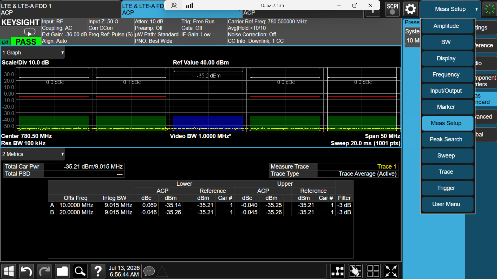
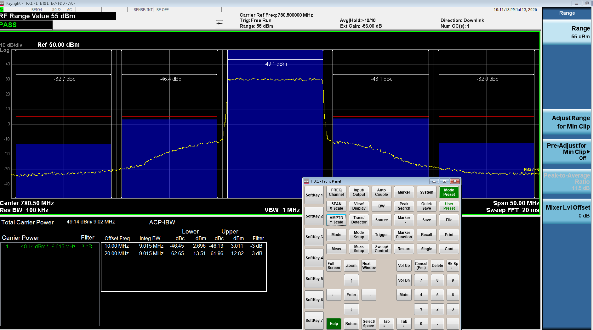
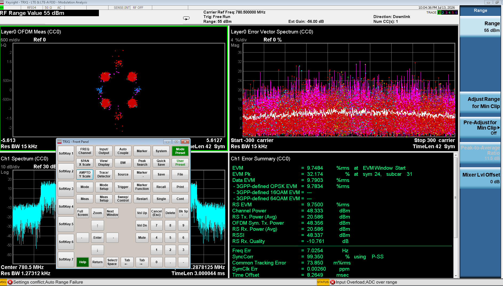

All RCT features in-depth · PA Protection · RSSI · NF · DSA · TDD Trigger · Cadence Groups
FC01ACLR — Adjacent Channel Leakage RatioAdvancedclick to expand+
3GPP §6.6.2 · test_Tx_ACLR · Cadence P0/P1/P2 · ETM 1.1 · frequency fm
Plain English First
Your PA amplifies the wanted signal but also creates distortion products that leak into neighboring channels. ACLR measures how much power you're spilling on your neighbors. Higher dB = less leakage = better. 3GPP minimum is 45 dB. PW internal target for Metro/FHGW is 55 dB.
Pass/Fail Limits
Hardware
Limit
Tolerance
Band Override
COMBA OPT7.2 / OPT8
≥ 45 dB
±0.8 dB
None
FHGW Box / Metro
≥ 55 dB
±0.8 dB
b0407, b0307_2nd_run, b082028_2nd_run, b41_1st_run → 52 dB
MiniMetro
≥ 55 dB
±1 dB
None
How Test Runs
ETM: 1.1 only (QPSK 1/3 — cleanest signal, easiest for PA) · Frequency: fm (band middle) · EXA measurement: ACP mode → 4 offsets (A_lo, A_up, B_lo, B_up) → worst case is verdict Note: B-offset (±2×BW) often hits instrument noise floor → use A-offset (±BW) for real verdict
What If It Fails
DPD not converged → check DPD alignment in PreChecks · PA compression → output power too high, reduce gain · DAC clipping → CFR input power wrong register (0x534020004) · Cable VSWR → reflection re-enters PA, creates mixing products
Interview Q
Q: ACLR is 50 dB but spec is 45 dB — why might it still fail? A: FHGW Box and Metro have a tighter internal spec of 55 dB. The 3GPP 45 dB limit is the regulatory minimum; PW adds 10 dB margin for interference management.
Real RCT Implementation — actual code from the test framework
Files:measure_test_Tx_ACLR (features/tech_4g/conformance_unified_lte_tx_speed.py) · analyzer setup config_te_for_lte_acp (infrastructure/utils.py) · fetch sa_acp_acquire_averaged (test_equipment/te_equipments.py).# config_te_for_lte_acp (utils.py)
INST:SEL LTEAFDD
CONF:ACPower
MMEMory:LOAD:MASK ".../ACP_BS/ACP_BS_{bw}MHz_pairE-UTRA_CatB.mask"
:SENSe:ACPower:OFFSet:LIST:STATe ON,ON,OFF,OFF,OFF # A(+/-BW) + B(+/-2xBW)
:SENSe:ACPower:AVERage:COUNt 10
:SENSe:ACPower:AVERage:STATe ON
# sa_acp_acquire_averaged (te_equipments.py)
:INIT:ACP ; verify_opc() ; FETCh:ACPower10? # -> ~40-value tableResult parse:ACLR_CHANNEL_IDX = (3,13,23,33) → abs() of A_lower, A_upper, B_lower, B_upper. KPI (Metro_kpi_thresholds.json):test_Tx_ACLR.min_limit = 55 dBc, tolerance = 0. limits_validation_aclr (utils.py): each offset PASS if meas > limit (higher = better). Band override (the 52 dBc): the validator reads band_min_limit["{fhgw_band}_{dualband_step}"] → 52 dBc for the 2nd-run / dual-band cases (b0307_second_run, b0407, b082028_second_run, b41_first_run). Quirks: 10-sweep ACP averaging (GRDEV-8508, ~0.2 dB margin on B7 top channel); the B offset (±2×BW) often sits at the instrument noise floor, so the A offset is the real verdict.
Real RCT quirk — auto-range (min-clip) before ACLR (PR 586 / GRDEV-8131)
measure_test_Tx_ACLR was the only TX measure missing the analyzer auto-range that every other TX test already did. Added before the ACP read:ant.equiphandler.sa_set_atten_for_min_clipping() # SENSe:POWer:RF:RANGe:OPTimize IMMediate"Min-clip" = adjust the analyzer input range for max dynamic range without overload. Without it, the per-RFFE isolated (lower-power) signal read ACLR near the noise floor → degraded 51–52 dBc; with it each isolated path auto-ranges → 54.5–55.6 dBc (+2–3 dB). EVM always passed because its measure already auto-ranged. (See FC20 for per-RFFE IQ playback.)
Lab screenshots — real EXM ACP measurements

Real EXM ACP measurement — B28 low power, Metro AAU rev3

Real EXM ACP/ACLR — B28 full power (TRX1), Metro AAU rev3
FC01TACLR — Automation Trace: config → code → run → verdict (ruauto RCT)Code Traceclick to expand+
3GPP §6.6.2 · test_Tx_ACLR · framework: ruauto · concrete setup: RCT-4G-GR-AAU-B1B3-TRX7 · paths are repo-relative to ruauto/source/ unless noted · this is the "how the automation actually does it" companion to the ACLR card above
The whole flow in one line
A priority profile (P0/P1/P2…) names test groups → groups list Test-IDs → test_Tx_ACLR registration declares freqs/ETMs & report columns → the road-trip loop sets the DUT transmitting an E-TM and dispatches measure_test_Tx_ACLR by name → it drives the analyzer in ACP mode, fetches 4 adjacent-channel ratios → limits_validation_aclr compares each to the KPI limit → verdicts written to Excel + CI/Elastic.
① What configuration the test needs
Four files in the setup folder drive ACLR. The runner is fully config-driven — no test code changes per setup.
File
What ACLR reads from it
tc_cadence.json
Test-IDtest_Tx_ACLR: {frequency:["fm"], etm:["1.1","1.2"]} · it's in groups TS_DL_CI / Nightly / Regression / Sanity · priorities P0,P1,P2,P3 (via the DL groups; not P4/P5)
the pass limit: test_Tx_ACLR: {min_limit:55, tolerance:0, "3gpp_reference":"6.6.2"} → ≥ 55 dB flat for this setup (FHGW_Box file adds tolerance 0.8 + per-band overrides to 52)
ETM waveform: not a file loaded to the analyzer — the E-TM 1.1/1.2 signal is PHY-generated on the DUT by the testmac command rctdl <test_num> <bw> over SSH. The analyzer only loads an ACP limit maskACP_BS_{bw}MHz_pairE-UTRA_CatB.mask.
② The code path (cadence → dispatch)
All in features/tech_4g/conformance_unified_lte_tx_speed.py, class TestConformance. Two-phase design: a registration method declares columns/ETMs, a module-level measure_ free-function does the work — wired by name via globals()['measure_'+key].
Settle/DPD: 15 s settle after a freq change (L1396), check_signal_sync() before fetch (L3132), DUC max current wrapped around the sweep (L3114/3225), 10-sweep averaging (rationale: GRDEV-8508, ~0.2 dB margin on B7 top channel).
④ How results are captured
The ACP table has ~40 slots; ACLR reads 4 fixed indices (the two A offsets at ±BW and two B offsets at ±2×BW), all made positive with abs().
ACLR_CHANNEL_IDX = (3, 13, 23, 33) # L3076 A_Lower, A_Upper, B_Lower, B_Upper
measured = [abs(float(table[i])) for i in ACLR_CHANNEL_IDX] # L3168
A_lo, A_up, B_lo, B_up = measured
result = LteUtils.limits_validation_aclr(measured) # L3170 -> verdicts (see ⑤)
# marginal fail within 1.0 dB of limit -> _remeasure_aclr_if_marginal (L3081-3107, uses mean)
Written to: Excel sheet test_Tx_ACLR via xlxfile.write_result(..., one_line=True) (L3219) — all 4 values, each with its Verdict + pass/min criteria columns · CI/Elastic via tc.update_new_elastic(...) (L3220) · running verdict via verdict += [r0,r1,r2,r3] (L3221) → commit_running_verdict · analyzer screenshots to ScreenShots_ACLR_Band{n}_{ant}/.
⑤ How pass/fail is decided
One function: LteUtils.limits_validation_aclr() in infrastructure/utils.py (L4956-5012). Higher ACLR is better, so the test fails when a measured ratio is ≤ the limit.
# threshold resolution order (first hit wins):
# 1) kpi_thresholds["test_Tx_ACLR"].min_limit + .tolerance (+ band overrides)
# 2) tc_cadence["aclr_min_limit"], tolerance = 0.8
# 3) hard fallback: min_limit = 45, tolerance = 0.8 ("3GPP standard")
# -> this setup hits (1): min_limit = 55, tolerance = 0
aclr_pass_limit = aclr_min_limit - tolerance # 55 - 0 = 55
for meas in measured: # all 4 offsets, independently
min_result = FAIL if meas <= aclr_min_limit else PASS
pass_result = FAIL if meas <= aclr_pass_limit else PASS
return pass_results, aclr_pass_limit, min_results, aclr_min_limit
Key point: all four offsets are judged independently — the run fails if any one offset fails. There is no single "worst-case" number reduced before comparison; each ratio must be strictly > the limit. For this setup both the "min" and "pass" lines sit at 55 dB (tolerance 0).
Consolidated pseudo-code (copy/paste memory aid)
run_aclr(setup, priority=P0):
cfg = load(setup/tc_cadence.json)
kpi = load(setup/setup.ini -> kpi_thresholds_references/Metro_kpi_thresholds.json)
equip = load(setup/env_setup.json).analyzer where use_for_test # EXF E6550A :5025
hw = load(setup/fdd_test_setup.json) # bands, power, path_loss, sockets
groups = cfg.Cadence-IDs[priority] # P0 -> [TS_DL_CI, TS_UL_CI]
testlist = flatten(cfg.Group-IDs[g].Tests for g in groups)
if "test_Tx_ACLR" not in testlist: return
etms = cfg.Test-IDs.test_Tx_ACLR.etm # ["1.1","1.2"]
freqs = cfg.Test-IDs.test_Tx_ACLR.frequency # ["fm"]
limit = kpi.test_Tx_ACLR.min_limit # 55 (tolerance 0)
for band in hw.bands: # 1, 3
for bw in group.BW[band]: # e.g. 10
for etm in etms: # 1.1, 1.2
for f in resolve(freqs, band, bw): # fm -> actual MHz
DUT.rctdl(testnum(bw,etm), bw) # PHY emits E-TM (SSH)
wait_active_transmission()
analyzer.config_acp(f, bw) # LTEAFDD, CONF:ACP, load mask, avg=10
table = analyzer.acp_acquire_averaged() # INIT:ACP; FETC:ACPower10?
offs = [abs(table[i]) for i in (3,13,23,33)]# A_lo,A_up,B_lo,B_up
verdict = [ "PASS" if x > limit else "FAIL" for x in offs ]
xlsx.write("test_Tx_ACLR", f, bw, etm, offs, verdict, limit)
CI.push(offs, verdict)
# overall ACLR = PASS iff every offset of every (band,bw,etm,freq) is PASS
Variants & reuse (same verdict engine)
OTA — measure_test_Tx_ACLR_OTA (L3229+): radiated, selects a single TX antenna, sa_set_atten_for_min_clipping(), positioner azimuth/elevation sweep, TRP targets, extra power-meter columns. Samelimits_validation_aclr + ACLR_CHANNEL_IDX. tc_cadence runs it on E-TM 3.1a, but the function itself only proceeds for 1.1/1.2 (GRDEV-8243). Intermodulation §6.7 reuses measure_test_Tx_ACLR (loop L2850) with an inter_ctx that excludes interferer-occupied bins (TS 36.141 6.7.5). TDD 2-carrier — test_Tx_ACLR_2CC in features/tech_4g/tdd/Tx/conformance_nr_tdd_tx.py (not used by this FDD setup).
Reading a full LTE demod frame on the analyzer is slow, so the framework reads the Frame Summary table once per antenna and pulls all five TX-quality metrics from that single read. test_Tx_modulation_analysis has no freq/etm of its own (tc_cadence L17-18 is just a _note); each sub-test keeps its own Test-ID entry, and a group-level etm can override via the group_via trick (utils get_tc_cadence_param L115).
① The 5 sub-tests, their table field & pass limit (Metro)
Sub-test
Frame-table field
Pass limit (this setup)
3GPP
BS Output Power
ChannelPower
diff within ±2 dB (strict ±1.3, tol 0.7)
6.2
EVM
EVM
≤ 3.5% all ETMs (tol 0)
6.5.2
Frequency Error
FreqErr
≤ 0.05 ppm × f_DL (tol_hz 0)
6.5.1
Time Offset
TimeOffset
−160 < x ≤ 320 ns ⚠ hardcoded, no JSON
internal
DL RS Power
RSTP
expected ± 2.1 dB
6.5.4*
Runs in groups TS_DL_CI/Nightly/Regression/Sanity/Check → priorities P0,P1,P2,P3,P5. *DLRS: JSON says 6.5.4 but the validator docstring says 6.5.3 — a doc mismatch.
② Code path (one session, five extractions)
MOD_ANALYSIS_SUBTESTS = {EVM, BS_Output_Power, FrequencyError, DLRS, time_offset} # L40-43
test_Tx_modulation_analysis(self, xlxfile) # L301 register cols; resolve each
# sub-test etm/freq via group_via
dispatch: globals()['measure_test_Tx_modulation_analysis'](...) # L1030 (freq_type kwarg)
measure_test_Tx_modulation_analysis(...) # L1891
for ant in antennas:
config_te_for_lte_modulation_analysis_frame_summary(...) # utils L3468
headers = sa_read_headers_from_selected_modulation_analysis_windows(4) # L1933
values = sa_read_from_selected_modulation_analysis_windows(4) # L1934
table = dict(zip(headers, values)) # ONE table -> all 5 metrics
# per-metric block, each gated so it isn't double-run when also standalone (L699-700)
# note: a sub-test also present in this run's short_run is SKIPPED here (dedup, L375-382)
③ Run + ④ parse (shared)
DUT:start_rctdl(bw,etm) (products/vru/fdd_4g/base.py:505). Analyzer:config_te_for_lte_modulation_analysis_frame_summary sends CONF:EVM, loads demod setup TM<etm>-BW<bw>MHz.evms, feeds "Demod CC0 Frame Summary1" + "Error Summary1", :TRIG:EVM:SOUR EXT2; for 3.1a also EVM:CCAR0:HOM:STAT ON. Values via CALC:EVM:DATA4:TABL:STR?.
EVM measures how far each IQ symbol lands from its ideal position on the constellation. Think of it as aiming accuracy — 0% is perfect, higher % = more scatter. 64QAM needs tighter clustering (≤3.5%) than QPSK (≤17.5%). Anything above limit = blocks decoded incorrectly.
EVM% Formula
EVM% = √(Σ|error_vector|² / Σ|ideal_vector|²) × 100 Error vector = difference between actual measured IQ point and ideal IQ point
Limits by ETM
ETM Code
Modulation
3GPP Limit
Metro/FHGW Internal
Test Use
1.1
QPSK 1/3, 6 RBs
≤ 17.5%
≤ 3.5%
Standard nightly
2a
QPSK+64QAM mix
≤ 3.5%
≤ 3.5%
Regression
3.1
64QAM full BW
≤ 8.0%
≤ 3.5%
Regression
3.1a
64QAM alternate
≤ 3.5%
≤ 3.5%
Regression
3.2
16QAM
≤ 12.5%
—
Regression
3.3
QPSK full BW
≤ 17.5%
—
Regression
What If It Fails
IQ imbalance → constellation rotated/skewed → check IQ calibration registers · LO phase noise → symbol cloud diffuse → check PLL lock · DAC nonlinearity → even/odd harmonics → reduce DAC input level · DPD failure → PA distortion uncorrected → check DPD alignment status · Temperature → EVM degrades above 55°C PA junction temp
Interview Q
Q: ETM 1.1 limit is 17.5% but you're testing at 3.5% — why? A: 3GPP 17.5% is the regulatory floor. Metro internal spec is 3.5% for all ETMs — if we pass 3.5% on ETM 1.1, we know the radio is well within margin for any operator requirement.
Real RCT Implementation — actual code from the test framework
Files: composite measure_test_Tx_modulation_analysis reads table['EVM'] from the frame-summary; standalone measure_test_Tx_EVM uses a dedicated CEVM fetch.# standalone EVM (te_equipments.py)
CONF:CEVM
sa_evm_test_etm_vs_modulation(etm) # picks the right metric per ETM:
1.1 -> EVM ; 2a/3.1a -> 3GPP-256QAM EVM ; 3.1/2.0 -> 3GPP-64QAM EVM
3.2 -> 16QAM ; 3.3 -> QPSK
FETCH:CEVM1? # standalone read
# composite path
CALC:EVM:DATA4:TABL:STR? # frame summary -> table['EVM'], table['EVMPeak']KPI:test_Tx_EVM.etm_dependent = true, every ETM min_limit = 3.5%, tolerance = 0. limits_validation_EVM (utils.py:4473): PASS if EVM ≤ 3.5% (lower = better). 3GPP floor is 8–17.5% by ETM — PW is far stricter.
EVM RMS vs Peak %
The frame-summary table carries two numbers: EVM (RMS, averaged over all subcarriers/symbols) and EVMPeak (the single worst RE). RMS is the pass metric (vs 3.5%); Peak is a diagnostic. A high Peak/RMS ratio points to a sporadic impairment (one bad subcarrier, an LO spur, a DAC glitch) rather than uniform noise — if RMS is fine but Peak spikes, look for a localized defect, not a broadband SNR problem. Uniform thermal/quantization noise gives a low, steady Peak/RMS.
EVM Peak % vs RMS EVM — your early warning system
RMS EVM = root-mean-square over all symbols — the 3GPP/Metro pass metric (≤ 3.5%). EVM Peak = the worst single symbol, typically 3–5× RMS; not a BS limit, but the EXA reports it — use it for debug.
Pattern
Meaning
Likely cause
Peak >> RMS (e.g. 2% / 15%)
impulse distortion — occasional bad symbols
PA clipping on a PAPR spike, PLL phase hit, IQ-sample drop in eCPRI, B41 TDD trigger glitch
Peak ≈ RMS (e.g. 3% / 4%)
uniform distortion — consistent impairment
IQ imbalance, LO leakage, DC offset, sustained phase noise, constant DPD error
Example: RMS 3.2% passes Metro's 3.5%, but Peak 14% reveals an intermittent fault — in the field it causes sporadic CRC failures + HARQ retransmits. Read both on the EXA: Modulation Analysis → Summary. Q: EVM RMS 3.0% (passes) but Peak 18% — pass the test?Technically yes (spec is RMS-only), but 18% peak = one-in-N symbols severely wrong. Flag it and hunt the impulse source before sign-off: B41 TDD trigger timing, eCPRI sequence errors, the CFR register value.
Real RCT quirk — EVM modulation-table crash-guard (ECS)
table['EVM'] → table.get('EVM') (also ChannelPower, TimeOffset, FreqErr, RSTP). When the analyzer couldn't demod-sync, the modulation table came back missing those keys entirely → KeyError: 'EVM'hard-crashed the whole TX road-trip at the first frequency (seen on B8 real-tx). Now a no-sync read degrades to 0/fail (what the file's own _safe_float already intends) instead of crashing — the run completes and produces the full per-antenna/per-freq table. Behaviour is unchanged when the key is present.
Lab screenshot — real EVM + constellation

Real EVM + constellation — TRX1, Metro AAU rev3
FC02TEVM — Automation Trace: config → code → run → verdictCode Traceclick to expand+
3GPP §6.5.2 · test_Tx_EVM · Metro limit ≤ 3.5% (all ETMs, tol 0) · runs both inside Modulation Analysis and standalone
① Config
tc_cadence.json Test-ID L10: etm ["1.1","2a","3.1a","2.0","3.1"] (overridden to ["1.1"] in CI/Sanity/Check groups). Metro_kpi_thresholds.json L177-190 test_Tx_EVM: etm_dependent:true, every ETM min_limit 3.5, tolerance 0 → pass line 3.5%. 3GPP floor is 17.5% (ETM 1.1) — PW is far stricter.
② Code path
Two ways in — as a Modulation-Analysis sub-block, or standalone with a dedicated CEVM fetch.
composite: measure_test_Tx_modulation_analysis(...) # EVM block L2002-2018
avg_evm = table['EVM'] # from shared Frame Summary
standalone: measure_test_Tx_EVM(...) # L2084
config_te_for_lte_cevm(...) # utils L3548 -> CONF:CEVM
sa_evm_test_etm_vs_modulation(etm) # te L2124 pick EVM vs 3GPP-64/256QAM
sa_read_parameter_from_cevm(...) # te L2089 FETCH:CEVM1?
③ Run + ④ results
ETM→modulation map (sa_evm_test_etm_vs_modulation, te L2124): 1.1→EVM, 2a/3.1a→256QAM EVM, 3.1/2.0→64QAM EVM, 3.2→16QAM, 3.3→QPSK. Parse (L1962): avg_evm = _safe_float(table['EVM']); dB form 20·log10(evm/100); peak EVMPeak; per-modulation via read_3gpp_evm (L59) keys 3GPPEVMQPSK/16QAM/64QAM/256QAM. Written to Excel sheet test_Tx_EVM + CI/Elastic.
Measures whether the radio is actually outputting the power it was told to output. Formula: diff = configured_power − measured_power. Pass if diff is within limits. For FHGW, the 'configured power' is the rated P_rated at the BOB SMA connector.
+ve error (too much power) → calibration drift, check DAC scale registers · −ve error (too little power) → PA gain low, cable extra loss, fault 12 (tx_calibration_eeprom.json missing — caused ~6 dB B41 deficit in your unit 509 testing) · Band-specific failure → DSA register wrong for that band
FC03TBS Output Power — Automation Trace: config → code → run → verdictCode Traceclick to expand+
3GPP §6.2 · test_Tx_BS_Output_Power · verdict on diff = configured − measured, within ±2 dB (strict ±1.3) · ETM 1.1
⚠ Gotcha: the composite reports the strict verdict result['min_criteria'][1] (correct), but the standalonemeasure_test_Tx_BS_Output_Power appends result['min_criteria'][3] (L2499) — that index is the numeric limit abs(min)=1.3, not a PASS/FAIL string. Real code inconsistency between the two paths. File map: measure conformance_unified_lte_tx_speed.py L1979/2439; validator utils.py L4183/4011; driver te_equipments.py L2040.
FC04Frequency Error — Carrier Frequency AccuracyIntermediateclick to expand+
How far is your actual TX carrier from the EARFCN-defined nominal frequency? Specified in ppm (parts per million). 0.05 ppm at 2100 MHz = 105 Hz offset. UE uses frequency error to correct its own oscillator — too much error and UE loses lock.
Pass/Fail Limits
3GPP limit: ±0.05 ppm Metro tolerance: 0 Hz (zero tolerance — stricter) COMBA/FHGW tolerance: ±12 Hz Example at B1 2140 MHz: ±0.05 ppm = ±107 Hz
What If It Fails
TCXO drift → temperature compensation failed · GPS/PTP sync loss → reference clock running free → check fronthaul sync · PLL not locked → check PLL lock status register
FC04TFrequency Error — Automation Trace: config → code → run → verdictCode Traceclick to expand+
FC05TTime Offset — Automation Trace: config → code → run → verdictCode Traceclick to expand+
test_Tx_time_offset · symbol-timing offset of the transmitted frame vs the trigger · limit is hardcoded, not in JSON
① Config ⚠ no threshold key
There is no test_Tx_time_offset block in Metro_kpi_thresholds.json — searched, absent. The pass window is hardcoded in code (utils L5090). tc_cadence etm L16 = 5 ETMs. It is a sub-test of Modulation Analysis, so it inherits that dispatch.
When you have 4 columns (A/B/C/D), each antenna must transmit at the same instant. TAE is the worst-case timing difference between any two antenna ports. If columns are misaligned → beamforming fails → no array gain → coverage hole.
Pass/Fail Limits
Hardware
TAE Limit
How Measured
COMBA / FHGW Box
≤ 90 ns
EXA MIMO summary table, max across all pairs
Metro (tighter)
≤ 65 ns
Same — stricter PW internal spec
5G NR (TS 38.104)
≤ 65 ns
sa_read_mimo_table → FETCH:EVM000030
EXA SCPI
sa_set_evm_mimo_summary() → :DISPlay:EVM:VIEW MIMO :SENSe:RADio:MIMO:STATe 1 :FETCH:EVM000030? → parse columns [6,28,50,72,94] → TAE_i = abs(value_i) TAE_result = max(TAE_i across all antennas)
What If It Fails
Cable length mismatch → 1 ns per 20 cm cable → measure and match · Phase cal error → RFFE phase shifter not calibrated · Different RFFE propagation delays → check JESD204B alignment across lanes
FC06TX Dynamic Range — Power Control RangeIntermediateclick to expand+
How wide a power range can the radio cover? From max power down to minimum allocated power. Wide range = radio can serve UEs from next to it (low power) to cell edge (max power). Too narrow = can't serve close UEs without interfering with neighbors.
Pass/Fail Limits
Bandwidth
3GPP Min Dynamic Range
Tolerance
5 MHz
≥ 13.9 dB
±0.4 dB
10 MHz
≥ 16.9 dB
±0.4 dB
15 MHz
≥ 18.7 dB
±0.4 dB
20 MHz
≥ 20.0 dB
±0.4 dB
Test Procedure
ETM 2a (QPSK+64QAM mix) — varying RB allocation to create high and low power states Measure Channel Power at min and max RB configs → compute difference → compare to limit
What If It Fails
Minimum power too high → LO leakage sets floor → check PA isolation · Max power clipped → CFR limiting too aggressively → check CFR threshold register
FC06TTX Dynamic Range — Automation Trace: config → code → run → verdictCode Traceclick to expand+
3GPP §6.3.2 (TS 36.104) / §6.4.2 (36.141) · test_Tx_dynamic_range · "dynamic range" here = OSTP span between a high-power and a reduced-power E-TM, per BW
① Config ⚠ not scheduled in this setup
tc_cadence.json Test-ID L4: frequency ["fm"], etm ["2a","3.1a","2.0","3.1"]. It transmits four E-TMs and forms two deltas: |OSTP(2.0) − OSTP(3.1)| and |OSTP(2a) − OSTP(3.1a)| (high-power model minus reduced-power model). ⚠ It is NOT in any Group-IDs `Tests` list in RCT-4G-GR-AAU-B1B3-TRX7 and is not a Modulation-Analysis sub-test — so no P0–P5 cadence runs it here; it only runs if added to a group or invoked explicitly. Metro_kpi_thresholds.json L145-155 per-BW min_limit dB: 5→13.9, 10→16.9, 15→18.7, 20→20.0, tolerance 0.
② Code + ③ run + ④ results
Register L185 → dispatch globals()['measure_test_Tx_dynamic_range'] L1030 → measure L1748. Invoked once per ETM; verdict formed only once all four OSTPs are collected.
for etm in [2a, 3.1a, 2.0, 3.1]:
start_rctdl(bw, etm) # different E-TM = different power profile
config_te_for_lte_modulation_analysis_frame_summary(...) # utils L3468
table = dict(zip(headers, values)) # Frame Summary window 4
ostp[etm][ant] = float(table['OSTP']) # L1791-1814
diff_2_31 = abs(ostp['2.0'] - ostp['3.1']) # L1832
diff_2a_31a = abs(ostp['2a'] - ostp['3.1a']) # L1839
Note: the DUT power is not commanded/stepped in-function — the span comes from loading different E-TMs. Written to sheet test_Tx_dynamic_range (both diffs + verdicts).
min_limit = kpi['test_Tx_dynamic_range']['limits'][bw]['min_limit']
pass_limit = min_limit - tolerance # tol 0 -> == min_limit
PASS if meas >= min_limit # higher span is better
e.g. at 10 MHz the OSTP span must be ≥ 16.9 dB. File map: measure conformance_unified_lte_tx_speed.py L185/1748; validator utils.py L3949. RX dynamic range is a separate throughput/BLER sweep — test_lte_Rx_DynamicRange1 / _AWGN in conformance_unified_lte_rx_speed.py L352/374 (§7.3).
FC07SEM — Spectrum Emission MaskAdvancedclick to expand+
3GPP §6.6.3 · test_lte_Tx_Mask · Regression cadence only
Plain English First
A mask drawn around your channel — your emissions must stay below it at every frequency offset. Think of it as the shape your signal is allowed to occupy. Anything leaking outside = FAIL. Unlike ACLR (which measures one adjacent channel), SEM checks the full spectrum shape.
SEM Limits (Standard / COMBA / FHGW)
Offset from channel edge
Limit
Measurement BW
0 → 5 MHz
−5.5 to −7.5 dBm (sloping)
100 kHz RBW
5 → 10 MHz
−12.5 dBm flat
100 kHz RBW
> 10 MHz
−13.0 dBm flat
1 MHz RBW
Metro SEM Limits (tighter)
Offset
Limit
RBW
0.015→0.215 MHz
−14 dBm
30 kHz
0.215→1.015 MHz
−14 to −26 dBm
30 kHz
1.015→1.5 MHz
−26 dBm
30 kHz
1.5→10.5 MHz
−13 dBm
1 MHz
What If It Fails
DPD not aligned → spectral regrowth exceeds mask · Adjacent carrier → dual-band interference → check band isolation filters · Harmonics → 2nd/3rd order products → check PA operating point
Real RCT Implementation — actual code from the test framework
Files:measure_test_lte_Tx_Mask (conformance_unified_lte_tx_speed.py) → config_te_for_lte_mask (utils.py) → sa_load_mask_setup(get_sem_mask_setup_name(bw, dl_freqGHz, duplex)) → FETCh:SEMask10?. The analyzer loads a per-(bw, freq, duplex) mask file and returns pass/fail + worst margin per segment.Mask (Metro_kpi_thresholds.json → test_lte_Tx_Mask, array [Δf_start, Δf_stop, limit_start, limit_stop, MBW]):
Offset from edge
Limit (dBm)
Meas BW
0.015–0.215 MHz
−14
30 kHz
0.215–1.015 MHz
−14 → −26 (slope)
30 kHz
1.015–1.5 MHz
−26
30 kHz
1.5–10.5 MHz
−13
1 MHz
> 10.5 MHz
−15
1 MHz
3GPP §6.6.3. Note the KPI comment literally reads "Operating band unwanted emissions (SEM)" — so this test is the OBUE test (see FC18).
What SEM actually measures — the mask explained
The mask is a continuous power-limit envelope vs frequency offset from the CHANNEL EDGE (not from carrier centre). For a 20 MHz channel the edge sits at ±10 MHz from centre, so a "0–5 MHz offset" point is 10–15 MHz from the carrier.
Offset from edge
Meas BW
Representative 3GPP limit
0–5 MHz
30 kHz
−10 dBm
5–10 MHz
30 kHz
−13 dBm
10–25 MHz
30 kHz
−25 dBm
> 25 MHz
30 kHz
−25 dBm
Note: the table above is the generic wide-area-BS shape. The actual mask your RCT loads is stricter and per-band — see the "Metro SEM Limits" box above (−14 dBm near-edge tapering to −26, then −13/−15 dBm), loaded as a per-(bw, freq, duplex) mask file by config_te_for_lte_mask.
SEM vs ACLR — what each catches
ACLR = integrated power in one adjacent-channel bandwidth → one number per neighbour; catches broadband spectral regrowth. SEM = continuous spectral envelope → catches a narrow spur near the edge and asymmetric distortion. ACLR can PASS while SEM FAILS if a single narrow spur pokes above the mask just outside the channel. They are complementary — always run both.
Multi-band SEM — the B1+B3 interaction
With B1 (2140 MHz) and B3 (1842 MHz) both active, IM3 products appear:2*f_B1 - f_B3 = 4280 - 1842 = 2438 MHz (near B41 - can hit B41 SEM if B41 active)
2*f_B3 - f_B1 = 3684 - 2140 = 1544 MHz (in B1 UL - can hit B1 UL protection)This inter-band IMD is why the dual-band 2nd-run ACLR limit relaxes to 52 dBc (b0103) — SEM gets an equivalent relaxation. Debug: SEM fails only with the second carrier active → inter-band IMD, not a DPD problem (DPD linearises one carrier at a time). Check inter-band isolation between the PA output paths.
Worked example — B3 @ 1812.5 MHz / 15 MHz (Metro AAU, PNG customer)
Channel: 1812.5 ± 7.5 = 1805–1820 MHz (the wanted 52.5 dBm). DL operating band B3: 1805–1880 MHz (3GPP-fixed). SEM territory (§6.6.3): band edge ±10 MHz = 1795–1890 MHz — crucially measured from the band edges, not your channel. Because this 15 MHz sits at the very bottom of B3, the SEM region extends far above you (to 1890) but barely below (to 1795).Vendor mask actually loaded (bands >1 GHz, Cat B; TS 36.104 Table 6.6.3.2.1-6 — one table for 5/10/15/20 MHz, so the 10 and 15 MHz mask files are identical):
Offset from edge
Limit
Meas BW
0.05–5.05 MHz
−5.5 → −12.5 dBm (sloped)
51 kHz
5.05–10.05 MHz
−12.5 dBm
100 kHz
10.5–15 MHz
−15 dBm
1 MHz
The failing 10.5–15 MHz segment lands at ~1830.5–1835 MHz — inside B3's band, so the limit legitimately applies. Measured −14.83 dBm vs −15, and it repeats across three antennas (A −14.83, C −14.09, D −15.44) → the single most credible genuine radio finding in the campaign. (RBW matters: the same emission in 51 kHz vs 1 MHz differs by 10·log₁₀(1e6/RBW) ≈ +12.9 dB — we log the raw value in its own RBW, because that's what the 3GPP limit is specified against.)
Frequency territories & why the framework splits spurious into 5
1795 1805 CHANNEL 1820 1880 1890
──────┼──────────┼─────────────┼───────────────────────┼──────┼────►
│ │ wanted │ │ │
│◄──────── DL operating band (1805-1880) ─────────►│ │
│◄──────────── SEM territory 6.6.3 (1795-1890) ───────────►│
spurious 6.6.4 ◄─┘ └─► spurious3GPP defines 4 spurious ranges; the framework splits the last (1 GHz–12.75 GHz) around the SEM gap — for B3 that gap is exactly 1.795–1.89 GHz — giving 5 rows, so SEM (§6.6.3) and spurious (§6.6.4) neither overlap nor double-count. The sweep stops at 12.75 GHz because 7 harmonics of 1812.5 MHz fit below it. Why only 2nd/3rd harmonics matter: the PA transfer series coefficients collapse (a₁ ≫ a₂ ≫ a₃, ~20 dB/order), the top harmonic gets the smallest algebraic share (cos³ gives 3f only ¼; cos⁵ gives 5f only 1⁄16), and the post-PA low-pass filter attenuates more with distance — by the 4th harmonic you're below the noise floor.
Real failure from the field — BSNL B1 run (fhgw.log)
From ruauto's auto-collected fhgw.log (136k lines, B1 antenna-A run @ DL 2159/2164). The RU never attenuates: all 303 power-scale ops read Attenuation: 0 dB, gain 0x11cc — constant, unattenuated gain across every E-TM. So the dynamic-range (§6.4) 1.1–1.2 dB deficit (measured 15.66–15.82 vs 16.9 dB limit) is not the RU gain chain — it points at the E-TM 2 OSTP measurement (an unoccupied-subcarrier noise pedestal inflating the min-power figure) or DU baseband scaling. Confirming: the 15 MHz 2.0→3.1 pair even passes (20.17 vs 18.7), so it's not a fixed RU limit. Also: the 38 unit-out-of-order alarms are benign (carriers torn down to reconfigure freq/E-TM); no DPD state is logged (would need on-device /run/media logs to judge ACLR 53–56 dBc vs the 55 target); and dac_current_values has no B1 entry (B3/B28/B41 do) — a real gap, but not the root cause since B3 also fails §6.4.
Real RCT gotcha — SEM segment mis-indexing (GRDEV-7734, Change 2)
The analyzer returns SEM as a flat list of (lower, upper) pairs — segment n lives at indices 2n / 2n+1. A defect used deltas_table_ind = 1 (never incremented), so segments 3, 4, 5 displayed a neighbouring segment's value and three genuine measurements (slots 7,8,9) were never read.- deltas_table_ind = 1 # never incremented -> wrong from segment 3
+ lower_ind, upper_ind = 2*ind, 2*ind+1 # correct 2n / 2n+1
+ if len(deltas_table) <= upper_ind: break # bounds guard, no IndexErrorVerified on the E6680A: :FETCh:SEMask15? returns 24 fields, 10 real at indices 0–9, the rest 9.91E+37 (Keysight "no result"). Verdicts did not change (SEM genuinely exceeds the mask by ~0.2–2.4 dB) — the fix corrects which segment each number is shown against, which is exactly what an RU-side investigation uses. Silent for ~12 months because the two live nightlies fall back to 3 segments (only the last wrong); ours was the first to run 5 segments and exposed 3 of 5.
FC08TX Off Power — Transmitter OFF PowerIntermediateclick to expand+
3GPP §6.4.1 · test_Tx_Transmitter_off_power · Not in standard cadence
Plain English First
When the transmitter is supposed to be OFF (between TDD bursts, or when no UE scheduled), how much power is still leaking? Even an 'off' PA leaks. This test catches it. Limit scales with bandwidth — wider channel = more noise bandwidth allowed.
Pass/Fail Formula + Limits
Formula: Limit = −85 dBm/MHz + 10·log₁₀(BW_MHz)
BW
Calculated Limit
5 MHz
−85 + 7.0 = −78.0 dBm
10 MHz
−85 + 10.0 = −75.0 dBm
15 MHz
−85 + 11.8 = −73.2 dBm
20 MHz
−85 + 13.0 = −72.0 dBm
Transient Period (§6.4.2)
Limit: ≤ 17 μs ramp time (both ON→OFF and OFF→ON transitions) Tested simultaneously with OFF power in test_Tx_Transmitter_off_power()
What If It Fails
PA bias leakage → PA not fully shutting off → check power sequencing · LO bleedthrough → LO still running during TX OFF → check LO gating
FC09Reference Sensitivity — Minimum RX PowerAdvancedclick to expand+
The weakest signal the RU can still decode correctly. EXM injects a signal at decreasing power until BLER hits 5% threshold. That power level = sensitivity. Lower number = more sensitive = better. Your B1 sensitivity is approximately −102 dBm theoretical (from NF chain calculation).
Stage 1 Coarse: init_power=−63 dBm → step −1 dB (coarse_step=1) Stage 2 Fine: fine_step=0.6 dB around crossing point Stage 3 Finest: finest_step=0.2 dB final precision Abort: bler_100_max_steps=1 → if BLER≥99% for 1 step, abort as FAIL (UL path dead)
DSA Runtime Adjustment
VruDsaMixin.apply_dsa_adjustments_from_ru() → SSH into RU → reads /etc/configs/personalities/<model>-rfdc.txt → DSA(band) per ADC → final KPI = base_dbm + DSA(band) DSA column appears in Excel report for traceability
What If It Fails
RX path open/broken → BLER stays 100% at all powers → bler_100_max_steps triggers · DSA mismatch → sensitivity shifted by DSA error amount · LNA failed → NF jumps ~20 dB → sensitivity degrades severely · ADC_ADJUST wrong → RSSI reads wrong, sensitivity calc offset · Your unit #510 → B1C, B1D, B3D dead → exactly this scenario
Real RCT Implementation — actual code from the test framework
Files:configure_test_Rx_Reference_Sensitivity_Level (conformance_unified_lte_rx_speed.py) → rx_knee_seeded_search → Utils.find_sensitive_point (utils.py); BLER read via get_statistics_ts_fox (testmac "ts fox").# 3-stage descent to the 5% BLER knee (test_parameters, Metro json)
init_power = -52 dBm ; fault_power = -51 (abort ceiling)
coarse_step = 2.5 dB -> fine_step = 0.6 dB -> finest_step = 0.2 dB
bler_threshold = 5 % (target BLER on FRC A1-3)
# DSA / start power (products/rrh/fhgw.py)
sens_point = -105 (RFFE) else -75
back_off_pwr = 5
start_pwr = int(sens_point + back_off_pwr - setup_loss)FHGW DSA runtime limit:kpi_limit = base_dbm + DSA(band), DSA read per-ADC from the RU rfdc.txt by apply_dsa_adjustments_from_ru() — so the sensitivity KPI tracks the actual front-end attenuation of each unit. Effective pass limit (this setup):rx_limits_validation_conditions gives Wide-Area / A1-3 = −69 dBm, +0.7 dB tolerance → −68.3 dBm — this overrides the KPI base_dbm = −101.5. Data vs PRACH sensitivity: data uses FRC A1-3 throughput/BLER descent (this card); PRACH uses preamble detection (miss ≤ 1%) — a different metric (FC10).
Real RCT quirk — B8 low-band RX bring-up (ECS)
Getting B8 RefSens/RSSI to run needed three config fixes:
Fix
Why
cell_amount 1 → 2
with 1 the DU only brought up B8 on ant1 (ant2–4 read noise); 2 brings up all four antennas — the key fix for B8 real-tx
radio_NF: 3
required by the RX RSSI/RefSens path (was missing → KeyError)
add Rx to antenna_mapping[b082028]
the RX road-trip indexes [band]['Rx']; only Tx existed → KeyError 'Rx'
Result on B8: DL EVM 0.54–2.09%, ACLR 60.9–61.9 dBc (all 4 ant × 3 freq); UL RefSens 12/12, RSSI 36/36, PRACH Not Tested.
FC09DSensitivity — Debug Playbook: isolating a low-sensitivity RU (from a real escalation)Debugclick to expand+
3GPP §7.2 · TS 36.104 / 36.141 · "why is B28 RX sensitivity short?" — the step-by-step isolation an interviewer loves
The formula, and what each term means
PREFSENS = −174 + 10·log10(BW) + NF + IM + SNR (dBm) • −174 dBm/Hz = thermal noise floor (kTB at room temp). • 10·log10(BW) = noise power over the occupied bandwidth (Hz). • NF = BS noise figure — 3GPP: 5 dB Wide-Area, 10 dB Medium-Range, 13 dB Local-Area. • IM = implementation margin = 2 dB. • SNR = the SNR that reaches 95% throughput on the FRC (per-BW, from simulation; usually slightly negative). Example (1.4 MHz): −174 + 10log10(1.1M) + 5 + 2 + (−0.6) ≈ −107.3 dBm.
Note: for BW ≥ 5 MHz the requirement is met by applying FRC A1-3 to consecutive 25-RB chunks. Pass = throughput ≥ 95% at the reference level.
RX combining gain — the number people forget
The 3GPP number above is per single RX port. The product combines multiple RX branches, so the system-level sensitivity is better than the single-port figure by the combining gain: • Mid band (B1/B3): 4-RX combining → ≈ +6 dB • Low band incl. B28: 2-RX combining → ≈ +3 dB So a single-port measurement of ~−104 to −105 dBm on B28 becomes ~−107 to −108 dBm after 2-RX combining. Always state which one you're quoting — comparing a single-port measurement against a combined requirement (or vice-versa) is the #1 cause of a "sensitivity looks short" false alarm. B28 has less combining headroom (3 dB) than mid-band (6 dB), so it's the first to look marginal.
The isolation sequence (run in this order)
1 · Pin the firmware. Record the FHGW FW version the shortfall was seen on, and re-measure on a second FW build — rules out a FW/calibration regression before you touch hardware.
2 · +5 dB ADC attenuation, then re-measure. This is the key discriminator:
• sensitivity degrades with +5 dB → not enough system gain / RX gain margin → investigate the RX gain path (LNA, front-end, DSA/ADC_ADJUST).
• sensitivity ≈ unchanged with +5 dB → the ADC input level isn't the limiter → look at the DU / UL demod / BLER measurement path (decode, not RF).
3 · Change the test frequency. Move to a different (clean) in-band frequency. If it recovers, you had external RF interference, not an RU fault — verify the frequency is clean first.
4 · Compare to a reference/certification measurement. Line it up against a known-good result, but normalise first: account for the combining gain (2-RX vs single port) and any difference in the cable-loss application method — don't chase an absolute-value gap that's just a measurement convention.
How the ADC-attenuation check looks at the CLI
get-atten-dfe <ant> <cc> <atten×10> sets the digital front-end ADC attenuation; then inject the FRC and read power-monitor (UL dBFS), get-rssi (dBFS/dBm) and BLER. Sweeping ADC-ATT shows the sensitivity level at the filter input vs the ADC headroom:
ADC ATT
SG @ filter input
get-rssi (dBFS)
BLER (%)
0 dB
−107.8 dBm
−55.9
1.5
10 dB
−106.9 dBm
−64.5
1.5
20 dB
−102.4 dBm
−65.2
1.3
27 dB
−96.5 dBm
−inf (not detected)
1.2
More ADC attenuation eats RX headroom → the achievable sensitivity level rises (worsens). If adding attenuation barely moves BLER/sensitivity, the limit is downstream (DU/demod), not the ADC input.
Interview Q&A
Q: A B28 unit looks ~3 dB short on RX sensitivity — how do you debug it?
A: First check it isn't a measurement mismatch: the 3GPP number is per single RX port, but B28 uses 2-RX combining (~3 dB), so confirm I'm comparing like-for-like and normalise the cable-loss method. Then pin the FW version (re-test on a second build), add +5 dB ADC attenuation — if sensitivity degrades it's an RX-gain/system-gain problem (LNA/front-end/DSA), if it's unchanged the limit is in the DU/UL-demod/BLER path — and finally move to a clean frequency to rule out external interference.
Q: Why does mid-band have more sensitivity margin than B28?
A: Combining gain. Mid band (B1/B3) combines 4 RX branches (~6 dB), low band including B28 combines only 2 (~3 dB), so B28 has half the combining headroom and shows up marginal first.
Q: What does adding ADC attenuation tell you in a sensitivity investigation?
A: It separates an RF-gain limit from a decode limit. If +5 dB of ADC attenuation worsens sensitivity, the RX chain didn't have enough gain margin; if sensitivity barely moves, the ADC input level isn't the bottleneck and the problem is downstream in the DU/UL demodulation/BLER path.
FC07TReference Sensitivity — Automation Trace: config → code → run → verdictCode Traceclick to expand+
3GPP §7.2 · test_Rx_Reference_Sensitivity_Level · RX test: a signal generator (EXF/EXM) injects an FRC uplink; the RU must hit the throughput target · file conformance_unified_lte_rx_speed.py
① Config ⚠ effective limit is −69 dBm, not −101.5
tc_cadence.json Test-ID L19 frequency ["fm"]; in every UL group (TS_UL_CI/Nightly/Regression/Sanity/Check) → P0,P1,P2,P3,P5. Metro_kpi_thresholds.json L266-283 gives search params (init_power −52, coarse_step 2.5, fine_step 0.6, bler_threshold 5) and kpi.base_dbm −101.5 — but the pass limit actually used comes from tc_cadence rx_limits_validation_conditions (L251-260): Wide-Area-BS / A1-3 / all BW = −69 dBm. That custom RRH criterion overrides the 3GPP −101.5. Throughput must be 90–100% (target BLER 5% on FRC A1-3).
② Code path
RX test_Rx_* methods only prep columns; execution is the pytest method test_lte_fdd_Rx_sanity (L460) → road-trip → dispatch by name.
UE uses PRACH to knock on the cell door before getting scheduled. This test verifies the RU can detect that knock at the minimum specified power. The preamble is a Zadoff-Chu sequence — almost zero autocorrelation sidelobes, perfect for ranging.
PRACH Waveform Files (4G FDD)
BW
Waveform File
FRC
5 MHz
PRACH_Bw5[Mhz]_PID32_FreqOffset14_ZCZ8_1UEs.bin
PRACH_PID32_FreqOffset14_ZCZ8_1UEs_1ant
10 MHz
PRACH_Bw10[Mhz]_PID32_FreqOffset35_ZCZ8_1UEs.bin
PRACH_PID32_FreqOffset35_ZCZ8_1UEs_1ant
15 MHz
PRACH_Bw15[Mhz]_PID32_FreqOffset59_ZCZ8_1UEs.bin
PRACH_PID32_FreqOffset59_ZCZ8_1UEs_1ant
20 MHz
PRACH_Bw20[Mhz]_PID32_FreqOffset83_ZCZ8_1UEs.bin
PRACH_PID32_FreqOffset83_ZCZ8_1UEs_1ant
Pass/Fail Limits (FHGW Box)
base_dbm: −87 dBm (pre-DSA) → runtime: base + DSA(band)
Wrong Zadoff-Chu root → detector won't match → check PID32 config · ZCZ/Ncs mismatch → ISI between preambles · B41T TDD timing wrong → 9.9765 ms delay off → PRACH arrives in wrong slot · UL path broken → same as sensitivity failure
Real RCT Implementation — actual code from the test framework
Files:_run_prach (conformance_unified_lte_rx_speed.py) → build_prach_params (products/vru/base/stats.py) → config_te_for_lte_fdd_Rx_Sensitivity_test_case (loads the PRACH waveform) → bisection over SG power → get_statistics_for_prach_console_prints.# waveform loaded onto the signal generator (NVWFM)
NVWFM:PRACH_Bw{bw}[Mhz]_PID32_FreqOffset{n}_ZCZ8_1UEs.bin
FreqOffset 14 @5MHz , 35 @10MHz , 83 @20MHz ; band41 uses 37 @10MHz
# verdict (inline in _run_prach)
miss_detection = Miss_detected_opportunities * 0.1 # percent
PASS if miss_detection <= 1 AND rx_power <= prach_kpi AND opportunities != 0Trigger delay: the code uses a configurableext_delay (per-setup), not a hard-coded constant — the FHGW default is ≈ 9.9995 ms; the B41 TDD frame-alignment value ≈ 9.9765 ms is set in the setup config, not hard-coded in the measure function. ⚠ Config gap: in Metro_kpi_thresholds.json the test_Rx_PRACH.limits are all "TODO" for these bands — no numeric per-band PRACH KPI is filled for this setup, so verdicts fall back to code defaults. Flag before trusting PRACH pass/fail here.
Real RCT quirk — PRACH graceful-skip (ECS)
Wrapped the non-combined start_rctul(...) in the same try/except AssertionError the combined branch already uses. The B8 DU's Test-MAC doesn't have PRACH test 659 → AssertionError: TESTMAC>Test 659 not foundcrashed the whole RX road-trip (after RefSens + RSSI had already passed). Now it logs a warning, marks PRACH Not Tested for that BW, and continues — matching B1/B3 behaviour, and PRACH stays in the cadence.
FC08TPRACH — Automation Trace: config → code → run → verdictCode Traceclick to expand+
3GPP §8 (TS 36.141) · test_Rx_PRACH · SG injects a PRACH preamble at swept power/delay; the RU must detect it with miss-rate ≤ 1% · runs as a stand-alone RX test
① Config ⚠ B1/B3 limits are "TODO"
PRACH is not in tc_cadence Test-IDs — it appears only in UL group Tests lists (TS_UL_CI/Nightly/Regression/Sanity), freq hardcoded ["fm"] in _run_prach (L3175). Metro_kpi_thresholds.json L488-537 test_Rx_PRACH: mode "short", per-BW frc/wvf waveform names — but every entry in limits is the placeholder string "TODO" for this file, so no numeric per-band KPI resolves for B1B3 (code defaults in stats.py L1113 only apply if the value is None, not the "TODO" string). Flag before enabling PRACH here.
② Code + ③ run
Stand-alone dispatch after the road trip: globals()['test_Rx_PRACH'](...) (L525) → _run_prach (L3146).
Console regex pulls Prach opportunities, Miss detected opportunities, PID[n], TA[n]. miss_detection% = Miss detected × 0.1. Written to sheet test_Rx_PRACH (PID, TA, miss_detection %, Rx_Power dBm, KPI dBm, pass-criteria '1').
⑤ Pass/fail — inline in _run_prach (L3453)
if miss_detection <= 1: # ≤ 1% missed
if rx_power <= prach_kpi and opportunities != 0:
ever_passed = True
high = mid # try lower power
else:
low = mid # need more power
if high - low <= tolerance: # 0.5 dB
verdict = "Pass" if ever_passed else "Fail"
PASS only if the RU detects PRACH (≤1% miss) while input power ≤ the KPI sensitivity level. No separate validator — computed inline. File map: conformance_unified_lte_rx_speed.py L525/3146/3453; params products/vru/base/stats.py L1083/383; SG utils.py L3255.
FC17OBW — Occupied Bandwidth (99% power)TX Conformanceclick to expand+
Why it exists
OBW is the bandwidth that contains 99% of the transmitted power. It confirms the signal isn't spreading wider than its channel — a first, cheap sanity check on spectral containment (ACLR/SEM then check the leakage outside it). 3GPP §6.6.1.
Real RCT Implementation — actual code from the test framework
Q: OBW vs ACLR?OBW measures where 99% of your power sits (containment); ACLR measures how much leaks into the neighbour channel. A clean OBW can still fail ACLR if the last 1% tail is high.
OBW deep dive — formula, procedure, causes
Formula: integrate total TX power across the span, then OBW = f_upper(99.5%) − f_lower(0.5%) — the band holding the middle 99%. Typical clean LTE: ~18 MHz for a 20 MHz channel. Limit: OBW ≤ channel BW.EXA procedure: Mode LTE-FDD · Meas OBW · Span ≥ 3× channel BW · read the OBW result directly. OBW too wide? DPD not converged (spectral regrowth), CFR over-clipping, or PA saturation — same root causes as failing ACLR/SEM. vs SEM: OBW measures the wanted signal's width; SEM measures the unwanted emissions outside it. Q: OBW reads 21.5 MHz on a 20 MHz channel — what's wrong?Spectral regrowth. Check DPD convergence first (ACLR is almost certainly also failing). Run dpd-app-orx --debug to see if DPD is tracking.
FC18OBUE — Operating Band Unwanted EmissionsTX Conformanceclick to expand+
Why it exists
OBUE (3GPP §6.6.3) bounds the unwanted emissions across (and just outside) the operating band with the spectrum emission mask. In this RCT framework OBUE and SEM are the same measurement — the KPI entry test_lte_Tx_Mask is literally commented "Operating band unwanted emissions (SEM)" (see FC07). This card frames it from the OBUE side.
Real RCT Implementation — actual code from the test framework
Same as FC07 (SEM):measure_test_lte_Tx_Mask → config_te_for_lte_mask → sa_load_mask_setup(get_sem_mask_setup_name(bw, dl_freqGHz, duplex)) → FETCh:SEMask10?. The mask ranges (see FC07 table: −14 dBm near-edge tapering to −26, then −13/−15 dBm flat) are the OBUE limits.
OBUE vs Spurious
OBUE covers the region from the channel edge out to the operating-band edge + Δf_OOB (mask-bounded, relative-ish). Beyond that it becomes Spurious emissions (FC19), which use absolute far-out limits (−36/−30 dBm). Same analyzer, different frequency regime and limit type.
Interview Q&A
Q: OBUE vs spurious emissions?OBUE is the near-carrier mask across the operating band (SEM); spurious is the far-out sweep (9 kHz–12.75 GHz) against fixed absolute limits.
OBUE in depth — in-band, outside your channel
Conceptually OBUE = emissions within the operating band but outside your assigned channel. Reconciliation: in 3GPP TS 36.141 (and this RCT framework) OBUE §6.6.3 IS the spectrum-emission-mask test — the same test_lte_Tx_Mask as FC07. The near-edge portion of that mask is exactly this in-band-but-outside-your-channel region. Why it matters: B3 (1710–1880 MHz) is shared by multiple operators — your B3 TX must not pollute an adjacent operator's channel inside the same band. The limit follows the operating-band emission mask (matching ACLR at close offsets).
Multi-band OBUE risk + debug
B1+B3 IM products can land inside the B3 band but outside your channel → OBUE failure even though each carrier alone is clean. Debug: OBUE fail + ACLR pass → inter-band IM, not DPD. Q: OBUE fails on B3 when B1 active, passes when B1 off — cause?Inter-band IMD: 2×f_B1−f_B3 or 2×f_B3−f_B1 lands inside B3. Not fixable by DPD (it linearises one carrier at a time) — it's a hardware isolation problem between the B1 and B3 PA paths.
FC19Transmitter Spurious EmissionsTX Conformanceclick to expand+
Why it exists
Spurious emissions (3GPP §6.6.4) are unwanted outputs far from the carrier — harmonics, mixing products, LO leakage — swept from 9 kHz to 12.75 GHz. They must stay under absolute regulatory limits so the PA doesn't pollute other services (and, critically, its own co-located RX band).
Real RCT Implementation — actual code from the test framework
The −96 dBm UL-protection limit is the tight one — it guards the co-located receive band from the TX's own spurs.
Interview Q&A
Q: Why is the −96 dBm UL-protection limit so much tighter than −36 dBm?The RU's own receiver sits right next to the transmitter; a spur landing in the UL band at −36 dBm would desensitize its own RX, so that sub-band is protected to −96 dBm.
Where spurious come from — 5 sources
1. PA harmonics — PA non-linearity makes integer multiples of the carrier. B1 @2140: 2nd 4280, 3rd 6420, 4th 8560 MHz. These move with carrier freq. Suppressed by the duplexer/output filter (need >40 dBc). 2. Clock harmonics — ADC/DAC sample clock (e.g. 245.76 MHz) × N: ×5 = 1228.8, ×9 = 2211.8, ×17 = 4177.9 MHz. These do NOT move with carrier. Suppressed by PCB shielding + ferrite beads. 3. LO leakage — the PLL LO leaks at its own frequency / sub-harmonics, near the carrier offset. 4. PSU switching noise — DC-DC converters (100 kHz–few MHz) couple a comb of low-frequency spurs into the RF path. Fix: ferrites, layout, shielding. 5. Inter-modulation (multi-band) — B1+B3: 2×2140−1842 = 2438 (near B41), 2×1842−2140 = 1544 (B1 UL); higher orders anywhere.
Protected bands — tighter limits
Band
Frequency
Limit
Why
GPS L1
1559–1610 MHz
−47 dBm
GPS interference
WCDMA
operator-dep.
−47 dBm
adjacent operator
Public safety
varies
−47 dBm
emergency services
A spur at 1575 MHz above −47 dBm = certification FAIL even though it's well under the general −30 dBm limit.
EXA measurement procedure
Mode: Basic SA (not LTE mode) · Meas: Spurious Emissions · 9 kHz → 12.75 GHz · Detector: Peak · Sweep: 3–5 min (longest test in RCT).
Range
RBW
9–150 kHz
1 kHz
150 kHz–30 MHz
10 kHz
30 MHz–1 GHz
100 kHz
1–12.75 GHz
1 MHz
First places to check (harmonics): B1→4280/6420 · B3→3684/5526 · B8→1884/2826 · B28→1516/2274 · B41→5090/7635 MHz. (RCT: measure_test_lte_Tx_Spurious loads a per-BW mask and reads FETCh:SPURious? — see the Real RCT box above; general limit −30 dBm, 3GPP §6.6.4.)
Debug decision tree
SPUR ABOVE -30 dBm -> change carrier by +5 MHz -> did it move?
moved ~10 MHz (2x) -> PA 2nd harmonic -> check duplexer rejection @2f
moved ~5 MHz (1x) -> PA fundamental leak / LO product
did NOT move -> clock harmonic or PSU switching
check clock freq & multiples, DCDC freq, shielding
only with 2nd carrier active -> inter-band IMD (hardware isolation; NOT DPD)
Interview Q&A
Q: Spur at 4280 MHz during B1 test, −28 dBm — pass or fail?FAIL: −28 > −30 dBm. Root cause: 2nd harmonic of B1 (2×2140). Check duplexer harmonic rejection at 4280 MHz (want >40 dBc); if OK, check the output filter. Q: Spur at 1228.8 MHz, carrier B3 1842 MHz — a PA harmonic?No — 1842/1228.8 = 1.5 (not integer). It's 245.76 MHz × 5 = the ADC/DAC clock harmonic. Proof: move carrier to B1 2140 — if the spur stays at 1228.8, it's a clock spur. Fix: clock-distribution shielding, ferrite beads. Q: All spurious pass single-band, fail with B1+B3 — what problem?Inter-band intermodulation — IM products of B1×B3 appear as spurs. Not a DPD problem (DPD linearises one carrier at a time). Needs a hardware fix: better B1↔B3 PA-path isolation or band-specific filtering after combining.
Worked example — B3 @ 1812.5 MHz / 15 MHz spurious (measured)
The five ranges and what antenna A actually returned:
Range
Measured
Limit
Verdict
Peak at
9 kHz–150 kHz
−51.8
−36
PASS +18.0
—
150 kHz–30 MHz
−44.4
−36
PASS +7.1
—
30 MHz–1 GHz
−25.4
−36
FAIL −8.4
856.6 MHz
1–1.795 GHz
−0.2
−30
FAIL
1.298187539 GHz
1.89–12.75 GHz
+13.3
−30
FAIL
5.443 GHz
The 1–12.75 GHz "failures" are analyzer artefacts (next box); the 30 MHz–1 GHz fail is genuinely unexplained (its peak moves per antenna: A 856.6, B 896.1, C 925.7 MHz — a fixed mixer artefact can't move) and is the one place a real 10.8 dB failure might hide — resolved by a 50 Ω termination test.
Why 2nd & 3rd harmonics dominate
A real PA bends near full power; write its curve as a series and feed one tone:Vout = a1*Vin + a2*Vin^2 + a3*Vin^3 + ...
cos^2 x -> DC + 2f cos^3 x -> f + 3f
=> the amplifier MANUFACTURES energy at 2x, 3x... the carrierThree effects kill the higher orders: coefficients collapse (~20 dB/order), the top harmonic gets the smallest share (cos³→¼ at 3f, cos⁵→1⁄16 at 5f), and filters improve with distance — so only the 2nd/3rd realistically threaten the limit. Harmonics worsen with output power; the AAU at 52.5 dBm sits right where curvature matters (same physics as guitar-amp clipping). B1 harmonics: 2× = 3.625, 3× = 5.4375, 4× = 7.25 GHz.
The analyzer-compression artefact — real emission vs measurement artefact
The RU outputs 52.5 dBm; after ~41 dB cable loss +11.5 dBm arrives at the analyzer. A mixer wants −10 to −20 dBm to stay linear — at +11.5 dBm it is 20–30 dB into compression and manufactures its own harmonics of the carrier. Three proofs the 1–12.75 GHz peaks are instrument-born: 1. 5443.3 / 1812.5 = 3.003 (exact 3rd harmonic; B1 gave 4278.7/2140 = 1.999, the 2nd). 2. 1.298187539 GHz is identical across antennas A/B/C to 9 sig-figs — three different cables/branches — so it is generated inside the instrument, not the radio. 3. +13.3 dBm = 39 dBc — too poor for a filtered PA (60–70 dBc), right for a compressed mixer (30–50 dBc).ref_val = pass_criteria_dbm % 10 # conformance_unified_lte_tx_speed.py
# Python modulo on negatives: -36 % 10 = +4 , -30 % 10 = 0
# -> analyzer told to expect ~0 dBm while +11.5 dBm arrives -> compressionBench tests to close it: 50 Ω termination (isolates 30 MHz–1 GHz), a 20 dB pad (a real emission drops exactly 20 dB; an artefact collapses further), and fixing the ref-level modulo.
Real RCT gotcha — GRDEV-7734: Spurious could not run on any EXM analyzer
Every TX run aborted with AttributeError: 'KeysightEXM_E6640A' object has no attribute 'sa_set_spur_report_mode_lte_fdd' (utils.py:3657), raised inside test_lte_Tx_Spurious during E-TM 1.1 — which killed the entiretest_lte_Tx_sanity item, so Spurious, EVM, Frequency Error and Dynamic Range all produced NO DATA (that's the real reason "dynamic_range had no data" — collateral damage, not a DU/PHY fault). Root cause: the three spurious SCPI methods live in a shared SpuriousMixin (created 2026-06-25, GRDEV-8244) added to KeysightEXA_N9010B and KeysightPXI_M9410A but missed on KeysightEXM_E6640A. Validated on the E6680A that all the SCPI works (:INST:CONF:LTEAFDD:SPURious, :SENS:SPUR:REPT:MODE MMARgin, :FETCh:SPURious?), so the fix is one line:- class KeysightEXM_E6640A(KeysightEXF_E6550A):
+ class KeysightEXM_E6640A(SpuriousMixin, KeysightEXF_E6550A):After: EVM and Frequency Error went NO DATA → PASS; the run completes instead of aborting. Never caught because no cadence anywhere executes Spurious (1 of 54 setups run it — ours), so the missing mixin was unreachable dead code. (The EXF E6550A/E6650A classes still have the same gap — left alone, no bench to validate.)
FC20Per-RFFE IQ Playback (PR 586) — isolate each RFFE × polRCT Featureclick to expand+
Why it exists
Per-RFFE IQ playback (PR 586 / GRDEV-8131) isolates each RF front-end module (RFFE) on each polarisation and measures ACLR/EVM per path, instead of only the combined output. Before this, TX conformance measured the summed signal from all PAs — so if one RFFE/pol was bad you couldn't tell which. Isolation turns off every path but one, so the analyzer sees just that PA. "IQ playback" = the DU replays a pre-generated IQ ETM waveform (deterministic, TX-only) rather than live PHY.
How it works (tx_speed.py:771 → rffe.py)
_run_iq_playback_measurements, gated on iq_playback=True AND rrh.tx_per_rffe_enabled() (rrh[0].RFFE AND rffe_control.tx_per_rffe).per ETM:
connect_cli_manager -> telnet localhost:8888 (root/root, '>' prompt)
per IQ port (pol A/B/C/D via iq_playback_ant_map):
iq_playback {ETM.bin} {port} 0 0 ; wait 5s ; rrh.rffe_restore_all
per RFFE 1..N:
rffe_isolate(band,rffe,pol):
mb-modify-rffe <0/1>
band-id: B1=1 B3=3 B8=8 B28=9928 B41=41 (TX not stopped)
wait settle_sec (7s)
rffe_verify_isolated -> mb-get-pa : only target ENABLED
else tag ISOLATION_UNCONFIRMED
_iq_measure_one -> measure_test_Tx_* (ACLR/EVM)
row tagged RFFE{n}{pol}_ant{k}
rffe_restore_all (at end and on failure)
Modes, layout & the two quirks that make it reliable
Two modes: each-RFFE-on-each-pol (per-RFFE isolation) and all-RFFE-on-each-pol (0xf baseline, all PAs). Layout: B1/B3/B41 = "all" (4 RFFE × 4 pol = 16 paths); B8/B28 = "split" (RFFE1,2 → A,B; RFFE3,4 → C,D). Two ECS fixes make it dependable: rffe_restore_all before every measure (else RFFEs stay off → analyzer reads noise, ACLR ≈ 0 / EVM ≈ 90%) and auto-range before ACLR (else the isolated low-power path reads ACLR near the noise floor — see FC01). Run flag: --iq-playback=true. Code: source/products/rrh/mixins/rffe.py (RffeMixin), wired into FHGW.
Interview Q&A
Q: A per-RFFE isolated path reads ACLR 51 dBc but the combined output passes 55 — is the PA bad?Probably not — check the analyzer auto-ranged (sa_set_atten_for_min_clipping). An isolated single-PA path is lower power, so without auto-range ACLR sits near the noise floor; with it you get ~54.5–55.6. Q: How do you prove only the target RFFE was transmitting?rffe_verify_isolated reads mb-get-pa — if any non-target PA is still ENABLED the row is tagged ISOLATION_UNCONFIRMED, so a bad isolation can't silently pass.
FC11PA Protection — 3 dB power reduction on carrier activation: how it works and is testedIntermediateclick to expand+
PW Internal · pa_protection.py · Cadence P1 (Nightly) — runs once before all other tests
Plain English First
When you activate a carrier, the PA protection state machine should automatically reduce power by ~3 dB to prevent overcurrent. This test verifies that 3 dB reduction actually happens. If it doesn't, the PA could be damaged during carrier activation at full power.
How It Works
Step 1: Read FHGW DAC output current BEFORE carrier activation via rfdc-app --debug Step 2: Activate carrier Step 3: Read DAC output current AFTER activation Step 4: Compute power change magnitude Pass: change = 3.0 ± 0.2 dB
Pass/Fail
Expected: 3.0 dB reductionTolerance: ±0.2 dBRange: 2.8–3.2 dB
DAC Map
DAC_MAP in pa_protection.py maps each (fhgw_band, band) pair → (tile_list, block_list) Missing mapping → RuntimeError at test time with clear message listing known keys Adding new band = add a row to DAC_MAP
Cadence Behavior
Runs ONCE at the top of test_main_procedure, before the per-group road-trip loop. A PA FAIL does NOT abort remaining tests — returns a verdict dict. Per-band verdicts reported as test_Tx_Pa_Protection_Band_<band>
What If It Fails
No 3 dB reduction detected → PA protection state machine not triggered → check OVERCURRENT register (default must NOT be 0xFF disabled) · Wrong reduction amount → DAC register mismatch → check rfdc.txt personality file · Your unit 509 → B3/B1 overcurrent parameter was 0xFF (disabled by default) — Dileep caught this
FC12PreChecks — Hardware Pre-Flight VerificationIntermediateclick to expand+
9 checks that verify the radio is in a known good state before any RF test begins. Like a pilot's pre-flight checklist — if any critical item fails, the test run stops immediately. Saves hours of debugging phantom failures caused by bad initial state.
The 9 Checks
#
Check
Command / File
Expected
Critical?
1
Version release
/etc/rfsoc_fru_detail.txt
PWAAU-YYYY.MM.DD-XXX-gXXXXXXXX[-bNN]
Yes
2
Power monitor DL
power_monitor {carrier}{ant} × all antennas
−16.7 dBFS ±0.5 (Metro) | −13.7 ±0.5 (FHGW)
Yes
3
CFR input power
md.l 0x534020004 | head -1
000000d7
Yes
4
DPD gain register
md.l 0x534020008 | head -1
0000020b
Yes
5
DPD input power + PAPR
dpd-app-orx --debug
Power: −9 dBm ±1.5 | PAPR: 8.3 ±1.0
Yes
6
DPD convolution alignment
dpd-app-orx
ALIGNED or OK
Yes
7
Activation file
/etc/configs/flavours/{band}/ACTIVE*.xml
Correct XML per band
Yes
8
Factory XMLs
(currently disabled)
N/A
No
9
EEPROM model name
flash_eeprom option 10
Integrity-ME-0-B1B3-00 (etc per band)
No
Overall Status Logic
PASS: all critical checks pass, no warnings PASS_WITH_WARNINGS: all critical pass, some non-critical warnings FAIL: any critical check fails → pytest.fail() called immediately → run aborts
While TX dynamic range tests how wide a power range the PA can output, RX dynamic range tests whether the receiver can still decode at 95% throughput when the signal sweeps from near-max (−95 dBm) down to near-sensitivity (−108.5 dBm). Tests AGC tracking and ADC linearity across the full input range.
Test Parameters
Parameter
Value
What It Means
range_start
−95 dBm
Start power — strong signal, easy to decode
range_stop
−108.5 dBm
End power — near sensitivity limit
range_step
−1 dBm
Step size — sweep downward
min_throughput
≥ 95%
Must decode at least 95% of blocks at every step
max_BLER
≤ 2%
Block Error Rate must stay below 2% throughout
Two Variants
DynamicRange1: Dispatcher — auto-selects AWGN or no-AWGN based on hardware license DynamicRange_AWGN: With AWGN interferer (requires AWGN license on EXM) DynamicR_no_awgn: Pure power sweep, no interferer
What If It Fails
Fails at high power (−95 dBm) → ADC clipping/saturation → check gain setting · Fails at low power (−108 dBm) → noise floor too high, same as sensitivity failure · Fails mid-range → AGC not tracking → check AGC step register
FC14RX Blocking & IntermodulationAdvancedclick to expand+
These tests check if a strong interferer (from a different operator, different band, or adjacent channel) can knock out your reception of a weak wanted signal. Real world: strong 2G tower nearby interfering with your 4G receive.
4 Test Variants
Test
3GPP
What is being blocked
Interferer type
test_lte_Rx_ACS
7.5
Adjacent channel selectivity
±BW offset, LTE signal
test_lte_Rx_ICS
7.4
In-channel selectivity
±BW/2 offset — inside channel
test_lte_Rx_NB_blocking
7.5
Narrow-band blocking
Single CW tone
test_lte_Rx_intermodulation
7.8
Two interferers mixing
CW + LTE at specific offsets
Search Algorithm
Binary search: start_power=−52 dBm → coarse=8 dB → fine=2-3 dB → finest=0.2 dB BLER threshold: 5%, bler_tolerance: 2-4 fault_power: −15 dBm (safety ceiling to protect LNA)
Test Frequencies
Run at: fb (band bottom), fm (band middle), ft (band top) — 3 frequencies This catches frequency-dependent filter roll-off at band edges
What If It Fails
ACS fail → LNA IIP3 too low → strong adjacent signal compresses receiver · ICS fail → within-channel spur from LO harmonics · Intermodulation → IM3 product falls in-band → check LNA IIP3 spec · NB blocking → sharp CW tone saturating LNA → check duplexer band rejection
FC15RSSI — ADC Calibration AccuracyIntermediateclick to expand+
PW Internal · test_Rx_RSSI · Cadence P1 (Nightly)
Plain English First
RSSI is how the radio reports signal strength. Two methods exist: CLI gives dBFS (raw ADC level), DU OAM gives dBm (calibrated physical power). This test verifies they agree — and that the ADC calibration (ADC_ADJUST register) is correct. David Bekker's July 1 task: automate this comparison.
RSSI_Ant0, RSSI_Ant1, RSSI_Ant2, RSSI_Ant3 (dBm) Dbfs_Ant0, Dbfs_Ant1, Dbfs_Ant2, Dbfs_Ant3 DSA[dB] column: DSA value applied per band (appears in all UL conformance sheets)
What If It Fails
CLI and DU differ by >2 dB → ADC_ADJUST register wrong · All antennas wrong → system NF calculation error · One antenna wrong → that ADC path has gain error · RSSI too low → sensitivity is worse than expected (LNA degraded)
Real RCT quirk — B8 RSSI calibration + the TDD iq-playback suffix (ECS)
B8 RSSI cal (rssi_cal[b082028][8]) done the B1-way: run RSSI with offsets = 0, read the raw RSSI per antenna at a known injected power, set offset = injected − raw. Result (validated, all 4 ant within 2 dB): ant1–4 = 41.44 / 41.25 / 40.53 / 39.96. The offset is applied per-antenna as rssi_cal[fhgw_band][band]; without it the RX RSSI test throws KeyError: 'rssi_cal'. (B28's rssi_cal is still 0 — pending B28 cabling.)TDD iq-playback suffix: for TDD bands the iq-playback ETM filename gets a _TDD suffix → ETM{etm}_{bw}MHz_TDD.bin. B41 (TDD) had tried to load the FDD file ETM1_1_10MHz.bin → "Could not open input file". (This is a TX iq-playback fix — full IQ-playback detail is in FC20.)
FC09TRSSI — Automation Trace: config → code → run → verdictCode Traceclick to expand+
test_Rx_RSSI · ADC calibration accuracy — the RU-reported RSSI must match the true injected power within ±2 dB · file conformance_unified_lte_rx_speed.py
① Config ⚠ limit hardcoded, no JSON
tc_cadence.json Test-ID L20 frequency ["fm"]; in TS_UL_Nightly/Regression/Sanity (P1,P2,P3; not CI). No test_Rx_RSSI block exists in any threshold file — the pass window is the hardcoded tol=2 dB at the call site. ADC cal offset rssi_cal[band][ant] comes from fdd_test_setup.json (all 0 for b0103 here); radio_NF 3 used in the SNR calc. Start power int(sens_point + rssi_back_off − loss) = −105 + 15 − loss.
def rssi_limits_validation(power, rssi, tol): # tol = 2
return 'Pass' if (power - tol <= rssi <= power + tol) else 'Fail'
# called: rssi_limits_validation(power - abs(setup_loss), rssi_value, tol=2)
Measured RSSI must sit within ±2 dB of the true antenna-input power. Parse failure → "Not Tested". File map: measure conformance_unified_lte_rx_speed.py L2425; RU read + validate products/rrh/fhgw.py L1418/1463/1553.
FWK1Framework — Architecture & execution (how ruauto runs)Frameworkclick to expand+
ruauto = a pytest framework testing RU/base-station gear (BBU · RRH · CWS) across 2G/3G/4G/5G · docs docs/ARCHITECTURE.md + knowledge_base/test_execution.md
The 3-layer model (strictly enforced)
TEST (source/features/) — the test_*.py cases + assertions. Calls Steps only. STEPS (source/steps/) — workflows/business logic (CwsSteps, VrpSteps, AttenuatorSteps). Uses Products. PRODUCT (source/products/) — device drivers (VRU, CWS, NR, HNG, RRH) over SSH/CLI/XML. ⚠ Golden rule: tests never touch a device directly — always through Steps. Products are auto-selected by config (tech + duplex + product flags) via a decorator registry (products/registry.py, @register_product).
test_lte_Tx_sanity() # entry: build test list (CI vs full RCT), config TE
func() # accumulate per-test ETMs/TMs/freqs
test_lte_Tx_road_trip() # NESTED LOOPS:
band > BW > power > freq(fb/fm/ft) > ETM > TM > test
globals()['measure_%s' % test](...) # dynamic dispatch
Combination math: bands × BWs × powers × freqs × ETMs × TMs × tests — e.g. 3×4×3×3×6×1×5 = ~9,720 measurements. That's why cadence tiers exist (P0 CI is tiny, P2 regression is huge).
Verdict values: Pass · Fail · Pass_Tolerance · Not Tested.
update_test_verdict(): fail_count += not_tested_count + fail_count # ⚠ NOT_TESTED counts as FAIL
write_final_verdict(): fail_rate = fail_count / total * 100 # -> FailRate.txt (Jenkins email)
# retry: up to 2x (restart L1/L2 + retransmit); still no TX -> record NOT_TESTED (= a fail)
Outputs: Excel per-test sheets · Elasticsearch (tc.update_new_elastic, index phy_data-*) · FailRate.txt. Note: an empty verdict list records 1 Fail — so a test that silently produced nothing still counts against you.
FWK2Framework — KPI thresholds (how pass/fail is resolved)Frameworkclick to expand+
Centralized, 3GPP-traceable limits · doc docs/KPI_THRESHOLDS_README.md · files under kpi_thresholds_references/ (Metro, FHGW_Box, …) selected by setup.ini [kpi_thresholds]
Structure & flavors
Each test entry carries 3gpp_reference, test_parameters, kpi, optional interferer. Limit flavors: frequency-dependent (bands.band_0_3000 / band_3000_4200), bandwidth-dependent (limits."5"/"10"/"15"/"20"), ETM-dependent (etm_limits), band overrides (band_min_limit, key {fhgw_band}_{dualband_step}).
⚠ FHGW inversion gotcha: for FHGW setups, aclr/evm/rx_limits/prach limits were removed from tc_cadence.json and centralized into the KPI JSON — so editing tc_cadence there has no effect. (See it live: Reference Sensitivity's −69 dBm comes from rx_limits_validation_conditions, overriding the 3GPP −101.5.)
RX sensitivity/PRACH limits are not fixed in JSON for FHGW. Each RU carries per-ADC DSA (Digital Step Attenuator) values in rfdc.txt. At test start apply_dsa_adjustments_from_ru() SSHes in, reads DSA, and computes:
kpi_limit = base_dbm + DSA(band) # JSON only stores base_dbm; a DSA[dB] column is logged
Why: each RU/band has different front-end attenuation — one hardcoded sensitivity number would be wrong per unit. So JSON _expected_* / sensitivity_limit values are reference-only and can look "wrong" vs the real pass limit.
Sensitivity search params + validation states
init_power start dBm · coarse_step/fine_step/finest_step search granularity · fault_power abort ceiling · bler_threshold target BLER% · bler_tolerance accept window · bler_100_max_steps abort a dead UL early. Verdict states:min_criteria = strict 3GPP (no tolerance) · pass_criteria = min ± tolerance (measurement uncertainty) · in-between = PASS_TOLERANCE. Validators live in infrastructure/utils.py :: LteUtils. (Doc caveat: KPI_THRESHOLDS_README.md has an unresolved git-stash marker near L122 and lists test_Tx_DLRS twice.)
FWK3Framework — Troubleshooting (real automation failures & fixes)Frameworkclick to expand+
War-stories from knowledge_base/troubleshooting.md — the kind of thing that eats an afternoon at the bench
Signal-generator / measurement
Ext-delay stuck ~9.9995 ms — for VVDN RUs the code forces ext-delay ON and, missing test_cases[0].ext_delay, falls back to hardcoded 9.9995e-3. Fix: set ext_delay in seconds (e.g. 0.008). (utils.py ~L2208) MXG error 628 (DAC over range) — ARB runtime scaling too high → DAC clips; output distorted though sg_set_pwr "succeeds". Fix: fix_error_628() steps scaling 80→60→50→30 until clear. (te_equipments.py) cable_loss missing on KeysightPXI_M9410A — that class needs a leading role arg; instantiating it analyzer-style shifts args so cable_loss looks absent. Fix: pass role; fixture now defaults cable_loss 0 and retries. (pytest_hooks.py)
Test logic / RF
Band-3 blocking wrong CF steps — range-3 in-band interferer used non-uniform steps, missed required 3GPP freqs. Fix: step_of_1MHz=True in get_cf_range_ib_and_oob(). Comba opt8 (LRCP) RX fails at fm/ft, passes fb — LRCP RRUs don't retune a running L1 on carrier change (netopeer ones do); antenna-outer/freq-inner loop left PHY on the old carrier → 100% CRC. Fix (GRDEV-8103): LRCP uses freq-outer _rx_road_trip_lrcp (fresh L1/L2 per freq). unique_keys empty on CSV merge — RNTI (16-bit MAC) looked up in an IMSI→UE_ID dict (different ID space) → 0 matches. Fix: new ue_identity.py + rnti_ueid_dict → >90% match.
CI / infrastructure
Jenkins SUCCESS but no branch update — MissingPropertyException: SYNC_BRANCH: Groovy interpolates ${SYNC_BRANCH} before bash runs. Fix: escape \$SYNC_BRANCH (or use ''' blocks). Empty --cadence= — mis-parsed category (e.g. CI ≠ map key ci) makes the lookup return empty. Fix: normalize category, default to P0. 2G opens too many sockets — per-iteration SSH opens (72) but closes only at end (2) → exhaustion. Fix: close L1/L2 SSH after each trx_mode. (vru.py)
FWK4Framework — S-Plane verification (PTP/SyncE timing)Frameworkclick to expand+
In an O-RAN 7.2x split the RU must keep its clock aligned to the network using PTP (IEEE-1588) driven by a Grand Master (GM), backed by GNSS + internal oscillator. Get it wrong → TDD breaks, interference, 3GPP timing fails. Two headline metrics: Frequency Error (Hz / ppb) and Time Alignment Error / TAE (ns). The RU cycles PTP states LOCKED → HOLDOVER → ACQUIRING → LOCKED. Measured by a spectrum analyzer (RF freq/time via EVM table) and a Keysight oscilloscope (physical 1PPS / 10 MHz edge).
The three test types
Holdover — deliberately kill the reference (GNSS or PTP) so the RU free-runs on its oscillator, then measure drift. GM is forced to HOLDOVER before measuring so the whole window is genuine holdover. Variants: GNSS-loss, PTP-loss (C3 topology), two-GM redundancy (4 h scope capture). Stability — long capture under PTP LOCKED to build statistics (~10 samples/s) + recovery tests (re-lock after PTP restart / full reboot, e.g. "locked in 145.2s"). Temperature monitoring — pre-test that waits for thermal equilibrium first, because oscillators drift with temp (TCXO ~±1 ppm/°C) and would contaminate results.
Config & pre-test flow
GMConfig caches the GM PTP settings (ptp_instance/ptp_port/gnss_port from setup.json "gm"). Cadence hierarchy Cadence-IDs["SPLANE"] → Group-IDs["TS_DL_SPLANE"] → Test-IDs; group carries PreTest[] + Tests[], dispatched via getattr(). Pre-test sequence: wipe FHGW logs → start PTP-packet tcpdump → temperature stabilize → PTP restart → start TX (aborts if all antennas < −20 dBm). PTP-restart polls fetch_lock_state() every 10 s until HOLDOVER, re-enables in a finally, then check_sync_state("LOCKED", timeout=600).
FWK5Framework — rctdl/rctul test-number map (cheat-sheet)Frameworkclick to expand+
The testmac commands are rctdl <test_num> <bw> (DL) and rctul <test_num> <bw> (UL). These tables turn bench params → test number · products/vru/base/phy.py + vru/fdd_4g/base.py
Specialty blocks: ULLA (100–216), TA (300–319), IRC (500/501), ICS (200/201), A3-x sensitivity (414–417). Full-allocation helper returns 47. No matching row → hard assert "no valid rct test number".
FWK6Framework — Extra test equipment (UE sims, OTA chamber, attenuators)Frameworkclick to expand+
Beyond EXA/EXM/VNA · source/test_equipment/README.md · rule: instruments are driven through the Steps layer, never imported directly in a test
Amarisoft UE Simulator (software)
Software UE/eNB/gNB — many UEs from one server, full 4G/5G stack. Used to create/attach UEs, run data calls, simulate handovers, collect measurement reports. AmarisoftSteps: connect(ip, lte_port=9001, nr_port=9002) → create_ue(h, imsi, technology) → attach_ue → get_ue_status.
TM500 UE Simulator (Anritsu hardware)
Hardware UE sim — hundreds of real-protocol UEs, multi-RAT. Used for capacity/load/stress + protocol conformance. TM500Steps: connect(ip, port=5000) → create_ue_pool(h, num_ues, imsi_base, technology) → start_ues → start_traffic(traffic_type, rate_mbps) → get_ue_statistics.
Azimuth ACE — OTA chamber
Over-the-air RF chamber with path-loss/fading + MIMO. Used for throughput, mobility/handover, coverage, interference in a controlled environment. AzimuthSteps: connect(ip, chamber_id) → configure_chamber(h, path_loss_db, fading_profile) → start_scenario(h, scenario) → get_test_results.
Programmable Attenuators + Oscilloscope
Attenuators (Weinschel 83, JFW 50MS, Mini-Circuits, Adaura, RPi) inject controlled path loss for sensitivity/handover/fading; run as a server (start_att_controller_server.sh). AttenuatorSteps: connect_attenuator(ip, model, num_channels) → set_attenuation(h, channel, attenuation_db). Keysight Infiniivision oscilloscope (KeysightSCOPE_Oscilloscope) is the instrument the S-plane 1PPS timing tests use (configure_channel, set_time_scale, measure_time_offset). Also present: Ixia traffic generator (IxiaSteps).
FWK7Framework — CI/CD & Jenkins (how tests trigger)Frameworkclick to expand+
doc docs/CI_CD.md · Jenkins declarative pipelines on ru-test-agent nodes
install (upgrade FW from Artifactory) → smoke_test (validate new FW, 4G+5G) → test (full conformance for the cadence). Flows through build_rct.sh → ci-build_rct.sh → ci-test_rct.sh; FW stages skipped if reuse_existing_fw=true.
Cadence → job type
Cadence
P0
P1
P2
P3
P4
Job
CI
Nightly
Regression
Sanity
SmokeTest
Authoritative mapping is per-setup in tc_cadence.json → Cadence-IDs. Reservation jobs use a Jenkins lock with priority=100 to jump the queue.
Not every test runs every time — that would take hours. Cadence groups define which tests run in which situation. P0 is the fastest gate (CI commit check), P4 is the most thorough (full regression). Your lab setup uses P0-P4.
Cadence Hierarchy (AAU B1B3 / B8B28)
Cadence
Group(s)
Tests Run
When Used
~Time
P0 (CI)
TS_DL_CI + TS_UL_CI
ACLR + Sensitivity only
Every commit
~15 min
P1 (Nightly)
TS_DL_Nightly + TS_UL_Nightly
PA Protection + Modulation Analysis + ACLR + Dynamic Range + Sensitivity + RSSI + PRACH
TS_DL_* = Downlink (TX) test suites TS_UL_* = Uplink (RX) test suites ci_summary_table: true = results posted to CI summary table frequency: fb=band_bottom, fm=band_middle, ft=band_top
test_Tx_modulation_analysis = composite
This single test name is a shortcut that runs 5 tests in sequence: test_Tx_BS_Output_Power + test_Tx_EVM + test_Tx_FrequencyError + test_Tx_DLRS + test_Tx_time_offset One combined measurement session on EXA → results written to separate sheets
Before: frequency and ETM were hard-coded inside each test function with a partial jenkins_run/VVDN override path. In tc_cadence.json the Test-IDs section was empty; Group-IDs had per-group frequency (P0:["fm"], P1:["fb","fm","ft"]) but no ETM at all — so local runs ignored tc_cadence entirely and even Jenkins only read frequency (not ETM) for some tests.After:Test-IDs is populated with per-test frequency + etm; the resolution logic moved into one shared helper and all jenkins_run branches were removed — so cadence is now driven entirely from config, identically for local and CI. get_group_bw() was likewise centralized.get_tc_cadence_param(test_name, param, label, group_via):
# 1) group-level value (non-empty) for the active cadence wins
# 2) else fall back to Test-IDs[test_name][param]
# group_via lets a bundle's sub-tests (modulation_analysis)
# inherit the parent's Group-IDs overrideNet effect on P0–P4: which tests + which frequencies/ETMs each group runs is now a pure tc_cadence.json edit — no code change, no CI/local divergence.
KPI thresholds — the actual pass/fail numbers (Metro_kpi_thresholds.json)
Most limits are per-test (band-agnostic) with band-specific overrides only where noted:
Test (3GPP)
Limit
Notes
ACLR (6.6.2)
≥ 55 dBc, tol 0
higher=better; band override 52 dBc for 2nd-run/dual-band
EVM (6.5.2)
≤ 3.5% (all ETM), tol 0
3GPP floor is 8–17.5% — PW far stricter
Freq Error (6.5.1)
≤ 0.05 ppm × f_DL
±107 Hz @2140 MHz; tol_hz 0
BS Output Power (6.2)
diff within ±2 dB
strict ±1.3 (tol 0.7); target_power per band
Dynamic Range (6.3.2)
≥ 13.9/16.9/18.7/20.0 dB
per BW 5/10/15/20 MHz
OBW (6.6.1)
≤ channel BW
99%-power span
SEM / OBUE (6.6.3)
mask (−14→−26, −13/−15 dBm)
per-(bw,freq) mask file
Spurious (6.6.4)
−36 dBm (9k–1G) / −30 (1–12.75G)
UL-protection −96 dBm
Ref Sensitivity (7.2)
−68.3 dBm (this setup)
from rx_limits_validation_conditions; base_dbm −101.5 + per-band DSA
PRACH (8.4.1)
miss ≤ 1%
⚠ Metro limits still "TODO" for B1/B3
Resolution precedence: tc_cadence RRH-Thresholds override → KPI file → hard-coded fallback. Per-band sensitivity/DSA is the main band-specific case (see DSA3/DSA4).
NF1Noise — Thermal floor kTB = −174 dBm/Hz (the absolute limit)Beginnerclick to expand▾
PLAIN ENGLISH FIRSTThermal noise in one sentence: Any object above −273°C (absolute zero) has electrons randomly moving around — that random movement creates a tiny electrical noise. In your RU, every resistive component (cable, duplexer, LNA input) generates this noise. The LNA then amplifies it along with the wanted signal. This is why you cannot build a perfectly silent receiver.
Quick link — how this connects to DSA:
Thermal noise (kTB) sets the absolute noise floor. NF1 explains the physics. The full sensitivity formula using kTB + NF + SNR → DSA offset is in the DSA card. → For the complete chain (kTB → NF → Sensitivity → DSA → PRACH), open the DSA card.
RCT bench setup — DU, AAU, instruments, connections decoded
Your bench setup — instrument roles: EXM E6640A: Vector Signal Generator. Injects calibrated UL signals (PRACH preambles at DSA-corrected power levels) into RU BOB SMA for RX/sensitivity tests. Also generates FRC waveforms for RSSI cal. EXA N9010B: Signal/Spectrum Analyser. Measures TX output: power, ACLR, EVM, spectrum mask. Connect via BOB SMA + 30 dB pad. VNA E5071C: Network Analyser. Measures S21 (phase) for per-column beamforming calibration, cable loss, connector VSWR.
Connection diagram — RX test (sensitivity/RSSI):
EXM output → SMA cable (measure loss with VNA first) → RU BOB SMA port (UL column under test). EXM controls: frequency = band UL centre, power = target sensitivity + cable_loss, waveform = FRC_A1. RU CLI: get_rssi N to read ADC. DU CLI: testmac rssi to read DU RSSI. All three must agree within ±2 dB.
Connection diagram — TX test (ACLR/power):
RU BOB SMA (DL column under test) → 30 dB attenuator pad → SMA cable → EXA input. EXA: centre freq = band DL centre, atten = 10 dB (+ 30 dB pad = 40 dB total), preamp OFF, ACLR mode. Wait 60s for DPD convergence. Measure: power (compare to rated target ±1 dB), ACLR (compare to −45 dBc limit), EVM if required.
Why thermal noise is unavoidable
Thermal noise and the sensitivity floor:
Any resistive element above 0 K generates thermal noise. In your RX chain: the cable termination, the duplexer, the LNA input — all generate kTB noise. The LNA then amplifies both the incoming signal and all the noise it sees. You cannot eliminate this noise — you can only minimise the noise added after the signal enters the chain (which is what good LNA design does). This is why cryogenic receivers used in radio astronomy cool the LNA to near 0 K — it is the only way to get below the room-temperature kTB floor.
Noise voltage — how it appears on a spectrum analyser:
Noise voltage Vn = √(4kTBR). For a 50Ω system at 290K in 1MHz bandwidth: Vn = √(4 × 1.38e-23 × 290 × 1e6 × 50) = 0.895 μV = −107 dBm. On your EXA with preamp ON, this appears as the noise floor — the flat baseline across the span. When you inject a signal that rises above this floor, you can measure it. When the signal drops below it, it is lost in the noise.
📐 Real numbers — how temperature changes thermal noise
−40°C
T = 233K
kTB = −175.6 dBm/Hz
1.6 dB better than 290K
+17°C
T = 290K (reference)
kTB = −174 dBm/Hz
3GPP reference temp
+55°C
T = 328K
kTB = −173.5 dBm/Hz
0.5 dB worse
+70°C
T = 343K
kTB = −173.3 dBm/Hz
0.7 dB worse + PA derates
The thermal noise change with temperature is small (< 1 dB across the full range). What matters more at high temperature is that LNA NF increases and PA gain decreases — both effects are larger than the thermal noise change itself.
Quick link — how this connects to DSA:
NF is the SNR degradation caused by your RX chain. It is the third term in the sensitivity formula after kTB+BW. Your system NF = 5.75 dB built up from the Friis chain — see NCH card. Full sensitivity derivation is in DSA card. → For the complete chain (kTB → NF → Sensitivity → DSA → PRACH), open the DSA card.
NF as SNR degradation — what it means in practice
Noise Factor vs Noise Figure:
Noise Factor (F) is the linear ratio: F = SNR_in / SNR_out. Always ≥ 1. A perfect device has F = 1. Noise Figure (NF) = 10·log(F) in dB. A perfect device has NF = 0 dB. Your system NF of 5.75 dB means F = 10^(5.75/10) = 3.76 — your chain degrades SNR by a factor of 3.76 (not 5.75 times — remember dB is logarithmic). The sensitivity formula uses NF in dB because all other terms are already in dB.
How NF directly sets your test injection level:
EXM injects at sensitivity threshold. Sensitivity = kTB_floor + NF + SNR_req. If your NF increases by 1 dB (e.g. cable gets longer, LNA degrades), sensitivity worsens by 1 dB, and EXM must inject 1 dB more power. If EXM is not recalibrated but NF increased, the test is now 1 dB too easy — you are testing above threshold without knowing it. This is why the DSA table is recalculated whenever hardware changes.
NF3Noise — Friis cascade (why the LNA dominates)Advancedclick to expand▾
Quick link — how this connects to DSA:
Friis cascade formula explains how your 5.75 dB system NF is built from individual component NFs. This NF feeds directly into the sensitivity formula. See DSA card for full chain, NCH card for numerical calculation. → For the complete chain (kTB → NF → Sensitivity → DSA → PRACH), open the DSA card.
Why Friis means you only need to care about the LNA
The Friis insight — one worked example:
Imagine you have a 7 dB NF mixer after your 20 dB gain LNA. Its Friis contribution is (F_mixer − 1) / G_LNA = (5.012 − 1) / 100 = 0.040 linear = 0.17 dB to system NF. Now replace that mixer with a perfect 0 dB NF mixer. System NF improvement = 0.17 dB. Barely measurable. But reduce cable loss before the LNA by 0.5 dB — system NF improves by exactly 0.5 dB, directly improving sensitivity by 0.5 dB. This is the Friis insight: optimise before the LNA, not after it.
In your lab: the pre-LNA components you can actually change:
The duplexer and pre-BPF are fixed inside the RFFE — you cannot change them. The LNA is a fixed chip — you cannot swap it. The only pre-LNA component you control in the test setup is the cable from EXM to the RU port. Shorter, lower-loss cable = better system NF in your measurement = better apparent sensitivity. This is why cable quality and measured loss matter, and why the VNA cable loss measurement is step 1 of every sensitivity test setup.
Quick link — how this connects to DSA:
Passive devices add NF equal to their loss — this directly worsens system NF and therefore sensitivity. Every 0.1 dB extra cable loss before the LNA = 0.1 dB worse sensitivity. → For the complete derivation chain (kTB → NF → Sensitivity → DSA → PRACH), open the DSA card.
Why passive devices add noise equal to their loss
A resistor at room temperature generates thermal noise power = kTB. When a passive component like a cable attenuates a signal by X dB, it absorbs part of the signal power and replaces it with its own thermal noise. The result: the signal level drops by X dB but the noise floor drops by less (because the component adds its own noise). The net effect is exactly X dB of SNR degradation, which is the definition of X dB noise figure.
Why position relative to LNA is everything:
The Friis formula shows that each stage's NF contribution is divided by the gain of all preceding stages. A component before the LNA (G_preceding = 1 or less) adds its full NF. A component after the LNA (G_preceding = 100 for +20 dB LNA) adds only 1/100th of its NF to the system total. This is why the design rule is: minimise all loss before the LNA, and place the LNA as early in the chain as physically possible. Your duplexer and pre-BPF must be before the LNA for functional reasons (they select the band) but their loss directly degrades sensitivity.
Attenuator placement — the most common lab mistake:
When measuring TX power with EXA, you add a 30 dB attenuator to protect the EXA from the strong TX signal. This attenuator must go between the RU TX output and the EXA input — never between the signal source and the RU RX input. If you accidentally put the 30 dB pad in the RX path during a sensitivity test, you add 30 dB to system NF, and your measured sensitivity becomes 30 dB worse than reality. Always double-check the signal path before running any RX measurement.
Connector loss — the hidden NF contributor:
A single SMA connector in good condition has approximately 0.1–0.15 dB insertion loss. That is 0.1–0.15 dB of NF contribution if it is before the LNA. In a chain with 4 connectors before the LNA (source → cable → two adapters → RU port), that is 0.4–0.6 dB of additional NF from connectors alone. A damaged or incorrectly torqued connector can have 0.3–0.5 dB extra loss, immediately visible as sensitivity degradation. This is why the VNA connector inspection checklist exists and why torque specs matter for RF measurements.
NF5Noise — The 5 types (thermal, shot, flicker/1f, white, burst)Advancedclick to expand▾
Quick link — how this connects to DSA:
5 noise types exist. Thermal noise (kTB) is what the sensitivity formula is based on. Phase noise limits EVM. Quantisation noise limits ADC dynamic range. All three affect your daily measurements. → For the complete derivation chain (kTB → NF → Sensitivity → DSA → PRACH), open the DSA card.
The three noise types that matter most in your work
Of the five noise types, three are directly relevant to your daily testing. Thermal noise sets your sensitivity floor and is the subject of the entire DSA/NF calculation chain. Phase noise from the LO limits EVM and prevents high-order modulations from decoding. Quantisation noise from the ADC sets the dynamic range ceiling.
① Thermal noise — your sensitivity floor:
Generated by any resistive element at temperature above 0 K. Formula: P = kTB. In your RX chain, every lossy component (cable, duplexer, filter) generates thermal noise equal to its loss in power. The LNA amplifies both the signal and all the noise it sees, but its own added noise is small (NF = 2 dB). This is the noise the entire DSA framework is designed around — calculate it, characterise it per band, then test each band against its own correctly-adjusted threshold.
④ Phase noise — why it shows up in EVM failures:
The local oscillator (LO) that downconverts your RF signal to baseband is not a perfect single frequency — it has random phase jitter. This jitter appears as noise skirts around the carrier in the frequency domain. When the LO mixes with your signal, this phase jitter gets transferred to the baseband IQ constellation — the symbol points rotate slightly randomly, which increases EVM. Phase noise is why you see an EVM floor that does not improve even when SNR is excellent. For QPSK this is not a problem, but for 64QAM and 256QAM the tighter constellation margins make phase noise the limiting factor.
⑤ Quantisation noise — ADC dynamic range:
Every ADC rounds the analog signal to the nearest discrete level. With 12 bits, there are 4096 levels. The rounding error is the quantisation noise. SQNR = 6.02 × N + 1.76 = 6.02 × 12 + 1.76 = 74 dB. This means your ADC can cleanly handle signals up to 74 dB above the quantisation noise floor. If your signal swings too close to full scale (clipping), you get heavy distortion. If it is too weak (near the quantisation floor), you lose resolution. The VGA/AGC in your RX chain keeps the signal in the sweet spot — typically around −12 dBFS, well within the 74 dB dynamic range.
NF6Noise — In practice (EXA preamp, sensitivity, RSSI cal, EXM saturation)Advancedclick to expand▾
Quick link — how this connects to DSA:
NF in practice: the EXA preamp lowers the analyser NF for measuring weak signals. Per-band NF differences (B1=2.44, B8=3.15 dB) are what drive the different DSA offsets in the test table. → For the complete derivation chain (kTB → NF → Sensitivity → DSA → PRACH), open the DSA card.
How NF directly drives everything in your daily test work
NF is not an abstract concept — it is the single number that determines what power the EXM must inject for each band, what the EXA DANL must be to measure it, and whether a sensitivity failure is a hardware problem or a calibration issue. Every time you set up a sensitivity test, you are implicitly using NF.
EXA DANL must be lower than RU sensitivity — always check:
DANL (Displayed Average Noise Level) is the EXA's own noise floor — the minimum signal it can measure. For your sensitivity test to be valid, the EXA's DANL must be significantly lower than the signal you are trying to measure at the RU output.
In your test: EXM injects at sensitivity threshold (e.g. −97.5 dBm at RU port after cable). The PRACH detector inside the RU processes this. You read the result via CLI (get_rssi) or DU RSSI — you are not measuring the raw RF signal with EXA at this point. The EXA is used for TX measurements. But if you ever try to measure a weak RX signal directly with EXA, the DANL check is critical: EXA DANL at −130 dBm/Hz across 10 MHz = −130 + 70 = −60 dBm — safely below your −98 dBm system noise floor.
Why B8 has the highest NF (3.15 dB) and highest DSA:
At 900 MHz (B8), the transistor physics in GaAs/GaN LNAs produce slightly higher noise compared to 2 GHz. Additionally, the duplexer for B8 at 900 MHz is physically larger and has higher insertion loss than at 2 GHz — the filter Q-factor degrades at lower frequencies meaning you need a wider physical filter to achieve the same selectivity, which adds loss. These two effects combine to give B8 the worst NF in your band set. B41 at 2545 MHz has the best NF (2.0 dB) because there is no duplexer — TDD uses a T/R switch which has lower loss than a duplexer.
When measured sensitivity is worse than calculated — NF-based diagnosis:
If your sensitivity test fails by X dB, and you have confirmed cable loss and EXM calibration are correct, the excess degradation must come from the RX chain NF being higher than assumed. Break it down: measure cable loss with VNA → subtract from EXM output → compare to sensitivity formula → if residual error > 1 dB, the RX chain NF is degraded. The most likely causes in order: (1) LNA compression from a too-strong signal on a different port, (2) LNA bias voltage wrong after firmware change, (3) duplexer damaged (cracked ceramic), (4) connector oxidised adding loss before LNA.
NF_CALNoise — NF calibration (Y-factor, ENR, hot/cold)Advancedclick to expand▾
PLAIN ENGLISH FIRSTNF calibration in one sentence: This is how you measure whether your LNA and RX chain are generating as little noise as expected. You inject two known noise levels (hot and cold) and measure how much noise the chain adds — that added noise is the Noise Figure. It tells you if the hardware is healthy, but it does not write any correction values.
Quick link — how this connects to DSA:
NF calibration uses the Y-factor method to measure actual system NF. This confirms whether NF matches the values used in the sensitivity formula. It does not write any correction — it only validates hardware health. → For the complete derivation chain (kTB → NF → Sensitivity → DSA → PRACH), open the DSA card.
What is NF calibration?
NF cal answers one question: how much noise does your RX chain add to the signal? This is a hardware characterisation measurement — it tells you whether the LNA, duplexer, and cable are performing to spec. It does NOT write any correction value — it just confirms (or flags) the hardware quality.
Key terms, each explained
ENR — Excess Noise Ratio
The "how much hotter than room temperature is the noise source" spec. ENR=15 dB means the source outputs noise equivalent to a resistor at 290 × 10^(15/10) ≈ 9200 K when switched ON. This is the known reference your calculation depends on. The noise source module has its ENR printed on it and also stored in its EEPROM so the EXA can read it automatically.
Y-factor
Y = N_hot / N_cold in linear power. If hot output is −60 dBm and cold output is −66 dBm, the difference is 6 dB → Y = 10^(6/10) = 3.98. The Y-factor is how much "more noise" comes out when you switch the source hot vs cold. A low Y means the DUT is adding so much noise of its own that the source temperature barely matters — i.e., high NF device. A high Y means the DUT is quiet and is faithfully amplifying the difference — i.e., low NF device.
T_hot and T_cold
T_cold = 290 K (standard room temperature, the IEEE reference). T_hot = 290 × 10^(ENR/10). When the noise source is OFF, it still generates thermal noise at 290 K — that becomes your cold reference. This is why you use the same physical source for both measurements: it removes cable and connector uncertainty from the result.
NF formula: NF = ENR − 10·log(Y−1)
Where this comes from: NF definition is SNR_in/SNR_out. For a two-port device with gain G and noise temperature T_e, the output noise is G·k·(T_cold + T_e)·B for cold input and G·k·(T_hot + T_e)·B for hot input. Taking the ratio cancels G and B, and solving for T_e gives you NF = 10·log(1 + T_e/T_0). Substituting T_e from the Y-factor ratio gives the formula above.
In your lab — no standalone noise source needed
The EXA N9010B has a built-in NF measurement mode under Meas → Noise Figure. It drives its own internal noise source through Port 1 output, sweeps frequencies, and automatically computes NF vs frequency. You connect EXA Port 1 → RU RX port (via calibrated cable), tell it your cable loss, and it plots NF(f) for you. You then read off the NF at your band centre (e.g. 1950 MHz for B1 UL). The EXA handles the Y-factor math internally.
When NF is worse than spec — what to check
If measured NF > spec by more than 1 dB: (1) Check cable loss — every 0.1 dB extra cable loss before the LNA adds 0.1 dB to measured NF. (2) Check connector torque — loose SMA can add 0.3–0.5 dB. (3) Check LNA bias — wrong supply voltage shifts NF. (4) Check for LNA compression — if signal level too high, LNA is not in its linear region and NF appears worse. (5) Duplexer damage — a damaged duplexer filter adds extra loss before the LNA, directly adding to NF.
GAIN_CALGain calibration — RX chain ADC_ADJUST, TX power trim, what each register meansAdvancedclick to expand▾
PLAIN ENGLISH FIRSTGain calibration in one sentence: This is how you teach the radio to report accurate power readings. You inject a signal of exactly known power, see what the radio reports, and find the offset between them. That offset (ADC_ADJUST) is saved so future readings are accurate. RX gain cal = RSSI cal — they are the same procedure called by two different names.
Quick link — how this connects to DSA:
Gain cal (= RSSI cal for RX, power trim for TX) corrects the difference between theoretical and actual chain gain. ADC_ADJUST from RSSI cal absorbs all RX chain gain uncertainty into one offset number per band per ADC channel. → For the complete derivation chain (kTB → NF → Sensitivity → DSA → PRACH), open the DSA card.
RX Gain Calibration — what ADC_ADJUST really is
The RX chain has many components between the antenna port and the ADC register: duplexer, BPF, LNA, VGA, mixer, another BPF, then the ADC. Each one has gain or loss. Rather than calibrating each component separately, RX gain cal treats the entire chain as a black box and finds one single number — ADC_ADJUST — that converts any dBFS reading into an accurate dBm reading at the RU input port.
ADC_ADJUST
A calibration constant stored in hardware.json, one per band per ADC channel. Formula: ADC_ADJUST = P_known_at_RU_port − dBFS_reading. Once calibrated, converting any future reading is: P_dBm = dBFS + ADC_ADJUST. It absorbs the total chain gain between RU port and ADC register — so even though the LNA adds +20 dB, the VGA might be at +6 dB, and the mixer has conversion loss of −7 dB, you never need to know each individual value. The single offset does it all.
Why separate ADC_ADJUST per band and per ADC channel
Each band has a different LNA gain and filter response, so the total chain gain is different per band. B1 at 2140 MHz has slightly different gain than B3 at 1843 MHz — even though they may share physical hardware, the frequency-dependent component behaviour means each band needs its own cal constant. Per ADC channel (B1 uses ADC channels 0/1/4/5, B3 uses 2/3/6/7) further accounts for ADC input impedance variation and any mismatch in the IQ paths.
Temperature dependence — why RSSI can drift
LNA gain changes with temperature — typically −0.02 to −0.05 dB/°C for GaAs pHEMT LNAs. In a hot lab (40°C vs 25°C calibration temp), the LNA gain drops ~0.3–0.7 dB, which makes RSSI read 0.3–0.7 dB low. If you see systematic RSSI error that grows as the RU warms up, this is why. Some RU designs have temperature compensation tables that auto-correct ADC_ADJUST as a function of measured board temperature — check hardware.json for a TEMP_COMP array.
TX Gain Calibration — what TX_GAIN register controls
The TX chain starts with the baseband IQ signal at full digital scale, passes through the DPD block, DAC, upconverter, PA driver, and finally the main PA. The total gain from baseband to RF output is roughly fixed by hardware, but there is always ±2–3 dB unit-to-unit variation from component tolerances. TX gain cal trims a digital attenuator (or the PA bias point) until the output power at the coupler port exactly hits the rated target.
tx_calibration_eeprom.json
This is the file that holds the final TX_GAIN register values after calibration — one per band per column (A/B/C/D). It is written during factory calibration and stored in the RU EEPROM. When the RU boots, it reads this file and loads the register values before enabling TX. If this file is missing or corrupt, the RU falls back to default gain values which can be 6 dB low or high — this is exactly what caused the ~6 dB B41 power deficit you found on unit 26050509 (fault 12: missing tx_calibration_eeprom.json).
Coupler ratio — the BOB SMA is not antenna power
The BOB SMA port is a directional coupler output, not the main antenna port. The coupler splits a small fraction of the TX power for monitoring — typically the coupling ratio is 30 dB, meaning the BOB SMA sees 30 dB less power than what goes to the antenna. So B1 rated power at BOB SMA = −16.7 dBm corresponds to +13.3 dBm at the antenna connector, or roughly 21 W EIRP per column after antenna gain. Always measure at the BOB SMA — connecting EXA directly to the antenna port would overload it instantly.
DPD and its interaction with gain cal
DPD (Digital Pre-Distortion) must converge before you measure TX power — it actively adjusts its coefficients for 30–60 seconds after power-on or after any power level change. If you measure output power while DPD is still adapting, you will see power fluctuating ±0.5 dB and possibly a wrong ACLR. Always wait for DPD to converge (check the DPD status register or simply wait 60 s) before taking a TX power or ACLR reading used for gain calibration.
Gain cal vs RSSI cal — how they relate
They are the same operation from opposite ends of the RX chain. RSSI cal (ADC_ADJUST) calibrates the entire RX path as one unit. NF cal measures just the noise-adding property of that path. TX gain cal calibrates the TX path. All three together ensure that when EXM injects −95 dBm, the RU reports −95 dBm via get_rssi, and when the BBU commands rated TX power, the antenna port outputs exactly rated power. Any mismatch between these three is a sign something has drifted or failed.
DSA1Sensitivity — what it means physically (BLER threshold, lab)Intermediateclick to expand▾
Quick link — how this connects to DSA:
Sensitivity = kTB + 10·log(BW) + NF + SNR_req. This card explains what sensitivity means physically. For the full derivation including per-band DSA calculation, see DSA card. → For the complete derivation chain (kTB → NF → Sensitivity → DSA → PRACH), open the DSA card.
What sensitivity physically means
Sensitivity is the minimum signal power at the RU antenna port at which the receiver can still decode data at 5% BLER (3GPP threshold). It is not fixed — it depends on bandwidth, modulation, and band. The sensitivity formula is not an approximation — it is an exact derivation from thermal physics and information theory.
Sensitivity vs RSSI — the critical difference:
Sensitivity is a threshold — the floor below which decoding fails. RSSI is a measurement — the actual received power at any instant. During a sensitivity test you set EXM to exactly the sensitivity threshold and verify the RU can decode. In normal operation RSSI is whatever arrives — could be −70 dBm (UE nearby) or −105 dBm (UE at cell edge). Sensitivity defines where the floor is. RSSI tells you where you currently are relative to that floor.
Why bandwidth degrades sensitivity — the bucket analogy:
A wider channel (wider bandwidth) collects more thermal noise — like a wider bucket catches more rain. The signal power stays fixed but noise increases, so SNR worsens and you need a stronger signal to decode. 5 MHz sensitivity is 3 dB better than 10 MHz. 20 MHz is 3 dB worse than 10 MHz. This is why the DSA table has separate rows for each BW — same band, different thresholds.
BLER 5% — why this specific threshold:
3GPP defines sensitivity as the point where Block Error Rate = 5%. Below this, too many blocks fail and the system cannot sustain a call. At 5% BLER the link is just barely functional — this is the edge of coverage. The test is binary: inject at threshold power, count block errors, pass if BLER ≤ 5%. This is measured via the PRACH detection rate in your RCT — PRACH preamble either detected or not.
DSA2Sensitivity — modulation vs sensitivity (FRC, SNR, why QPSK wins)Intermediateclick to expand▾
Quick link — how this connects to DSA:
SNR_required is the last term in the sensitivity formula. This card explains what drives it: modulation order and coding rate. QPSK 1/3 gives the best (lowest) sensitivity — this is why FRC A1 is the standard sensitivity test. → For the complete derivation chain (kTB → NF → Sensitivity → DSA → PRACH), open the DSA card.
What is FRC and why it determines sensitivity
FRC (Fixed Reference Channel) is a 3GPP-defined test waveform with fixed modulation, coding rate, and resource allocation. Different FRCs test different capabilities. FRC A1 (QPSK 1/3) tests sensitivity because it gives the most robust link — maximum coverage, minimum signal requirement. The sensitivity number you compare against in your DSA table is always FRC A1.
Why QPSK 1/3 gives the best (lowest dBm) sensitivity:
QPSK has only 4 constellation points — they are spread far apart in the IQ plane. Even with heavy noise, the receiver can correctly decide which of the 4 quadrants the received symbol falls in. The 1/3 coding rate adds heavy redundancy — for every bit of data, 2 extra error-correction bits are sent. Together these give an effective SNR requirement of −1 dB, meaning the signal can be 1 dB below the thermal noise floor and still be decoded. This is why QPSK 1/3 gives the best sensitivity and is the standard for coverage-limited testing.
DSA3Sensitivity — DSA complete picture (kTB → NF → offset → UL → MRC)Advancedclick to expand▾
PLAIN ENGLISH FIRSTDSA in one sentence: Because each frequency band (B1, B3, B8, B28, B41) has slightly different hardware quality, they each have a slightly different "hearing ability" (sensitivity). DSA is the lookup table that tells the test instrument exactly how loud to play the test signal for each band — so every band gets a fair test at its own correct threshold, not someone else's.
DSA — the complete story in one card
DSA stands for Dynamic Sensitivity Adjustment. It solves the problem of testing multiple bands with one test framework: each band has a different sensitivity because each band's hardware (LNA, duplexer, filter) has different noise figures. Rather than hardcoding different thresholds manually, DSA calculates a per-band offset from the sensitivity formula and instructs EXM to inject exactly the right power for each band automatically.
Step 1 — kTB: the physics floor
kTB = Boltzmann constant × Temperature × Bandwidth. At room temperature (290 K), in a 1 Hz bandwidth: kTB = 1.38×10⁻²³ × 290 × 1 = 4×10⁻²¹ W = −174 dBm/Hz. This is the absolute minimum noise any receiver can have — it cannot be beaten. For your 10 MHz channel: add 10·log(10,000,000) = +70 dB → noise floor = −104 dBm. For 5 MHz: +67 dB → −107 dBm. For 20 MHz: +73 dB → −101 dBm. Every 2× increase in bandwidth raises the noise floor by 3 dB.
Step 2 — System NF: what your hardware adds
Noise Figure is how many dB of extra noise your RX chain adds on top of kTB. Your chain (B1): cable 2.5 dB + duplexer 0.5 dB + pre-BPF 0.3 dB + LNA 2.0 dB + post-LNA components ≈0 dB = 5.75 dB system NF. The Friis formula shows that LNA dominates because everything after it gets divided by LNA's linear gain (×100). Everything before the LNA (cable, duplexer, BPF) adds its full loss as NF — this is why cable length matters enormously for sensitivity.
Per-band NF: B1=2.44 dB · B3=2.40 dB · B8=3.15 dB · B28=2.73 dB · B41=2.00 dB. B8 highest because 900 MHz LNA has higher noise, and the B8 duplexer has more loss at lower frequency. B41 lowest because TDD uses a T/R switch instead of a duplexer — less loss before the LNA.
Step 3 — Sensitivity: combining it all Sensitivity = kTB_floor + 10·log(BW) + NF + SNR_required
SNR_required depends on modulation and coding rate. For FRC A1 (QPSK 1/3) — the standard sensitivity test — SNR_req = −1 dB. QPSK has only 4 constellation points spread far apart, so the receiver can decode it even when signal is 1 dB below the noise floor.
Step 4 — DSA offset: per-band correction
B3 is the reference baseline (DSA = 0). For every other band: DSA = Sensitivity_band − Sensitivity_B3. This gives the number of extra dB EXM must inject for that band to hit the correct threshold. The DSA values in your table (5 for B1, 8 for B8/B28) also include empirical corrections for path configuration differences (LB uses 2 RX paths vs HB 4 paths), flavour-specific gain settings, and actual measured hardware performance — not just the theoretical NF difference alone.
Step 5 — RX paths: what rev5/rev1/comb mean
Your AAU is 4T4R — 4 independent RX columns (A, B, C, D), each with its own LNA, cable, and ADC channel.
rev5 = Column A tested alone (single path, worst case for that column) rev1 = Column B tested alone (independent verification of second chain) comb rev3 = Columns A+B+C combined via MRC (Maximum Ratio Combining). MRC weights each chain by its SNR and sums them. Gain ≈ +3 to 4 dB over single path. comb rev1 = All 4 columns A+B+C+D via MRC. Best possible. Gain ≈ +5 to 6 dB.
Why test single paths? Because MRC hides individual column failures. If Column C's LNA is dead, comb rev1 might still pass — A, B, D compensate. The rev5/rev1 single-path tests catch dead columns that combined results would mask. This is exactly what happened with AAU #510 — B1C and B1D showed dead in single-path but combined was degraded not zero.
Step 6 — before vs after: the 0.2–0.5 dB gap explained
In the DSA table, every measurement has a "before" and "after" value. The DSA offset is already applied before this comparison — these are NOT showing the DSA offset itself.
before = theoretical sensitivity from the formula (what physics says it should be) after = sensitivity measured on real hardware after DSA correction
The 0.2–0.5 dB gap = hardware residual: connector insertion loss variation (±0.1 dB), LNA NF not exactly at datasheet (±0.1 dB), filter passband ripple (±0.05 dB), cable slightly different from assumed (±0.1 dB). A healthy unit shows consistent 0.2–0.5 dB residual across all paths. A gap suddenly becoming 2–3 dB on one path = hardware fault on that specific column. This is how you catch degraded LNAs and bad connectors at the measurement level without disconnecting anything.
📐 DSA Worked Calculation — B8 vs B3 reference (step by step)
Positive DSA = inject more power (band is less sensitive)
Step 3: How EXM uses DSA Base injection = −95 dBm (arbitrary reference). EXM actual = Base + DSA offset.
B3: EXM = −95 + 0 = −95 dBm · B1: EXM = −95 + 3.35 = −91.65 dBm · B8: EXM = −95 + 0.75 = −94.25 dBm
After cable loss (−2.5 dB): power at RU port = EXM − 2.5 dB
B1 at RU port: −91.65 − 2.5 = −94.15 dBm → compare to sensitivity −99.25 dBm → 5.1 dB above → PRACH detects reliably
What the DSA physically is (GRDEV-8102)
DSA = the RFDC ADC digital step attenuator on the AAU's RX path — it sits inside the RFSoC, right in front of each ADC, and is set in the personality file rfdc.txt as an opcode-2 entry per tile/block (per ADC channel). Before GRDEV-8102 every band ran DSA = 0 dB. Why it exists: the problem is ADC over-range at the top of the RX range, not sensitivity at the bottom. At DSA=0 the ADC clipped under strong uplink and raised fault id 20 ("RX out of order" / Alarm 20); the DSA backs the signal off ADC full-scale so it stops clipping. It's almost free because the noise floor is set by the LNA at the front (Friis — first stage dominates), not by the attenuator later in the chain — so headroom at the top costs ≤ ~1 dB at the bottom. (Register-level detail + the RSSI trap are in DSA4.)
Quick link — how this connects to DSA:
This card explains every column in the DSA measurement table in detail. For the full chain (kTB → NF → Sensitivity → DSA offset calculation), see DSA card. → For the complete derivation chain (kTB → NF → Sensitivity → DSA → PRACH), open the DSA card.
What every column in the DSA table means
Flavour / Band:
"Flavour" = which band combination config the RU is running (b1b3 = B1+B3 active, b1b3b41 = B1+B3+B41 active, etc.). Different flavours can have slightly different gain settings even for the same band because the RF front-end is shared between bands. This is why B1 DSA might differ between b1b3 and b1b3b41 flavours even though B1 NF itself does not change — the shared hardware context changes.
DSA (dB) — the offset column:
This is how many dB above the B3 baseline this band's sensitivity sits. DSA = 0 for B3 (it is the reference). DSA = 5 for B1 means B1 is 5 dB less sensitive than B3 in this flavour/BW combination — EXM injects 5 dB more power for B1 tests than it does for B3 tests. DSA = 8 for B28 means EXM injects 8 dB more. This correction ensures every band is tested at exactly its own correct threshold, not B3's easier threshold.
RX paths — why B28 has 2 instead of 4:
High-band (B1/B3/B41) uses 4 RX paths — all 4 columns (A/B/C/D) active. Low-band (B8/B28) uses only 2 RX paths — columns A and B only. This is a hardware design choice: the low-band RFFE only connects to 2 of the 4 columns to save cost and board space, since low-band coverage is wide enough that 2-path MRC is sufficient. This also means low-band combined sensitivity gain is only +3 dB (2 paths) vs +5-6 dB for high-band (4 paths).
before vs after — the 0.2–0.5 dB gap:
The DSA offset is already applied before the before/after comparison. These two numbers show: before = sensitivity calculated purely from formula (theoretical, perfect components assumed) after = sensitivity measured on your actual hardware after DSA correction
The gap is the sum of all real-world imperfections the formula cannot predict: connector loss variation (±0.1 dB), LNA NF tolerance (±0.1 dB), filter ripple (±0.05 dB), cable slightly different (±0.1 dB). All these add up to 0.2–0.5 dB on a healthy unit. When this gap suddenly becomes 2–3 dB on one specific path — that path has a hardware problem. This is how you pinpoint a bad LNA or connector without disassembling anything.
MRC — how the +5 dB combining gain works:
MRC (Maximum Ratio Combining) does not simply add signals — it weights each chain by its own SNR quality before summing. A chain with strong, clean signal gets high weight. A chain with a degraded LNA gets low weight automatically. The combined SNR in linear scale = sum of all individual SNRs. For 4 equal chains each at SNR = S: combined = 4S = 10·log(4) = +6 dB. In practice chains are slightly unequal so you get +5 to 5.5 dB. For 2 paths (LB): +3 dB. For 3 paths: +4.8 dB.
Your real numbers — everything connected
Parameter
B1
B3
B8
B41
UL centre freq
1950 MHz
1747.5 MHz
897.5 MHz
2545 MHz TDD
Thermal floor (10 MHz)
−104 dBm
−104 dBm
−104 dBm
−104 dBm
Estimated system NF
~3 dB
~2.8 dB
~2.5 dB
~4 dB (TDD sw)
Theoretical sensitivity (QPSK 1/3)
~−102 dBm
~−102 dBm
~−103 dBm
~−101 dBm
RSSI 2dB margin point (your data)
−95.5 dBm
−93.5 dBm
—
—
base_dbm (PRACH KPI reference)
−87 dBm
−87 dBm
−87 dBm
−87 dBm
DSA offset (derived)
~−2 dB
~−1.5 dB
~−4 dB
~+1.5 dB
Effective PRACH threshold
~−89 dBm
~−88.5 dBm
~−91 dBm
~−85.5 dBm
Key takeaway — what you should remember
Sensitivity = minimum power (at RU port, cable-loss corrected) for successful decode. Set by physics (kTB) + your hardware (NF) + your modulation (required SNR).
NF dominates = LNA is first in chain → Friis formula → LNA NF is system NF. Every other stage is negligible.
Cable loss = NF penalty = your 2 dB test cable before the LNA makes the system 2 dB worse. This is why you always subtract cable loss when reporting sensitivity — you are removing the noise penalty your test setup added.
DSA = the measured per-band sensitivity offset from a common reference. Derived experimentally. Stored in config. Used so the PRACH test threshold matches real hardware capability per band.
Modulation changes sensitivity by 17+ dB = QPSK 1/3 (A1, −102 dBm) vs 64QAM 3/4 (A5, −85 dBm). Same radio, same hardware, completely different sensitivity number. This is why your ul-rct-test results show different sensitivity per FRC scenario.
Measured Results — Metro AAU rev3 validation run
From DSA-Results.csv (rev3 unit, GRDEV-8102). What the file actually measures: dynamic range, not a −73+DSA sensitivity floor. Inserting X dB of DSA lifts the RX over-range ceiling by ≈ X dB while the sensitivity floor barely moves (≤ ~1 dB) → dynamic range widens by ≈ X dB. (The "−73 dBm + DSA" model is a KPI constant for a different test, not a value in this file.)
Band
DSA tested
Floor before
Floor after
DR before
DR after
DR gain
Status
B1
0→5
−111.5
−111.2
≥70.5
≥70.2
n/a
ceiling beyond test range (−41 max)
B3
0→0
−111.5
−111.5
≥70.5
≥70.5
n/a
DSA=0 is the intended value — deliberate control (B3 has ADC headroom, no over-range)
B8
0→5
−105.8
−105.2
66.8
≥72.2
≥5.4
only 5/10 MHz measured; 15/20 n/m
B28
0→8
−106.8
−106.5
64.8
≥73.5
≥8.7
DSA=8 is the intended value (B28 needed the most)
B41
0→5
−111.4
−110.9
68.9
≥80.4
≥11.5
biggest gain; all 4 BWs measured
(10 MHz row shown per band; floor dBm, DR dB. "≥" = no over-range reached at the test's max input, so a lower bound.) Key finding (GRDEV-8102): DSA behaves exactly as designed — ceiling lifts ~DSA dB, floor flat. B3 ran at its intended DSA=0 (deliberate control — no over-range risk, and it proves only the intended ADC blocks were changed) and B28 at its intended DSA=8. These are the authoritative GRDEV-8102 values (B1=5, B3=0, B8=5, B28=8, B41=5) — not "pending". B8 is only half-covered (15/20 MHz not measured).
The exact register edits & model→flavour rule (GRDEV-8102)
Correction to the measured-results table above: the authoritative GRDEV-8102 shipped DSA values are B1=5, B3=0, B8=5, B28=8, B41=5 (identical rev1/rev3). An earlier draft used +13/+5 figures — those are wrong. So B3 (0) and B28 (8) were tested at their intended values, not "pending". B3 was deliberately left at 0 (it had adequate ADC headroom and no over-range).Register grammar (rfdc.txt, opcode-2): 2 <tile> <block> <atten> <DisableRTS> — only the 4th field (atten) changes; DisableRTS=1 stays. Preserved in every case: the opcode-1 DAC currents, the 99 sentinel, and T2 B0/B1 (the DPD observation path) left at 0.b0103 (B1=5, B3=0): T0B0=5 T0B1=5 T1B0=5 T1B2=5 (B3 blocks stay 0)
b082028(B28=8,B8=5): T0B0=8 T0B1=8 T0B2=5 T0B3=5 T1B0=8 T1B1=5 T1B2=8 T1B3=5
b41 (B41=5): T1B0=5 T1B1=5 T1B2=5 T1B3=5
hw.json adc_dbfs_adj shifts by the same +dB on the matching ADC indicesModel→flavour rule:Integrity-ME-0-<bands>-<rev>-<subvariant> — the last digit = RFSoC sub-variant (-0=b0103 B1/B3, -1=b082028 B8/B28, -2=b41), the middle -00-/-01- = HW rev. 3 shared flavour files cover 14 model names (sub-variants symlink). The standalone 2-Band Integrity-ME-0-B1B3-00 is intentionally out of scope. Applied at runtime by bob_AAU_Config.py --dsa-only (idempotent, writes a .backup); takes effect after an RFDC reload/reboot and is reboot-persistent.
Why per-band, and the combined-LNA correction
Each band has a different NF/gain budget and different ADC headroom, so each needs a different DSA: B28 needed the most (8 dB); B3 needed none (0 dB). The over-range ceiling then rises by ≈ the DSA value while sensitivity moves ≤ ~1 dB.Combined all-LNA correction — the sensitivity figure is corrected to the combined output by −10·log₁₀(N RX paths):
Bands
RX paths
Correction
Target
B1 / B3 / B41
4
−6 dB
~−111 dBm
B8 / B28
2
−3 dB
~−108 dBm
Alarm-20 result (the point of the story): B8/B28 alarmed at −41/−39 dBm before → no alarm to max −33 dBm after; B41 at −42/−43 → no alarm to −30.5 dBm; B1/B3 never alarmed (inherent headroom). So all "after" ceilings/dynamic-ranges are lower bounds — the test gear can't reach over-range post-DSA.
The adc_dbfs_adj coupling — the trap
On these non-AGC flavours the reported RSSI is:rssi_dBm = 10*log10(counts) - 84 + adc_dbfs_adj[adc]If the DSA moves by X dB but adc_dbfs_adj[adc] is not shifted by +X, reported RSSI reads low by exactly the DSA delta (up to ~8 dB on B28) on system_monitor, DVT get-rssi, and the RF reference-sensitivity KPI automation. The RU still receives fine — the DSA does its job — it is purely a reporting-accuracy problem. (AGC-path consumers use a separate agc-adc-dbfs-adj and are unaffected.)⚠ Current shipped state: the final PR (#2070) shipped DSA only — the paired adc_dbfs_adj calibration was deferred to GRDEV-7441. So right now non-AGC RSSI reads low by the DSA delta. This directly breaks the RSSI calibration test (FC15): the RU thinks it's receiving X dBm when it's actually X + DSA dBm, so RSSI-vs-injected-power is off by the DSA value until 7441 lands. Clean control: B3 (DSA=0) RSSI was unchanged (−75.2 → −75.1), proving the edit only touched the intended channels.
NCHThe complete noise chain — EXM → cable → RU port → LNA → ADC → DU, every stage explainedAdvancedclick to expand▾
PLAIN ENGLISH FIRSTNoise chain in one sentence: Every component between the antenna and the ADC adds a tiny amount of its own noise. This card shows exactly how much each component contributes, why the LNA dominates, and why a longer cable on the bench will directly worsen your sensitivity measurement.
Quick link — how this connects to DSA:
The noise chain shows how system NF (5.75 dB) is built up from each component. This NF is the third term in the sensitivity formula. Full sensitivity → DSA calculation is in the DSA card. → For the complete chain (kTB → NF → Sensitivity → DSA → PRACH), open the DSA card.
NF_total = 1.778 + (1.122−1)/0.562 + (1.071−1)/0.501 + (1.585−1)/0.447 + (1.259−1)/44.7 + (5.012−1)/4470
= 1.778 + 0.217 + 0.142 + 1.309 + 0.006 + 0.001 = 3.45 linear = 5.38 dB
(Slight variation from 5.75 dB due to component tolerances and cable length — 5.75 is measured value)
The cable before LNA — your biggest variable in lab tests:
The 2.5 dB cable loss adds its full value to system NF because it comes before the LNA (no gain divides it). When you change cables, swap adapters, or use a different length cable between EXM and RU port, the system NF changes. Every 0.1 dB extra cable loss = 0.1 dB worse sensitivity = your test threshold moves by 0.1 dB. Always measure cable loss with VNA before any sensitivity test and subtract it from EXM output when calculating the power arriving at the RU port.
Why everything after the LNA is negligible:
LNA gain = +20 dB = ×100 linear. Post-BPF NF = 1.0 dB → linear 1.259. Its Friis contribution = (1.259−1)/100 = 0.0026 linear = 0.011 dB. Mixer NF = 7 dB → linear 5.012. Contribution = (5.012−1)/100 = 0.040 linear = 0.17 dB. These are completely insignificant compared to the 2.5 dB from the cable. This is why once the LNA is working correctly, improving anything after it gives virtually zero sensitivity improvement.
🎯 Analogy: the Friis formula is like a telephone game
Imagine passing a message (your signal) through a line of people. The first person in line can mishear the message and corrupt it — and everyone after will repeat the corrupted version louder. The second person can also mishear, but their error gets divided by how loudly the first person spoke (the LNA gain). By the time you get to the 10th person, their individual errors are completely drowned out by the first person's mistake. This is why the LNA (first active component) dominates the system NF — and why every millimetre of cable before the LNA directly costs you sensitivity.
NF accumulation — every stage with real numbers
How system NF builds up — each stage, its contribution, cumulative total
Stage
Location
Own NF
Divisor (Friis)
Contribution to system NF
Cumulative NF
EXM cable (SF141)
Before RU port
2.5 dB
÷1 (no gain yet)
+2.5 dB full
2.5 dB
Connectors (×2)
Before RU port
0.3 dB
÷1
+0.3 dB full
2.8 dB
─── RU ANTENNA PORT — sensitivity measured here — subtract cable/connector above to get TRUE RU sensitivity ───
Duplexer / T-R switch
Before LNA
0.5 dB
÷1 (still no gain)
+0.5 dB full
3.3 dB
Pre-LNA BPF
Before LNA
0.3 dB
÷1
+0.3 dB full
3.6 dB
⭐ LNA (2 dB NF, 20 dB gain)
FIRST AMP
2.0 dB
÷1 (but gain=×100 OUT)
+2.0 dB → SETS SYSTEM NF
~3.6 dB total
Post-LNA BPF
After LNA
1.0 dB
÷100 (LNA gain!)
+0.01 dB
3.61 dB
Mixer (7 dB NF)
After LNA
7.0 dB
÷100
+0.05 dB
3.66 dB
VGA / AGC
After LNA
10 dB
÷100
+0.09 dB
3.75 dB
ADC (12-bit)
Digital
~3 dB eff.
÷100+
~0.02 dB
3.77 dB
System NF at RU antenna port (test cable excluded):
~3.2 dB
System NF including test cable + connectors:
~6.0 dB
Why each stage matters differently — the Friis insight visualised
Each bar = that stage contribution to total system NF. After LNA, contributions become invisible.
Cable (2.5 dB loss before RU port)
2.5 dB — FULL PENALTY
Duplexer (0.5 dB, before LNA)
0.5
⭐ LNA (2 dB NF, 20 dB gain — FIRST AMP)
2.0 dB — DOMINATES EVERYTHING AFTER
Mixer (7 dB NF, but after LNA ÷100)
0.05
ADC, VGA, FFT, everything else after LNA
<0.1
The single most important rule from all of this
Everything before the LNA costs you sensitivity. Everything after the LNA is free.
→ Your test cable before the LNA: every dB of loss = 1 dB worse sensitivity
→ Your duplexer before the LNA: every dB of insertion loss = 1 dB worse sensitivity
→ Your connector quality before the LNA: loose connector = worse sensitivity
→ Your LNA itself: its NF determines the system. 1 dB better LNA = 1 dB better sensitivity
→ Your mixer NF: irrelevant — divided by LNA gain (×100)
→ Your ADC: irrelevant for sensitivity — quantisation noise is far below thermal noise
→ Your DU / software: irrelevant for NF — only affects required SNR (which depends on modulation)
PW
Parallel Wireless RF Course — All 16 Modules (from D:\Learning\RCT)
Your actual study guide, fully embedded · Modules 1–16 · Reference docs · RuAuto framework · 4G RCT Catalog · All from your D:\Learning\RCT folder
RSSIRSSI — Sensitivity & Dynamic Range Test (manual + automation)Advancedclick to expand▾
PLAIN ENGLISH FIRSTRSSI calibration in one sentence: RSSI cal is the same as RX gain calibration — inject known power from EXM, read what the ADC reports in dBFS, compute the difference (ADC_ADJUST), save it. From then on, the radio can convert any ADC reading into an accurate power in dBm. The test passes when all three sources (EXM, CLI, DU) agree within ±2 dB.
Quick link — how this connects to DSA:
RSSI cal and RX gain cal are the same procedure. It finds ADC_ADJUST: inject known power from EXM, read dBFS from ADC, compute offset. Once calibrated, the RU can report accurate dBm for any received signal level. → For the complete derivation chain (kTB → NF → Sensitivity → DSA → PRACH), open the DSA card.
What RSSI calibration actually is
RSSI calibration and RX gain calibration are the same procedure with different names. The goal is to find the single offset number — ADC_ADJUST — that converts any raw dBFS reading from the ADC into an accurate dBm power level at the RU antenna port. Once calibrated, P_dBm = dBFS_reading + ADC_ADJUST for any signal in that band.
The three numbers that must agree within 2 dB:
EXM output − cable loss = what arrives at the RU port (your reference, measured physically) CLI get_rssi + ADC_ADJUST = what the RU's ADC chain reports (your calibrated reading) DU testmac RSSI = what the baseband processing chain reports after FFT (another independent path)
All three must agree within ±2 dB. If EXM says −97.5 dBm, CLI should report −97.5 ± 2 dBm, and DU should also report −97.5 ± 2 dBm. If CLI is accurate but DU is off, the problem is in the FHGW/baseband path. If both CLI and DU are off from EXM, the ADC_ADJUST value is wrong.
Why separate ADC_ADJUST per band and per ADC channel:
B1 UL (1950 MHz) and B3 UL (1747 MHz) use different LNA gain settings, different filter responses, and different ADC input stages. Even if two ADC channels share the same physical ADC chip, the analog input path leading to each channel varies. Unit-to-unit component tolerance means the ADC_ADJUST for B1 on ADC channel 0 of unit 26050509 will differ slightly from the same channel on unit 26050508. This is precisely what RSSI cal measures and corrects — it is a per-unit, per-band, per-channel characterisation.
Common RSSI cal failures and root causes: CLI reads 3 dB low → ADC_ADJUST was set with a different cable. Cable got swapped. Measure new cable loss with VNA and re-run cal. CLI accurate but DU off by 2 dB → FHGW BFP decompression issue or testmac RSSI averaging window mismatch. Check FHGW firmware version. RSSI drifts as unit warms up → LNA gain is temperature-sensitive. Re-run cal at operating temperature (after 30 min warm-up), or check if temperature compensation table (TEMP_COMP in hardware.json) is configured. All bands off by same amount → EXM output power was wrong during cal. Re-verify EXM output with EXA before running cal.
ADC channel mapping — which channel reads which band/column:
B1 Column A → ADC channel 0 · B1 Column B → ADC channel 1
B1 Column C → ADC channel 4 · B1 Column D → ADC channel 5
B3 Column A → ADC channel 2 · B3 Column B → ADC channel 3
B3 Column C → ADC channel 6 · B3 Column D → ADC channel 7
B8/B28 use 2 RX paths (columns A and B only) → channels 0 and 1 with band-specific ADC_ADJUST values
So get_rssi 0 reads B1 Column A. get_rssi 2 reads B3 Column A. This mapping is why if Column C shows a bad RSSI reading (channel 4 for B1), you know exactly which physical LNA and cable path to inspect.
🚨 Common RSSI calibration mistakes (from real lab experience):
Mistake:Measuring cable loss at wrong frequency Result:ADC_ADJUST off by 0.3-1 dB, RSSI always wrong by that amount Fix:Always measure cable loss at band centre (e.g. 1950 MHz for B1 UL)
Mistake:Using wrong ADC channel number Result:B3 cal written to ADC_ADJUST for B1 channel — completely wrong Fix:Always verify: B1 Col A = get_rssi 0, B3 Col A = get_rssi 2
Mistake:Not verifying EXM output before injection Result:EXM was off by 1.2 dB → ADC_ADJUST stored with 1.2 dB error Fix:Always verify EXM output with EXA (±0.5 dB) before any cal
Mistake:Cal at room temp, field unit gets hot Result:RSSI drifts 1-2 dB in summer — TEMP_COMP table empty Fix:Run cal at 25°C and 55°C, populate TEMP_COMP table
B41TB41 TDD Trigger Timing — the exact 9.9765 ms delay: what it is and what breaks if wrong⭐⭐⭐⭐⭐click to expand▾
PLAIN ENGLISH FIRST — real lab finding
B41 TDD shares one frequency for DL and UL — separated only in time. The EXM must inject its UL signal only during SF2 and SF7 (the only full UL subframes in Config 2). The 9.9765 ms delay aligns the ARB waveform so it lands there. If the delay toggle is OFF, injection is uncontrolled — it lands in DL subframes and the RU cannot receive it. This was the first thing to check for the B41 ~5 dB sensitivity gap on units 26050508/26050509.
Correct frame structure and what the 9.9765 ms actually does
Corrected TDD Config 2 frame — D S U D D D S U D D:
Only SF2 and SF7 are full UL subframes. SF3, SF4, SF5 and SF8, SF9 are Downlink — not UL as previously shown incorrectly.
SF
Type
Time
UL receive window
0
D
0–1 ms
—
1
S
1–2 ms
DwPTS 1.000–1.643 ms · GP 1.643–1.857 ms · UpPTS 1.857–2.000 ms
2
U
2–3 ms
← FULL UL burst (PRACH / PUSCH)
3
D
3–4 ms
—
4
D
4–5 ms
—
5
D
5–6 ms
—
6
S
6–7 ms
DwPTS 6.000–6.643 ms · GP 6.643–6.857 ms · UpPTS 6.857–7.000 ms
7
U
7–8 ms
← FULL UL burst (PRACH / PUSCH)
8
D
8–9 ms
—
9
D
9–10 ms
—
Special Subframe Config 6 (normal CP) decoded:
Total = 14 OFDM symbols per 1 ms subframe. DwPTS = 9 symbols = 9 × 71.35 µs = 642.9 µs (DL pilot — RU transmits) GP = 3 symbols = 3 × 71.35 µs = 214.1 µs (guard — silence for switching + propagation) UpPTS = 2 symbols = 2 × 71.35 µs = 142.7 µs (UL pilot — narrow window)
The GP is only 214 µs. If the EXM injection is even 0.3 ms off, the UL burst clips into the guard period and the RU ignores it. For PRACH specifically — UpPTS is only 142.7 µs — a near-zero tolerance on timing alignment.
Why 9.9765 ms — the physics drops out exactly:
10.0000 ms one LTE TDD frame (External 2 trigger period) − 0.0203 ms N_TA offset = 624 × Ts = 624 / 30,720,000 = 20.3 µs (3GPP TS 36.213 — mandatory UL timing advance for TDD) − ~0.003 ms cable length + Tx/Rx processing latency (~3 µs empirical) ────────── = 9.9767 ms ≈ 9.9765 ms ✓ exactly matches your EXM screen
The 23.5 µs shortfall is not arbitrary. The N_TA advance ensures the UL burst's OFDM symbols (with cyclic prefix) land cleanly inside the RU's FFT capture window — arriving slightly early so the CP absorbs propagation uncertainty rather than clipping the GP→UpPTS boundary.
Two scenarios for the B41 sensitivity gap:
Scenario A — Delay toggle OFF (what the screenshot shows):
9.9765 ms value is configured but the toggle is OFF → delay not applied → injection is uncontrolled → most UL bursts land in DL subframes (SF3/SF4/SF5) → RU cannot receive them → BLER high → sensitivity appears ~5 dB worse than real. This is the cheap fix — just turn the toggle ON.
Scenario B — Delay ON but cable offset stale:
If your cable run differs from the ~3 µs assumed when the delay was calibrated, the fine offset is slightly wrong. Even a 0.2 ms error at the GP boundary causes partial burst loss. Test: with delay ON and fixed inject power (e.g. −97 dBm), sweep delay ±200 µs around 9.9765 ms in 20 µs steps — watch UL BLER. If BLER bottoms out at exactly 9.9765 ms: alignment is correct, the 5 dB is a real RX path issue. If BLER bottoms out at a different value: recalibrate the delay for your specific cable.
✅ B41 test setup checklist
□ ARB Trigger Source → External 2 □ Ext Trig Polarity → Pos □ Ext Trig Delay value → 9.9765 ms (9.976500 ms) □ Ext Trig Delay toggle → ON ← confirm this — was OFF on your screenshot □ Mode Setup → TDD Config 2, Special SF Config 6 — must match DU exactly □ ARB bin file → correct TDD waveform (e.g. A1-3_BW10_TDD_RNTI_0.bin) □ GPS/PTP → LOCKED (B41 TDD requires ±1.5 µs timing accuracy) □ If B41 still 5 dB off after delay ON → sweep delay ±200 µs to confirm alignment or identify RX path issue □ Check UL BLER at fixed power to separate "timing artifact" from "real 5 dB RX path loss"
REFRF & RCT Glossary — quick definitions of every termReferenceclick to expand▾
Complete term reference — every RF and RCT acronym
RF measurement terms: DANL: Displayed Average Noise Level — EXA own noise floor (−130 dBm/Hz with preamp ON) P1dB: 1 dB compression point — input power where PA gain drops 1 dB from linear IIP3: Input 3rd-order Intercept Point — linearity spec for mixers PAPR: Peak to Average Power Ratio — OFDM signal crest factor (10–12 dB) VSWR: Voltage Standing Wave Ratio — impedance mismatch indicator (1.0 = perfect) NF: Noise Figure — how much SNR the RX chain degrades (dB) ENR: Excess Noise Ratio — calibrated noise source spec for NF measurement kTB: Thermal noise power = Boltzmann × Temperature × Bandwidth = −174 dBm/Hz SQNR: Signal to Quantisation Noise Ratio = 6.02N + 1.76 dB (12-bit → 74 dB)
System and architecture terms: midBRD: Mid-band Board — digital processing (FPGA, DAC/ADC) for B1/B3/B41 RFFE: Radio Frequency Front End — analog RF board (PA, LNA, duplexer) per column FHGW: Fronthaul Gateway — Low-PHY processor (IFFT/FFT, BFP, CFR, DPD) eCPRI: evolved Common Public Radio Interface — IQ data over 10GbE BFP: Block Floating Point — IQ compression (9+4 bit → saves ~50% bandwidth) PE44820DS: Digital phase shifter IC per column (beamforming control) ORX: Observation Receiver — DPD feedback ADC (samples PA output) JESD204B: High-speed serial interface between FPGA and DAC/ADC O-RU/O-DU/O-CU: Open RAN Radio Unit / Distributed Unit / Centralised Unit
Test framework terms: RuAuto: PW automated RF test framework tc_cadence.json: Test configuration file (bands, BWs, DSA offsets, limits) rct_results.json: Output file with all measurement results and pass/fail Group-ID: Test group category (TX_POWER, RSSI_CAL, SENSITIVITY, ACLR) Test-ID: Specific test case within group (B1_10M_QPSK_A1) ETM: Embedded Test Mode — partial RCT without full DU connection FRC A1: QPSK 1/3 — the standard sensitivity test FRC (best sensitivity, FRC A1-A5) PRACH: Physical Random Access Channel — UE's first transmission (Zadoff-Chu preamble) TA: Timing Advance — propagation delay correction sent by gNB to UE
📚 Deep Reference Links — Open in new tab while studying
Propagation, antennas, modulation — industry source
PRA01PRACH Detector Deep-Dive — Ncs/ZCZ/K, Zadoff-Chu, the FlexRAN noise-estimator/peak-multiplierAdvancedclick to expand▾
What the detector must do
A UE with no uplink timing sends a random-access preamble; the base station must detect it and reply with a timing advance. Two error rates define the test (RCT clause 8.4): missed detection and false alarm. This is the algorithm behind the FC10 PRACH sensitivity test.
Base sequence build: DFT → IDFT + frequency shift + CP addition → power scaling (ramp-up) → half-bin shift → configurable frequency shift (from SIB2, in units of 15 kHz subcarriers, with a resampling factor K). Bin distance is 1.25 kHz for formats 0–3.
Zadoff-Chu, roots & cyclic shifts
The signature is a Zadoff-Chu sequence — constant amplitude, one sharp autocorrelation peak, low cross-correlation. The cell broadcasts a root; the 64 signatures (preamble index 0–63) come from choosing a root u and a cyclic shift v. Shift granularity is set by Ncs, which defines the Zero-Correlation Zone (ZCZ).
The Ncs / ZCZ / K / roots trade
Setting
K (preambles/root)
Roots
Effect
ZCZ = 1
64
1
small allowable delay, no inter-root noise
ZCZ = 12
~6/7
~10
larger allowable delay, higher inter-root noise
Allowable delay per UE = Ncs × FFT_size / 839. Bigger cells need more allowable delay (more cyclic-shift room) → more roots → more inter-root noise. That is the core PRACH planning trade.
The FlexRAN-style detector
front end
remove CP → FFT → extract PRACH subcarriers
× conjugate of the root ZC (correlation)
IFFT → power-delay profile
decision
Noise_est = mean(noise vector)
detected if peak / Noise_est > peak-multiplier
peak position → timing advance
The peak multiplier is the tunable threshold separating a real preamble peak from noise.
In RuAuto
test_Rx_PRACH plays a PRACH IQ waveform and sweeps the input power down (binary or stepped “sensitivity” search) to find the detection threshold against PRACH_KPI — your PRACH ALGO deck made executable. (See FC10 / FC08T for the trace.)
Interview Q&A
Q: What do the noise estimator and peak multiplier decide, and what does the peak position give you?
A: The noise estimator computes Noise_est = mean of the noise vector from the post-IFFT correlation; the peak multiplier is the threshold — a correlation peak counts as a detected preamble only if peak/Noise_est exceeds it. The position of that peak in the power-delay profile gives the timing advance sent back to the UE.
Q: ZCZ=1 vs ZCZ=12 — which gives more roots and more inter-root noise, and why would you use it?
A: ZCZ=12 gives ~10 roots (K≈6–7 preambles each) and higher inter-root noise, but it also allows a larger allowable delay (Ncs×FFT/839), which bigger cells need so a distant UE’s delayed preamble still lands in its zero-correlation zone. ZCZ=1 packs all 64 preambles on one root with no inter-root noise but only a tiny allowable delay — fine for small cells.
PAE01PA Efficiency — Dynamic Vdd, gate bias, DAC current & bias sequencingAdvancedclick to expand▾
Linearity is half the story — efficiency is the other half
DPD/CFR (FC-series) make the PA clean; this makes it cheap to run. The PA is the biggest slice of a base station’s energy bill. The lever: feed the PA only as much DC power as the current traffic needs. This is the supply-side complement to ET01.
Drain efficiency & back-off
Drain efficiency = RF power out / DC power in. A PA is most efficient near saturation and worst when backed off — but OFDM’s high PAPR forces back-off. So at low traffic the PA sits deep in back-off, burning power for little output.
Dynamic Vdd — step the drain voltage with traffic
Load (RB occupancy)
B1 / B3 Vdd
Note
100% (full)
40 V (nominal)
reference
50% (busy hour)
32 V (Vdd_Low1)
—
30% (medium)
25 V (Vdd_Low2)
—
0% (no data RBs)
25 V
low/idle
Other bands carry their own nominal: B8/B28 ~48 V, B41 ~45 V. Lower Vdd at low load moves the efficiency peak to where you are actually operating.
You cannot just drop Vdd — you must re-tune
Lowering Vdd changes PA behaviour, so the plan compensates to keep ACLR/EVM in spec: re-set the CFR working point (pre-CFR gain register 0xb0290000: 0xD7 for occupancy > 50%, 0x128 for ≤ 50%) and re-adjust output power via the DAC current. The DAC-current gain relation: DAC_Current_New = DAC_Current_Old × 10^(X/20), where X is the gain reduction in dB. (This is Modules 6 & 11 joined at the hip.)
Gate bias & the GaN PA
Second lever: gate bias Vgg3_p (tested −6.5 V datasheet, −5.5 V, −4.5 V) trades quiescent current for linearity. The GaN PA (RENESAS F8410 / F84012) has a drain rail (VDD) + gate rails (VGG1/2/3), enabled by an AND of TX_EN and MC_EN. Bias must be sequenced in the defined RENESAS order to avoid damage. Even fully OFF it draws ~108 mA from VDD1 (+~1 mA leakage).
Transition timing & measuring the DC side
Switching Vdd live is delicate: when load drops, lower Vdd only after the lower occupancy is in effect; when load rises, raise Vdd before it — and the spectrum must stay 3GPP-compliant throughout. To prove savings, DC-in is read from the −48 V PSU → PSU#1-3 + 3 DC-DC converters via the Common-Board MCU. Efficiency = RF out (TRP, incl. beamforming gain ~+12 dB for B1/B3/B41, +6 dB for B8/B28) / DC in.
Interview Q&A
Q: Why does a fixed drain voltage waste power at low traffic, and what is the fix?
A: With OFDM the PA must be backed off to handle high PAPR, and at low occupancy it sits deep in back-off where drain efficiency is poor — yet a fixed Vdd keeps burning full drain power. Dynamic Vdd lowers the drain voltage as RB occupancy falls (e.g. B1/B3: 40→32→25 V), moving the efficiency peak to the real operating point.
Q: When traffic drops, do you lower Vdd before or after the occupancy change, and why?
A: After. If you lowered Vdd before the load actually dropped, the still-high signal could be pushed into clipping and violate ACLR/EVM. Conversely, when load rises you raise Vdd first. And after any Vdd change you re-tune the CFR working point and DAC current so the radiated power and spectrum stay in spec.
FHGW01FHGW Embedded UL RCT — standalone on-target sensitivity test (no DU, no PC)Advancedclick to expand▾
What it is
A self-contained uplink receiver-chain validation that runs entirely on the FHGW — no DU, no external test PC, one CLI command (ul-rct-test). It records IQ, runs the PHY decoder on-box, and sweeps power to find sensitivity.
The 2 GB RAM budget (the tool plans every byte)
Allocation
Size
Purpose
Hugepages (PHY)
768 MB (384×2 MB)
pre-reserved for the PHY decoder → zero alloc jitter
Binaries
~90 MB
the tool + PHY apps
IQ + OS + apps
~1.19 GB
everything else
tmpfs
1 GB at boot
RAM-backed store for binaries + IQ recordings
A pre-flight RAM check aborts early with a clear message if memory is short; auto-cleanup deletes the oldest IQ recordings first (keeps the 5 newest).
Per-sensitivity-step pipeline (~33 s)
Step 1 IQ recording ............ 8.3 s (25%)
Step 2 LTE downsample .......... 7.9 s (24%)
Step 3 HugePages alloc ......... 0.5 s (1.5%)
Step 4 test_ulsim (PHY decode) . 16.0 s (49%)
PHY init 9.5 s one-time · PHY destroy 2.1 s · DPDK init 525 ms
Validation — embedded vs DU sensitivity (all PASS)
Case
BW
DU (dBm)
RU (dBm)
Δ (dB)
QPSK A1-3
5–20
−111.9
−112.1
0.20 (flat)
64QAM A5-x
5 / 10
−92.8 / −89.3
−92.85 / −89.85
0.05 / 0.55
64QAM A5-7
20
−83.6
−84.85
1.25 (review)
8/8 cases pass, max delta 1.25 dB. A separate FHGW BOB 4-antenna sweep (B1, DSA=5, cable ~5.7 dB) passed 32/32 (4 BW × 2 mod × 4 ant).
Commands & logs
ul-rct-test -l # list scenarios
ul-rct-test 10 a34 0 # run: BW=10, FRC a34, ant 0
OPERATIONAL log = SNR/RSSI/BLER summary (Python-parseable); DEBUG = full PHY logs + per-stage timing. Raw IQ .dat lands in /mnt/tmp_ulsim/iq_recordings/ for offline post-processing.
Interview Q&A
Q: Why does an embedded, on-target RCT matter versus the normal DU-based test?
A: It removes the DU and the external test PC entirely — you SSH into the RU and run one command, so you can validate the uplink receiver chain in the factory or field with no test rig, and the results track the DU-based sensitivity to within ~1 dB. That makes it fast, portable and automatable (Python-parseable summary).
Q: Why pre-reserve 768 MB of hugepages on a 2 GB box?
A: The PHY decoder needs a large, contiguous, non-swapping memory region; pre-reserving 384×2 MB hugepages guarantees it up front with zero runtime allocation jitter, which keeps the per-step timing deterministic on a memory-constrained (2 GB) FHGW.
PHYT013rd-Party PHY Test Matrix — cross-checking RCT UL/DL & PRACH (TDD & FDD)Advancedclick to expand▾
What it is
A cross-check that runs the same UL/DL/PRACH waveforms through a 3rd-party PHY and compares against your RCT results — covering both FDD and TDD. It is how you confirm the RU numbers are the PHY’s, not an artefact of your own decoder.
QPSK sits ~24 dB more sensitive than 64QAM — the FRC/modulation-vs-sensitivity relationship (see DSA2).
Interview Q&A
Q: Why cross-check the RU against a 3rd-party PHY?
A: To prove the sensitivity/BLER numbers come from the actual received signal and standard PHY processing, not a quirk of your own decoder or test harness. Feeding identical FRC/ETM/PRACH waveforms through an independent PHY and matching the results validates both the RU hardware and your RCT chain.
Q: Why is the QPSK (A1-3) sensitivity so much better than 64QAM (A5-x)?
A: QPSK carries 2 bits/symbol and tolerates a low SINR, so it decodes at a much lower received power (~−104 dBm); 64QAM carries 6 bits/symbol and needs a far higher SINR, so its sensitivity floor is ~−80 dBm. The ~24 dB gap is the modulation-order vs required-SNR trade.
TS 36.141 is the LTE base-station conformance spec. Clause 6 = transmitter characteristics, clause 7 = receiver characteristics. Every clause maps to a test_Tx_* / test_Rx_* function in your RCT — this card is that index.
Clause 6 — Transmitter characteristics
Clause
Feature
Your test
6.1
General — E-UTRA Test Models (E-TM 1.1/1.2/2/2a/2b/3.1/3.1a/3.1b/3.2/3.3) + NB-IoT TM
the ETM config key
6.2
Base station output power (+6.2.6/7/8 Home-BS: adjacent UTRA / adjacent E-UTRA / co-channel protection)
test_Tx_BS_Output_Power
6.3
Output power dynamics — 6.3.1 RE power control range · 6.3.2 total power range · 6.3.3 NB-IoT RB
test_Tx_dynamic_range
6.4
Transmit ON/OFF power — 6.4.1 OFF power · 6.4.2 transient period
TX Off Power
6.5
Signal quality — 6.5.1 frequency error · 6.5.2 EVM · 6.5.3 time alignment error · 6.5.4 DL RS power
Clause 7 is RF receiver characteristics. PRACH is a performance / demodulation requirement in clause 8 (8.2 PUSCH · 8.3 PUCCH · 8.4 PRACH · 8.5 NB-IoT · 8.6 subslot-PUSCH · 8.7 SPUCCH). Your guide correctly cites §8.4.1 for test_Rx_PRACH — a different category from everything above. (See FC10 / PRA01.)
Interview Q&A
Q: Which clause defines EVM, and which defines reference sensitivity, in LTE 36.141?
A: EVM is clause 6.5.2 (transmitted signal quality, TX side); reference sensitivity is clause 7.2 (receiver characteristics, RX side). They live in different top-level clauses because 6 is transmitter and 7 is receiver.
Q: Why is PRACH not in clause 7 with the other receiver tests?
A: Because clause 7 covers RF receiver characteristics (sensitivity, blocking, selectivity, intermod), whereas PRACH detection is a demodulation/performance requirement — it is in clause 8 (8.4). It tests whether the PHY can detect a preamble at a given SNR/level, not a raw RF receiver property.
SPEC02Conformance — NR TS 38.141-1 (conducted, BS type 1-C / 1-H)Referenceclick to expand▾
What this is
TS 38.141-1 is the NR base-station conformance spec for the conducted case — measured at an antenna/TAB connector. BS type 1-C = conducted at the connector; 1-H = hybrid (conducted per-TAB-connector plus some OTA requirements). Same clause structure as LTE, with a few renames.
Clause 6 — Transmitter
Clause
Feature
6.2
BS output power
6.3
Output power dynamics (RE power control · total power · NB-IoT RB)
6.4
Transmit ON/OFF power
6.5
Transmitted signal quality (frequency error · modulation quality · time alignment error)
In-band selectivity and blocking (7.4.1 ACS · 7.4.2 in-band blocking)
7.5
Out-of-band blocking
7.6
Receiver spurious emissions
7.7
Receiver intermodulation
7.8
In-channel selectivity
Note the RX regrouping vs LTE
NR merges what LTE split across 7.4/7.5/7.6 into 7.4 in-band selectivity & blocking + 7.5 out-of-band blocking, and moves in-channel selectivity to the end (7.8). And LTE’s “EVM” (6.5.2) is called “modulation quality” (6.5.3) in NR — same concept, renamed. Full comparison in SPEC03.
Interview Q&A
Q: What is the difference between BS type 1-C and 1-H in 38.141-1?
A: 1-C is a purely conducted radio tested at its antenna connector. 1-H (hybrid) has an array of transceiver-array-boundary (TAB) connectors: some requirements are verified conducted per TAB connector, while others (e.g. certain emissions/steering) are verified OTA. Fully integrated AAS with no connector are type 1-O and tested under 38.141-2.
SPEC03Conformance — NR TS 38.141-2 (OTA / radiated) + differencesReferenceclick to expand▾
What this is
TS 38.141-2 is the NR conformance spec for the radiated / OTA case (BS type 1-O) — an integrated AAS/AAU with no antenna connector, so every requirement is measured over the air. This is what your NR OTA (n41) section uses.
Clause 6 — Transmitter (OTA)
Clause
Feature
6.2
Radiated transmit power (OTA-only — no conducted equivalent)
6.3
OTA BS output power
6.4
OTA output power dynamics
6.5
OTA transmit ON/OFF power
6.6
OTA transmitted signal quality
6.7
OTA unwanted emissions
6.8
OTA transmitter intermodulation
6.9
OTA spatial emission (OTA-only — no conducted equivalent)
Clause 7 — Receiver (OTA)
Clause
Feature
7.2
OTA sensitivity
7.3
OTA reference sensitivity level
7.4
OTA dynamic range
7.5
OTA in-band selectivity and blocking
7.6
OTA out-of-band blocking
7.7
OTA receiver spurious emissions
7.8
OTA receiver intermodulation
7.9
OTA in-channel selectivity
Four differences worth memorising
#
Difference
1
LTE 6.5.2 “Error Vector Magnitude” → NR 6.5.3 “Modulation quality”. Renamed, same concept.
2
RX selectivity regrouped: LTE = 7.4 in-channel / 7.5 ACS+narrowband / 7.6 blocking → NR = 7.4 in-band selectivity & blocking / 7.5 out-of-band blocking, with in-channel selectivity moved to the end (7.8 conducted, 7.9 OTA).
3
OTA adds two clauses with no conducted equivalent: 6.2 Radiated transmit power & 6.9 OTA spatial emission — only meaningful with no antenna connector.
4
OTA has both 7.2 “OTA sensitivity” and 7.3 “OTA reference sensitivity level” — two distinct tests. Conducted has only reference sensitivity. Easy to conflate.
Interview Q&A
Q: Why does an AAU use 38.141-2 (OTA) instead of 38.141-1 (conducted)?
A: A fully integrated active antenna system has no accessible antenna connector — the array and radio are one unit — so power, emissions and sensitivity can only be defined and measured over the air (radiated), in a test range/anechoic chamber. That is the type 1-O / 38.141-2 regime, which also adds beam-direction-dependent requirements (radiated transmit power, spatial emission) that have no conducted meaning.
Q: OTA defines both 7.2 OTA sensitivity and 7.3 OTA reference sensitivity level — what is the distinction?
A: OTA sensitivity (7.2) is the declared best-case sensitivity in the most sensitive direction/beam (OSDD-based), while OTA reference sensitivity level (7.3) is the minimum-level conformance figure analogous to the conducted reference sensitivity. Conducted specs only have the reference-sensitivity notion; OTA splits the “how good can it be” from the “minimum it must meet.”
VID01RF Features on Video — a YouTube link for every test topicReferenceclick to expand▾
How to use this — every topic links to a live YouTube search
Each “▶ watch” below opens a YouTube search for that exact RF topic, so the top hits are always current tutorials — nothing here goes stale or dead. Pair each video with the matching guide card (FC-series / SPEC01–03 / A-series) for the 3GPP detail.
To find a video for any card not listed here, search its title plus “3GPP” or “LTE/5G test” on YouTube — e.g. “SRVCC explained”. The search-link pattern above works for every topic.
RCT01RCT Suite Map (1) — 4G LTE FDD conformance, the main path (TX 20 · RX 18)Frameworkclick to expand▾
The main RCT path
The bread-and-butter suite: conformance_unified_lte_tx_speed.py (20 tests) and conformance_unified_lte_rx_speed.py (18 tests). Each maps to a 3GPP TS 36.141 clause — cross-reference SPEC01 for the clause definitions. Line numbers are given so you can jump straight to the code.
sanity = a quick smoke run; road_trip = the full sequential run of every test in the file (what CI executes). OTA variants are the radiated versions (38.141-2 / SPEC03) for your n41. RSSI / RSSI_Accuracy are the GRDEV-9075 items on your branch (see FC15 / RSSI). PRACH is not here — it is a clause-8 performance test (see RCT02 NR TDD + FC10).
Interview Q&A
Q: What is the difference between a "sanity" and a "road_trip" test in the suite?
A: sanity is a fast smoke test that confirms the setup and a couple of key measurements work before you commit to a long run; road_trip is the full sequential execution of every conformance test in that file — the complete conformance pass that CI runs end-to-end.
Q: Why does test_Tx_modulation_analysis map to several clauses at once?
A: It is a composite measurement: from one captured waveform the analyzer derives BS output power (6.2), frequency error (6.5.1), EVM (6.5.2) and DL RS power (6.5.4) plus the time offset — so one test efficiently covers what would otherwise be four separate captures.
RCT02RCT Suite Map (2) — NR TDD, NB-IoT, 2G GSM, non-conformance & multi-RATFrameworkclick to expand▾
Beyond the 4G FDD main path
The rest of the conformance tree — TDD/NR, LPWA, legacy 2G, and the non-conformance / multi-RAT suites.
Q: What is the difference between the conformance and non-conformance suites?
A: Conformance suites verify the 3GPP TS 36.141/38.141 pass/fail requirements exactly. Non-conformance suites are PW-internal engineering tests that go beyond (or aside from) the spec — e.g. PA/PB power-sharing, PHY profiling, gain characterization, PUCCH and timing-advance test cases, and counter checks — used for debug and characterization, not certification.
Q: What does the _2CC set in conformance_nr_tdd_tx.py verify?
A: The 2-component-carrier (carrier-aggregation) variants: it repeats modulation analysis, dynamic range, TAE, OBW, ACLR and reference sensitivity with two carriers active, to confirm the radio still meets spec when aggregating — the inter-carrier effects (e.g. cross-modulation into the adjacent channel) that a single-carrier run cannot catch.
RCT03RCT Suite Map (3) — standalone features, guardian infra & mine-able docsFrameworkclick to expand▾
Cross-cutting features & background infrastructure
Not part of a conformance file, but part of the framework — the features that support or run alongside the conformance suites.
Standalone / cross-cutting features
Feature
File / test
PA Protection (~3 dB on carrier activation, DAC current via rfdc-app)
pa_protection.py — helper, no test_ of its own; invoked from test_main_procedure
PytestFramework/ has no tracked source left — only stale __pycache__ for simple_test, stability_test, ue_controller_APIs_test; those features are gone from the tree but their compiled artifacts linger. networkSIT/ is a README only.
Mine-able docs in the RCT repo
The repo docs/ has per-feature write-ups worth reading (and worth folding into this guide): 5G_TX_CONFORMANCE_TESTS.md, PRACH_8_4_DUAL_MODE.md, SPLANE_AUTOMATION_EXPLANATION.md, NBIOT_COMBINED_TX.md, 3GPP_TS51021_7_3_STATIC_REF_SENSITIVITY.md, 4G_FHGW_CADENCE_REFACTORING.md, KPI_THRESHOLDS_README.md, TEST_PATTERNS.md, GLOSSARY.md. (Drop any of these into D:\Learning\RCT and I can turn them into cards.)
Interview Q&A
Q: Where does PA Protection live and why is it not a test of its own?
A: It is a helper module, pa_protection.py, not a test_ function — it is invoked from test_main_procedure. PA protection (~3 dB back-off on carrier activation, adjusting DAC current via rfdc-app) is a safety behaviour applied during bring-up of every run, so it is shared infrastructure rather than a standalone conformance test.
Q: The e2e location-update flow mentions auth + ciphering — where is that defined?
A: That ties to the security stack (SEC01): the location-update procedure runs AKA authentication and then NAS/AS ciphering + integrity before the UE is served. The e2e test exercises that whole call flow end to end, including the MME overload-reject path.
NB-IoT is an LPWA carrier — a single 200 kHz tone that rides in-band, in an LTE guard-band, or fully standalone. This suite validates NB-IoT TX conformance alongside LTE on the same radio. Entry file: conformance_unified_nbiot_lte_tx.py.
The per-setup nbiot_test_mode field gates which entry is allowed; the others pytest.skip.
JSON-driven matrix — tc_cadence_nbiot.json
Test-IDs = the test defs (EVM, freq error, freq raster, OBW, ACLR, power boost, TAE, NRS power, plus LTE reference tests and NB-IoT standalone tests). Group-IDs = axis sets (bands, bandwidths, frequencies, guard_bands, modes, etms, antennas). Cadence-IDs = named presets selectable via --cadence=<name> — e.g. P0 full (~72 iters, nightly target), P1 smoke (6), P_MultiBW, P_AntSweepAll. Adding a scalar test is a single JSON entry — the generic runner applies the op (≤, ≥, abs_ppm, abs_dB…) to the named field.
Measured on the EXM (E6640A) — pure-SCPI CEVM dual-CC
LTE-AFDD mode → CEVM measurement → 2 carriers: LTE (CC0) + NB-IoT 200 kHz (CC1) at a frequency offset → op mode GBAN / SAL / NONE. NB-IoT-standalone extras: OBW_SAL < 200 kHz (TS 36.141 Table 5.6-3) and ACLR_SAL at ±300 kHz (limit 40 dB) & ±500 kHz (limit 50 dB) with a 180 kHz integration filter (TS 36.141 Table 6.6.2.1-2b).
Interview Q&A
Q: What are the three NB-IoT deployment modes and how does the suite pick one?
A: In-band (NB-IoT inside an LTE PRB), guard-band (in the LTE channel guard-band — GBAN), and standalone (its own spectrum — SAL). The suite has one entry point per mode (lte_only / nbiot combined-GBAN / standalone-SAL); the setup's nbiot_test_mode field enables the matching entry and skips the others.
Q: Why is NB-IoT ACLR specified at ±300/±500 kHz with a 180 kHz filter instead of the LTE offsets?
A: Because NB-IoT is a 200 kHz carrier, not a 1.4–20 MHz LTE channel, so its adjacent-channel offsets and integration bandwidth are scaled to its own carrier (per TS 36.141 Table 6.6.2.1-2b): ±300 kHz at 40 dB and ±500 kHz at 50 dB, integrated over 180 kHz.
The S-plane (synchronization plane) carries timing. This suite verifies the RU's timing & frequency sync under a stable PTP lock and in holdover. Driven by splane_verification_nr.py + tc_cadence.json, in two phases: pre-tests (reach a known state) then measurements.
Pre-tests (get the DUT to a clean, known state)
Pre-test
What it does
delete logs
clear old synctiming / tcpdump logs for a clean capture
start tcpdump
background PTP packet capture on FHGW → PCAP for Wireshark
temperature_monitoring
poll temp until it stabilizes (crystal oscillators drift while temp changes)
LOCKED: RU is tracking the PTP grandmaster (all good). HOLDOVER: grandmaster lost → RU coasts on its own internal clock (must stay in spec for a while). Freerun: no valid timing. The test deliberately forces holdover to prove the RU coasts within limits and then recovers lock. (This is exactly the FH LED green-fast-blink = holdover state in LED01.)
Measurements & why temperature matters
A spectrum analyzer measures frequency error & time offset vs the reference; an oscilloscope analyses the 1 PPS and 10 MHz pulses (time-alignment / jitter). Testing is done at stable temperature because a crystal oscillator's frequency drifts while temperature is changing — measuring mid-drift gives non-repeatable results. Ties to TAE (§6.5.3) and your FH/PTP LED (LED01).
Interview Q&A
Q: What is the difference between LOCKED and HOLDOVER, and why does the test force holdover?
A: LOCKED means the RU is actively synchronised to the PTP grandmaster; HOLDOVER means it has lost the grandmaster and is coasting on its own oscillator, which must stay within a timing/frequency mask for a specified period. The test disables the grandmaster on purpose to confirm the RU enters holdover, holds accuracy, and then re-locks when PTP returns — i.e. it survives a real grandmaster outage.
Q: Why capture PTP traffic with tcpdump during the test?
A: To record the actual PTP protocol exchange (Sync/Follow-Up/Delay-Req etc.) into a PCAP so timing anomalies can be analysed offline in Wireshark — correlating a sync failure or holdover entry with what happened on the wire, rather than only seeing the RU's reported state.
PRACHDM01PRACH Sensitivity — dual-mode search: binary vs 3-resolution sensitivity loopAdvancedclick to expand▾
Two ways to find the PRACH sensitivity level
test_Rx_PRACH supports two search modes to converge on the power where miss-detection hits the 1% target. Set via search_mode.
Binary vs sensitivity loop
Binary
Sensitivity loop (recommended)
How
halve the power range [KPI+low, KPI+high] on miss≤1% until range < res
3 phases: coarse 2 dB → fine 0.5 dB → finest 0.1 dB, reversing direction to change phase
Iterations
~5–7 per delay
~15–25 per delay
Precision
±0.5 dB
±0.1 dB
Use
quick / CI runs
conformance / certification
Config & verdict
Common params (this setup): PRACH format B4, idx158, 30 kHz SCS, n_rb 12, NF 24, PRACH_KPI −70, tolerance 1, a delay sweep 0–800 ns, and fault_power −34 (safety ceiling). Verdict: Pass (RU input ≤ KPI), Pass (Tolerance) (KPI < p ≤ KPI+tol), Fail (p > KPI+tol).
Output columns (Excel — identical for both modes)
SG output power · setup loss · RU input power · SNR · ext_delay · TA / TA_avg / TA_std · PAPR · miss detection % · false alarm % · Verdict. (Detector internals — Ncs/ZCZ/K, correlate→IFFT→noise-est→peak-multiplier — are in PRA01; RF context in FC10.)
Interview Q&A
Q: When would you use binary search vs the sensitivity loop for PRACH?
A: Binary search is fast (~5–7 iterations, ±0.5 dB) — good for CI smoke and quick validation. The 3-resolution sensitivity loop (coarse 2 dB → fine 0.5 → finest 0.1) is slower (~15–25 iterations) but hits ±0.1 dB precision and mirrors the other uplink sensitivity tests, so it is used for final conformance/certification.
Q: What is the difference between miss detection and false alarm in the PRACH result?
A: Miss detection is the percentage of transmitted preambles the receiver failed to detect (the sensitivity metric — must stay ≤1% at the KPI power). False alarm is the probability the detector reports a preamble when none was sent — measured with no signal present. A good PRACH detector keeps both low; the sensitivity search targets 1% miss detection.
The 2G/GSM receiver sensitivity test (TS 51.021 §7.3): the minimum RX input level at which the decoded data meets the error-rate limits (FER / RBER / BER) for each logical channel, under static conditions (no fading, no frequency offset). Automated in conformance_unified_2G_rx.py.
The test rules (§7.3.2)
Rule
Implementation
All TRX ON, full DL power, all timeslots
4-carrier / 32-TS cell config
Wanted signal per Table 7.3-1 (CS) / 7.3-2 (PS)
injected via the EXM (E6640A) into the UL port
Adjacent timeslots
two adjacent TS at 50 dB above ref sensitivity (valid GMSK), rest empty → BTS must keep RXQUAL ≤ 6
Test at B / M / T ARFCN
Band 8 (P-GSM 900): 975 (B) · 38 (M) · 124 (T)
SFH supported → repeat with hopping
centre the hop range on M
Reference levels & the antenna-mode matrix
Reference sensitivity ≈ −104 dBm for TCH/FS/HS/EFS/AFS on a wide-area multi-carrier BTS (Table 7.3-5 correction = 0 dB). Three UL antenna modes multiply the runs: SISO (1 RX ant → 4 iters), MRC (2 ants combined → 6), IRC (2 ants → 6) = 16 per frequency × channel type. KPIs are read from the BTS L2 RCT statistics.
How 2G sensitivity differs from 4G/5G
GSM uses FER/RBER/BER on GMSK logical channels (not BLER/throughput like LTE/NR), the floor is ~−104 dBm, and the pass check reads L2 error stats from the BTS rather than a PHY BLER counter. It is the 2G analogue of LTE §7.2 / NR §7.2 (see SPEC01) — same idea, different error metric and framing.
Interview Q&A
Q: Why must all four TRX transmit at full power during the 2G sensitivity test?
A: TS 51.021 §7.3.2 requires the BTS to be in its worst-case realistic operating state — all carriers active at full downlink power in every timeslot — so the receiver is tested with the maximum self-generated interference/desense present, not in an artificially quiet configuration.
Q: What does "static" reference sensitivity mean?
A: It is measured under static propagation — no multipath fading and no frequency offset applied to the wanted signal — so it isolates the raw receiver sensitivity floor. Multipath/fading and TU/RA channel conditions are covered by the separate reference-performance (fading) tests, not §7.3.
RFFE01RFFE Control — per-RFFE / per-polarisation TX isolation on the AAUAdvancedclick to expand▾
What it adds
The normal conformance road-trip iterates band → BW → power → freq → ETM → antenna, where “antenna” is a test-equipment port, not an RU front-end. RFFE Control adds the ability to isolate each RFFE of the radio — down to each polarisation — and measure its TX-downlink performance (ACLR, EVM, power, freq error, DLRS, TAE, mask, spurious), plus a combined all-RFFEs pass. TX only, no RX. Code: RffeMixin in source/products/rrh/mixins/rffe.py.
Control band ids: B1=1, B3=3, B8=8, B28=9928 (sentinel!), B41=41. The lever is mb-modify-rffe (enable/disable a specific RFFE+pol's PA). Health reads: mb-get-pa/-lna, mb-get-rffe-temperature/-current/-alarms. A unique RF path = (RFFE 1–4, pol A/B/C/D) — column is fixed at 0 on this HW.
Gotchas discovered on live hardware (do not skip these)
• mb-modify-pa is NOT per-RFFE — it broadcasts to all 4 RFFEs → use mb-modify-rffe for isolation. • set-rffe-switch-state does not work here → rely on PA/LNA enable, not switch-state. • Band 7 is rejected (Tx7/41 labels are shared-HW naming) → control band for B41 is 41. • CLI indexing is inconsistent: mb-modify-rffe uses RFFE 1–4, switch-state uses 0–3. • help -a text is stale (omits band 41). B28 must use the 9928 sentinel (28/20 rejected).
Feature gating
Gated by the existing per-RRH RFFE boolean in rrh_setup.json — already true on the AAU/MiniMetro units this targets, false/absent on FHGW rigs. If not true, the per-RFFE orchestration is inert and the legacy single-path road-trip runs unchanged. Structured settings live under a separate rffe_control key. Gate is OFF by default.
Interview Q&A
Q: To isolate one RFFE for a per-front-end ACLR measurement, which CLI command do you use and which must you avoid?
A: Use mb-modify-rffe, which disables a specific (RFFE, polarisation) PA so only the target front end transmits. Avoid mb-modify-pa — on this hardware it is a per-polarisation broadcast that disables that pol on all four RFFEs at once, so it cannot isolate a single RFFE. set-rffe-switch-state is also non-functional here.
Q: Why is B28 addressed as 9928 in the RFFE CLI?
A: 9928 is a sentinel control-band id the firmware accepts for B28 — the natural ids 28 and 20 are both rejected. Using 9928 returns real per-RFFE data with the same split-RFFE-per-pol-pair layout as band 8.
CLI01RCT CLI Reference — run_pytest.py options (conftest.py)Advancedclick to expand▾
53 custom CLI options
The framework defines 53 custom options in conftest.py (pytest_addoption) that control execution, configuration, technology and integration. You pass them to run_pytest.py along with the test path.
1)conftest.py → pytest_addoption() (use --kebab-case, set type + default + help). 2)conftest.py → test_args fixture (map to a snake_case key; check is not None for numeric params so 0 stays valid). 3)test_config.py → the load_configurations() arg loop. Miss any one and the value never reaches the test.
Interview Q&A
Q: What is the difference between --test-mode conformance and non_conformance?
A: conformance runs the 3GPP TS 36.141/38.141 pass/fail suites; non_conformance runs the PW-internal engineering tests (PA/PB, PHY profiling, gain, PUCCH/TA, counters) that go beyond the spec — see RCT02. The flag selects which suite the same runner executes.
Q: What does --cadence control?
A: It selects a named preset from the test-config JSON (P0 full/nightly, P1 smoke, and feature-specific ones) that decides which tests and which band/BW/freq/ETM iterations run — so you scale the same suite from a quick smoke to a full conformance pass without editing code.
KPI01KPI Threshold Structure — the real pass/fail overrides (kpi_thresholds_4g_dl.json)Advancedclick to expand▾
One source of truth
kpi_thresholds_4g_dl.json centralises pass/fail limits + tolerances for every 4G DL test, each mapped to its TS 36.141 clause, and can be overridden by tc_cadence.json RRH thresholds. This is the machinery behind the numbers in FC16.
1.1 = 17.5 · 2.0/3.1 = 8.0 · 3.2 = 12.5 · 3.3 = 17.5 (PW is far stricter — see FC16)
Dynamic range by BW (dB)
5 MHz = 13.9 · 10 = 16.9 · 15 = 18.7 · 20 = 20.0
ACLR
min 55 dBc; band_min_limit 52 for b0407 / b0307_second_run / b082028_second_run / b41_first_run
Overrides & the intermod test
The ACLR 52 dBc overrides fire in dual-band runs (inter-band cross-modulation is a known HW effect, not a DPD fail); the lookup key is {fhgw_band}_{dualband_step}. FHGW_Box_kpi_thresholds.json now includes n78 (5G TDD, integrity Integrity-MM-0-B4B7n78-00-1). test_Tx_Intermodulation (6.7) re-runs ACLR/Mask/Spurious with a 5 MHz E-UTRA interferer at TS 36.141 Table 6.7.1-1 offsets (default backoff 30 dB, waveform ETM1_1_BW5), excluding the interferer-occupied bins per clause 6.7.5.
Interview Q&A
Q: Why is the ACLR limit relaxed from 55 to 52 dBc on a dual-band run?
A: When two bands transmit together, inter-band cross-modulation products land in each other's adjacent channel — a physical hardware effect, not a DPD/linearity failure. The band_min_limit override (52 dBc for the second-run/dual-band keys) accounts for it so a healthy radio is not failed for a known coupling effect.
Q: What is the precedence when resolving a KPI threshold?
A: tc_cadence.json RRH-Thresholds override → the KPI JSON (with its frequency/band/BW/ETM-specific entry, e.g. band_min_limit keyed by {fhgw_band}_{dualband_step}) → the hard-coded fallback. The most specific matching entry wins.
The ACLR pass-criterion trap: 55 dBc configured vs 44.2 dB 3GPP
What the config says:Metro_kpi_thresholds.json sets test_Tx_ACLR min_limit = 55 dBc, with a comment calling it the "3GPP minimum". What 3GPP says: TS 36.141 §6.6.2.5 (Table 6.6.2-1) gives 44.2 dB for paired spectrum at 1.4–20 MHz. The configured limit is ≈10.8 dB tighter than the requirement it claims to implement. Where 44.2 comes from: TS 36.104 sets the core requirement at 45 dB, and TS 36.141 relaxes it by the 0.8 dB ACLR test tolerance to give the test requirement of 44.2 dB. ACLREVM01 explains the absolute-limit alternative (−13 dBm/MHz for Category A), which can make the effective limit even looser for wide carriers. What it did in practice: automated TX runs on B1, B3 and B28 recorded ACLR Fail on adjacent-channel offsets, while the customer workbook (graded against 3GPP) showed the same points Pass. Both are arithmetically correct: they grade the same measurement against different limits. Every measured ACLR value was between 50.5 and 63.2 dBc, so every point cleared 44.2 dB by at least 6 dB. Only the automatic verdict was wrong, and only in the conservative direction.
Limit
Value
Measured 50.5–63.2 dBc gives
Automation config (Metro)
55 dBc
some points "Fail"
3GPP TS 36.141 test requirement
44.2 dB
all Pass, ≥ 6.3 dB margin
Dual-band / second-run override (above)
52 dBc
internal relaxation for inter-band cross-modulation
Rules to take away: • The customer workbook (graded against the standard) is the record of truth. Automation sheets are intermediate. • A limit is either an internal target or the standard, never both. If 55 dBc is a deliberate internal or customer margin, fix the comment and report "internal-target fail, 3GPP pass". If it was meant to be 3GPP, change it to 44.2 and regrade the affected verdicts. • When a "fail" appears, first ask which limit graded it, then look at the measured value and its margin to the standard. • Tight internal targets are useful as early warnings, but only when they are labelled as such in the config, the report and the Jira comment.
RSSI02RSSI Calibration Method — Z = X + Y (gain budget → expected ADC value)Advancedclick to expand▾
RSSI accuracy work (GRDEV-9075) · RX chain calibration · source: RSSI design walkthrough with the RF engineering lead
The problem — the ADC-read RSSI is not the true power
get_rssi reads the received power at the ADC and returns it in dBm and dBFS — but that raw value is not correct. The only value you can trust is the power at the antenna port, because the cable and port are already calibrated. So the whole job is: calibrate the dBm the ADC reports so it matches the true port power.
The RX path (where RSSI is read)
RX antenna → the 4 RFFEs are summed (A1+A2+A3+A4 for B1/B3/B41) → LNA → filters → ADC (index 0–7, which one depends on the antenna/band) → FHGW → FFT → DU. get_rssi reads at the ADC; the DU also reports an RSSI after the FFT. (See M09b / AAUBD1 for the chain, RS01 for the path context.)
The calibration equation: Z = X + Y
The expected ADC/RSSI value is the port power plus the RX-chain gain:
Z = X + Y
Z = expected value at the ADC (dBm) = what get_rssi should read
Y = input power at the PORT (dBm) = the trusted truth; automation sweeps it min->max
X = total RX-chain gain to the ADC (dB) = from the GAIN BUDGET, band-dependent, PWK-calibrated
dBFS uses a separate log-based formula that also depends on the ADC full-scale. X depends on the band and comes straight from the gain budget (GAIN01).
Worked example (B1) — straight from the gain budget
For the B1 RX path, the gain-budget total gain to the ADC inside the FHGW is 32.75 dB (PWK-calibrated). So:
port power (Y) = -30 dBm, chain gain (X) = +32.75 dB
Z = -30 + 32.75 = +2.75 dBm <- get_rssi should read this
If get_rssi instead reads, say, −25 when the port is −30, the gap (here 5 dB) is the per-ADC error to correct.
How the gap is closed (ties to FC15)
Inject a known power at the port at several levels, read the ADC RSSI at each, and the difference from the expected Z is the per-ADC offset. That offset is written per ADC (the ADC_ADJUST vector in hardware.json — see FC15). Your automation sweeping the port power min → max both maps the offset and characterises the dynamic range of the chain (the upper end is bounded by the EXM output power).
Interview Q&A
Q: Why is the port power the reference and not the ADC value?
A: The port power is trustworthy because the cable loss and port are already calibrated, so you know it exactly. The ADC value has passed through the whole RX chain (RFFE summing, LNA, filters, ADC conversion) whose gain/offset isn't precisely known per unit — that is exactly what RSSI calibration is measuring and correcting.
Q: In Z = X + Y, what is X and where does it come from?
A: X is the total RX-chain gain from the antenna port up to the ADC (band-dependent) — it is read from the gain budget (e.g. 32.75 dB for B1). Y is the swept port input power; their sum Z is the value the ADC/RSSI should report, which is compared against the actual reading to derive the per-ADC offset.
Q: Open design question from the walkthrough?
A: Whether to calibrate the real ADC chain (so the raw ADC value is true) or to make the CLI RSSI match the DU-reported RSSI (measured after the FFT) — to be confirmed. This is the CLI-get_rssi vs DU comparison in Module 14.
RSSI03RSSI — Offset characterisation & the rssi_model_offsets table (GRDEV-7441)Advancedclick to expand▾
The calibration correction stored so the RU's reported RSSI matches what is actually at its antenna port. It is a per-model → flavour → band → antenna bias applied to the final readout. Note — this is a different offset from FC15's per-ADC ADC_ADJUST (in hardware.json): this one is a model-level RSSI bias in the setup config, applied on top of the readout. RSSI02 explains the Z = X + Y expected value; this card is how the residual bias is measured and stored (GRDEV-7441).
How it is derived — offset = −error
Each sweep step gives two knowns: • EIRP = what you genuinely inject at the port = generator power + measured cable loss (the truth). • CLI_dBm = what the RU says it received, from get-rssi.
error = CLI_dBm - EIRP
offset = -error (what you ADD to the reading to make it truthful)
example (run 1974): SG -35 EIRP -75.8 CLI -78.46
error = -78.46 - (-75.8) = -2.66 dB -> offset = +2.66 dB
i.e. we put −75.8 dBm in and the radio reported −78.46 — it under-reports by 2.66 dB, so store +2.66.
Where it lives & how it is applied
In rssi_model_offsets in the setup config, keyed model → flavour → band → antenna; the test adds it straight to the readout:
In the characterisation runs it is 0 on purpose — rssi_model_offsets is unset, so you measure the raw, uncorrected error. (You can't derive the correction if the correction is already applied.)
Why a single constant works — it's a pure bias, not a slope
The error is flat across level, so one number removes it cleanly:
Run
SG −3..−25
SG −26..−45
1974
−2.67 dB
−2.66 dB
1969
−2.34 dB
−2.23 dB
Flat to within 0.01–0.11 dB across 40 dB — a pure bias, not a slope or non-linearity.
Measured offsets to store (GRDEV-7441 pass criterion)
Band
Measured error
Offset to store
B3 PNG
+0.04 dB
~0 (DSA already fixed it)
B1 (run 1969)
−2.34 dB
+2.3
B1 (run 1974)
−2.67 dB
+2.7
B8
+1.09 dB
−1.1
The pass criterion of GRDEV-7441 is literally “per-model offset table documented and stored in the source-of-truth file”.
The caveat — one antenna per band, and branch spread is real
Why the RSSI matters: the network uses it for power control and coverage decisions — if it reads 2.7 dB low, everything downstream inherits that error. But: we measured one antenna per band, and David's B41 showed 2.55 dB of spread between branches (his ant1 needed +12.77 dB, which he flagged as suspicious rather than storing blindly). So populate the measured antenna honestly and leave the other three at 0 rather than assume they match.
Interview Q&A
Q: Why is rssi_model_offsets 0 during a characterisation run?
A: Because you are measuring the raw error to derive the correction. If the offset were already applied, get-rssi would read corrected values and error = CLI − EIRP would come out ~0 — you'd be measuring your own correction, not the hardware bias. So you characterise with offset = 0, compute offset = −error, then store it.
Q: How is this different from the FC15 ADC_ADJUST offset?
A: ADC_ADJUST is a per-ADC hardware calibration in hardware.json that corrects the dBFS→dBm conversion at the converter. rssi_model_offsets is a higher-level per-model/band/antenna bias in the setup config, added to the final reported RSSI. This characterisation isolates whatever residual bias remains after the DSA/ADC calibration (note B3 already read ~0 because the DSA fixed it).
USLEEP01Micro-Sleep (uSleep) — symbol-rate PA gating for energy savingRU / Platformclick to expand▾
What it is & the problem it solves
The PA is the dominant power consumer and it draws bias current whenever it is enabled — even on empty symbols. An LTE/NR downlink is bursty at the symbol level: whole OFDM symbols carry nothing (only the always-on CRS and PSS/SSS/PBCH are guaranteed). uSleep is an FPGA feature that watches the DL sample stream, detects all-zero OFDM symbols, and de-asserts the PA-enable GPIO for their duration — re-asserting tx_en_advance ahead of the next occupied symbol so the PA is settled before real signal arrives.
Where the detector taps (this explains everything)
The detector reads the frequency-domain, post-decompression CC stream (usleep_detect all-zero test on dl_chain_din) — far upstream of the IFFT, DFE, DAC and PA. Control path: usleep_top → usleep_fsm (SLEEP/AWAKE per PA) → rf_gpio_logic (priority: uSleep > TDD > AGC > register) → PA-enable GPIO. Consequence: IQ playback substitutes its samples at the WOLA output — downstream of the tap — so the detector never sees played-back content, and IQ-playback cannot validate uSleep.
Per-array-carrier control (GRDEV-9323) — PROVEN
A uSleep request on one array-carrier gates exactly that carrier's two PA paths and no others (this was the whole point of GRDEV-9323, and the thing that was broken before it). PA-mask examples: A0/A1 → 0x03, A2/A3 → 0x0C, both → 0x0F. Also cc_mode=BOTH does sleep in 1CC (the GRDEV-9285 worry that cc0-and-cc1 could never sleep single-carrier was not reproduced — all 4 PAs of the active column slept, the other 4 never did).
Measured savings
Up to 12.5 W (12.9%) on the 50 V rail at 59.3% blank DL symbols under real DU-generated traffic. Saving scales with blank-symbol density (correlation r = 0.944, ~0.202 W per 1% blank); a 0%-blank null control saves nothing. Validated on odin_lb, model Integrity-ME-0-B1B3B8B41-00-1, flavour b082028, Band 8.
uSleep vs Dynamic Vdd
Not the same feature. uSleep gates the PA enable on/off at symbol rate; Dynamic Vdd (GRDEV-8326, see PAE01) lowers the PA supply voltage at a much slower rate. They are independent and complementary — the savings are expected to compose (not yet co-measured).
Not operational in shipping builds yet — two gates
The feature cannot activate in any released build: the shipped FPGA has no pa_en field, and every personality ships usleep-supported: false. Both must change, in order: FPGA pin bump → personality flip → live. (The wiki tags every claim PROVEN / STRONG-INFERENCE / ASSUMPTION — a discipline worth copying in any validation report.)
Interview Q&A
Q: Why can't IQ playback be used to validate uSleep?
A: Because the uSleep detector taps the frequency-domain stream just after decompression (dl_chain_din), whereas IQ playback injects its samples five stages downstream at the WOLA output. The detector therefore never sees the played-back content, so a played waveform can never trigger (or fail to trigger) sleep — the validation must use real DU-generated downlink.
Q: uSleep vs Dynamic Vdd — how do they differ and combine?
A: uSleep switches the PA enable off during all-zero OFDM symbols (symbol-rate gating); Dynamic Vdd lowers the PA drain voltage as traffic falls (slow supply modulation). One saves on empty symbols, the other saves on low average load — they are orthogonal and their savings are expected to add.
RUPLAT01RU Platform Software — the BSP/platform subsystemsRU / Platformclick to expand▾
What it is
The RU's platform / BSP software layer that sits below the RF and PHY features — board bring-up, health, fault handling and the test scaffolding. The Confluence “RU Platform Software” area groups these High-Level Designs (HLDs).
The subsystems
Subsystem
What it does
NGC BSP (3U VPX)
board-support package for the 3U VPX board variant (GRDEV-7349)
PA Warmup
temperature-based mid-board attenuation — warm/stabilise the PA before use so gain/power are on-target from the first measurement
Reboot Cause Subsystem
records why the RU rebooted (GRDEV-7271) — essential for reboot-stability RCA
Unit Test Framework
on-target unit testing for platform code (GRDEV-6962)
Micro-Sleep (uSleep)
symbol-rate PA gating for energy saving — see USLEEP01
Thermal Alarms v1/v2/v3
temperature-triggered fault management (Metro AAU & Mini Metro); v2 is “current-state-first”
Why it matters for validation
These platform features underlie the things you test: reboot stability (Reboot Cause → RCA on 100+ reboot runs), thermal faults (Thermal Alarms → the RF/temperature LED states in LED01), PA readiness (PA Warmup → repeatable power/gain), and energy saving (uSleep). Knowing which subsystem owns a symptom speeds root-cause.
Interview Q&A
Q: What does the Reboot Cause subsystem give you as a validation engineer?
A: A recorded reason for every RU reboot (watchdog, crash, commanded, power, thermal, etc.). In a 100+ reboot stability run that turns "it rebooted" into a classified, countable signal, so you can separate expected restarts from real faults and hand developers a precise RCA instead of a log dump.
BKC01BKC — Best Known Configuration (qualified images, CI/nightly map)RU / Platformclick to expand▾
What BKC is
The Best Known Configuration — the qualified, known-good software/firmware image set for each release, per RAT (2G / 4G / 5G-N78), that has passed RCT + E2E. It is the single source of truth for “which build to run,” with Release vs Develop tracks, per-band-combo test scenarios, and the current known issues. (Referenced by RCT03.)
What a BKC entry carries
Per RAT: the Access/EMS image paths, the CWS AAU firmware package, the data-model, and a test-scenarios / known-issues list per band combo (e.g. a B3B7 throughput-degradation item tracked under a GRDEV ticket). Two tracks: Release (stable) and Develop (latest).
CI & Nightly job map (GreenRAN)
Band combo
Nightly job
CI job
B1B3
RCT-4G-GR-Nightly-TRX1
RCT-GR-CI-B1B3
B8/B20/B28
RCT-4G-GR-Nightly-TRX1
RCT-GR-CI-B82028
B3B7
RCT-4G-GR-Nightly-TRX2
RCT-GR-CI-B0307
B4B7
RCT-4G-GR-Nightly-TRX2
RCT-GR-CI-B4B7
B41
RCT-4G-GR-Nightly-TRX5
RCT-GR-CI-B41
N78 (5G)
RCT-5G-GR-Nightly-TRX4
RCT-GR-CI-N78
Dashboards: an Elastic/Kibana CI & nightly success-rate view and the Jenkins GreenRan dashboard.
Automation branches (what to run when)
Develop — updated several times a day; the main branch for all teams. RCT integ/CI — updated ~once a day/2 days; use for CI test suites. E2E integ/CICD — for end-to-end. Repo: git.parallelwireless.net/GR/ru-pytest (the ruauto RCT framework — see RCT01-03, CLI01, FWK1).
Interview Q&A
Q: What is the BKC and why does it exist?
A: The Best Known Configuration is the release's qualified, known-good image set (per RAT) that has passed RCT and E2E, published with its test scenarios and open issues. It exists so every team runs the same proven build — no "works on my image" — and so regressions are measured against a fixed baseline.
Q: Which automation branch do you point a CI run at?
A: The RCT integ/CI branch, which is stabilised roughly daily for CI suites; Develop moves too fast (several updates a day) for a repeatable CI baseline, and E2E integ/CICD is for the end-to-end suite.
DACG01DAC Current & Carrier Digital Gain — the two TX power knobsAdvancedclick to expand▾
The two knobs
Each band sets output amplitude with two controls: Carrier digital gain — per-carrier multiplier in the digital path before the DAC (fine); and DAC current — an analog setting shared by both carriers within a band (coarse). Lowering DAC current saves power and lowers the noise floor, but affects every carrier on that DAC. TX only — RX gain is independent.
The algorithm
Pick a (DAC current, per-carrier digital gain) tuple that: honours the ACS-requested per-carrier gain; preferentially lowers DAC current when no carrier needs the top 3 dB of headroom (saves power for the whole band); and falls back to per-carrier digital attenuation when at least one carrier does need the top 3 dB (keep the loud carrier loud, attenuate the others).
The numbers & independence
MAX_GAIN = 20 dB (from uplane-conf:max-gain); the 3 dB threshold (= MAX_GAIN−3 = 17 dB) is the inflection: below it DAC headroom is wasted, above it a carrier needs it. Runs per-band (separate DACs/RF chains — B1 and B3 don't constrain each other); within a band the two carriers share one DAC, which is why the algorithm exists. Ties to PAE01 (Dynamic Vdd) and GAIN01 (gain budget).
Interview Q&A
Q: Why not just use per-carrier digital gain and leave DAC current fixed?
A: Because a high fixed DAC current wastes power and raises the noise floor for every carrier on that DAC. When no carrier needs the top 3 dB of headroom you can lower the shared DAC current (coarse, efficient) and skip digital attenuation entirely; you only fall back to per-carrier digital gain when one carrier genuinely needs the headroom.
CAL01Burning Dummy TX Calibration on a B41 FHGWAdvancedclick to expand▾
What it does & when
burn_dummy_tx_calibration.sh writes a placeholder, B41-aligned TX calibration into the FHGW's I2C EEPROM so a fresh, uncalibrated board can come up and transmit. Use it to bring up a B41 FHGW that hasn't been factory-calibrated. The dummy values are not a real RF measurement — TX temperature compensation stays inaccurate until a real calibration is burned.
What gets written
I2C bus 1, addr 0x54, offset 2048, size 3072 bytes, generated by tx_calibration_eeprom.py encode_b41_defaults (aligned to B41 PA + C-reader limits). After reboot, start_transmission.sh re-decodes the EEPROM into tx_calibration_eeprom.json, which operations_manager reads for TX temp compensation.
Procedure & gates
Dry-run (no args) — checks the model gate + shows EEPROM state, no write. Burn (--yes) → reboot → verify the JSON exists. Model gate: the personality must advertise B41 in band-capabilities or the script refuses (exit 2). --force overwrites an existing valid cal (exit 3 without it). Exit 0 = ok.
Interview Q&A
Q: Why burn a dummy calibration instead of waiting for the real one?
A: A brand-new board has an empty cal EEPROM and won't transmit safely/correctly without one. The dummy, B41-aligned defaults let you power the unit up and run bring-up/integration immediately; you then schedule a real RF calibration run to replace them, because temperature compensation is only accurate with real measured values.
PAWARM01PA Warmup — temperature-based midboard attenuationAdvancedclick to expand▾
What it is
At low ambient temperature, extra midboard (MB) attenuation is applied on top of the production attenuation while the PAs warm the unit up; it is removed as temperature recovers. Steps and thresholds come from the thermal fault-management spec (§3, Table 3-1). GRDEV-9082.
Reuses existing building blocks
The MB PA-attenuation register (set_pa_atten/get_pa_atten) and the PM-manager temperature read (fetch_temperature, RFFE + MB column temps with min/max/avg outlier filtering). Warmup is added into the existing pa_protection state machine.
Gating & the fail-safe
Only on midboard v1.5 (MSPM0 MCU, HW Rev 01, personality midboard-version: v4); declared by two personality fields (warmup-supported + warmup-registers). The MB firmware applies the steps internally; ru-app polls an “attenuation applied” register and the PA-control path refuses PA-on until confirmed — fail-safe: no confirmation → PAs stay off.
Interview Q&A
Q: Why attenuate the PA more when the unit is cold?
A: Cold silicon has different gain/behaviour, so the design applies extra midboard attenuation while the PAs dissipate heat and bring the unit to its stable operating temperature, then removes it as temperature recovers — keeping output power and spectrum in spec throughout warmup rather than overdriving a cold PA.
THERM01Thermal Alarms — temperature-triggered fault managementAdvancedclick to expand▾
What it is
Temperature-triggered fault management on the Metro AAU / Mini Metro. All temperature alarms funnel through system_monitor → fault_manager → the O-RAN alarm toward the SMO, and fold into the availability state.
Fault vocabulary & action
Fault
Severity
Action
TEMP_HIGH (1)
Minor
+1 dB DAC attenuation (retry-latched)
TEMP_CRITICAL (2)
Critical
UNIT_OUT_OF_ORDER + RESET_REQ → reboot
TEMP_LOW (4)
—
triggers PA warmup (see PAWARM01)
Three producer paths
(1) hwmon sensor path — per-sensor high/low/hyst limits from hwmon-aau-input.json; (2) MB alarm-register path — I2C bits, thresholds live in the MB firmware, every MB/RFFE over-temp bit maps to TEMP_CRITICAL → cascade → reboot; (3) BT-smallcell path — Mini Metro TMP1075 sensors (one per column/pol). Which paths are active is steered by the personality (Integrity-ME vs MM vs USG).
Link
This is what drives the RF/temperature LED states (LED01) and the thermal reboots you see in stability runs — classified by the Reboot-Cause subsystem (RBTCAUSE01).
Interview Q&A
Q: What is the difference in action between TEMP_HIGH and TEMP_CRITICAL?
A: TEMP_HIGH is a Minor alarm that backs the transmitter off by 1 dB (DAC attenuation) to shed heat while staying on air. TEMP_CRITICAL is a Critical alarm — the unit is dangerously overheating — so it is marked out of order and reboots to protect the hardware.
RBTCAUSE01Reboot Cause Subsystem — attribute every reboot (GRDEV-7271)Advancedclick to expand▾
The problem
The old flow only recorded a reboot cause when userland explicitly called ruReset(reason) first. A bare system("reboot") bypassed logging; kernel panics, HW-watchdog trips, brown-outs, FSBL/PMUFW/ATF faults and U-Boot slot fallbacks all surfaced as POWER_ON; the record was a single overwriting struct (no history).
The fix
Attribute every reboot to a cause with provenance (process / file / function / line); read the Zynq PMU RESET_REASON register (0xFF5E0220) at boot to cover paths that bypass userspace; keep a rolling history on persistent storage; keep serving o-ran-operations:restart-cause; and raise a fault on a reboot-loop.
Design
Two-tier: reset-reason.h (low-level Zynq PMU bit enum + read/clear/visit) and reboot-event.h (high-level reboot_cause_t enum, the record, and the RU_RESET() macro — the single sanctioned reboot chokepoint that stamps file/line/func).
Why you care as a validation engineer
It turns “the RU rebooted” into a classified, counted cause with provenance across a 100+ reboot stability run — so you hand developers a precise RCA (which cause, how often, from where) instead of a log dump. Complements THERM01 (thermal reboots) and RUPLAT01.
Interview Q&A
Q: Why read the PMU RESET_REASON register at boot instead of trusting the software log?
A: Because many reboots never reach the software logger — kernel panics, hardware-watchdog trips, brown-outs and bootloader faults. The Zynq PMU latches the hardware reset reason in a register (0xFF5E0220) that survives the reboot, so reading it at boot recovers exactly the causes that would otherwise all masquerade as POWER_ON.
CA2CC012CC Multi-Carrier Conformance — the composite test (TS 36.141/104)Advancedclick to expand▾
What it is
The 2-component-carrier multi-carrier conformance test plan — single-RAT LTE, Wide-Area BS, e.g. Band 1 & Band 3. Methods per TS 36.141, limits per TS 36.104 (Rel-18). Complements PT09/CA01-04 and the RCT02 _2CC suite.
“Composite” = measured from the BS RF-BW edge
Every emission (DL) and interferer (UL) offset is measured from the Base Station RF Bandwidth edge (F_edge = Fc_outer ± BW/2), not from an individual carrier. The BS RF BW spans the lower edge of the lowest carrier to the upper edge of the highest. That single-window view is what makes it a composite measurement.
The two configs
Config
Layout
Carrier-BW rule (36.141 §4.10)
ETC1
contiguous — adjacent carriers, no gap
narrowest supported carrier at lower edge + 5 MHz at upper; fill with 5 MHz
ETC3
non-contiguous — sub-block gap
a 5 MHz carrier adjacent to each RF-BW edge, one per sub-block
As the gap widens the in-gap requirements switch on: CACLR at 5≤W_gap<15 MHz (in-gap offset 2.5 MHz, 44.2 dB), then in-gap blocking/IMD past 15/20 MHz. B1 & B3 are both Wide-Area FDD >1 GHz, so their RF limits are identical (EVM/ACLR/OBUE/sensitivity/blocking/PRACH); only the frequency ranges and reachable gap differ — B3's 75 MHz allows ≈35 MHz gaps vs B1's 60 MHz → ≈20 MHz.
Interview Q&A
Q: What makes a 2CC measurement "composite" rather than just two single-carrier tests?
A: All offsets (ACLR, SEM/OBUE, spurious) are referenced to the outer edge of the whole BS RF bandwidth, not each carrier — so the emission mask and adjacent-channel measurements treat both carriers as one aggregated signal. That catches inter-carrier effects (and, for non-contiguous configs, in-gap CACLR/blocking) that two independent single-carrier runs would miss.
FCREFConformance Formulas & Limits — per-test quick reference (what · how · formula · limit)Referenceclick to expand▾
For each RCT test: what's measured, how, the formula/definition, and the pass limit — with the 3GPP clause and the ruauto validator (function · utils.py line). Limits are the 3GPP defaults; live runs can override from kpi_thresholds / tc_cadence per band.
TX tests
Test
Measures / how
Formula & limit (3GPP)
Validator
Output / Channel Power
OSTP / channel power on the SA (E-TM)
measured vs configured target ± tolerance (36.141 §6.2)
limits_validation_ChannelPower · L4183
TX Dynamic Range
OSTP (symbol 4 = pure PDSCH); result = OSTP(E-TM3.1 upper, max pwr) − OSTP(E-TM2 lower, 1 RB min pwr)
spurious ≤ −36 dBm (RBW banded 1k/10k/100k across 9k–1G); OBUE per mask (36.141 §6.6)
spurious table · L4412
Reduced Carrier Power (LRCP)
output power in reduced-carrier-power mode (E2E)
measured vs the configured reduced target ± tol (radio re-activates, no reboot, on the lrcp path)
lrcp paths · conformance_..._tx_speed.py
Total Power Dynamic Range — the detail (interview gold) • The measured quantity is OSTP (OFDM Symbol Tx Power, TS 36.141 Annex F.3.3) — it accumulates all sub-carrier powers of OFDM symbol 4, chosen because it is pure PDSCH (no RS/PBCH/sync to contaminate the reading). • It's a capability test (how far the BS can scale per-symbol power), not a power-accuracy test. The two ends are physical reference conditions, so you must subtract two captures: result = OSTP(E-TM3.1) − OSTP(E-TM2) — E-TM3.1 = upper (max power, all 64QAM PRBs, §6.1.1.4), E-TM2 = lower (1 allocated RB at min power, §6.1.1.3). Sheet columns: measured_pwr_ETM2, measured_pwr_ETM3.1, diff. • Modulation-matched pairs: the a variants are 256QAM (E-TM2a→3.1a), b are 1024QAM (2b→3.1b). Difference within a pair — mixing 2a against 3.1 subtracts two different modulations and is meaningless. • Report both limits: minimum requirement (36.104) vs test requirement = min − 0.4 dB Test Tolerance (36.141). e.g. 20 MHz = 20.0 (min) / 19.6 (test) — a value like 19.7 passes the test requirement but fails the strict minimum, so quoting one number alone can flip a verdict.
RX tests
Test
Measures / how
Formula & limit (3GPP)
Validator
Reference Sensitivity
min RX power holding 95% throughput (5% BLER) on FRC A1-3; power descent
P_REFSENS = −174 + 10·log₁₀(BW) + NF + IM + SNR; runtime KPI = base_dbm + DSA(band); verdict: Pass if UL_input < KPI, Pass(tol) if < KPI+tol (36.141 §7.2)
_calculate_verdict · L11829
RX Dynamic Range
throughput with high wanted signal + AWGN interferer
miss% = (window − detected)/window × 100; PASS if miss ≤ 1% (a ×0.1 scaling makes the generic-PHY gate ≈10% real miss) (36.141 §8.4)
compute_prach_miss_pct · L12242
RRH Gain
derived from RSSI vs injected UL power (only when BLER = 0)
gain = RSSI − UL_rx + 10·log₁₀(12·N_RB) (100 MHz) or 10·log₁₀(12·N_RB/2) (else)
calc_rrh_gain · L6200
Interview Q&A
Q: Where does the TX dynamic-range limit come from, and what's the number at 20 MHz?
A: It's 10·log₁₀(N_RB) — the RB count for the channel BW (TS 36.104 Table 6.3.2.1-1). At 20 MHz that's 100 RB → 10·log₁₀(100) = 20.0 dB; the framework hard-codes {5:13.9, 10:16.9, 15:18.7, 20:20.0}. PASS if the measured OSTP span ≥ that.
Q: For ACLR vs EVM, which way is "better" and how is the verdict computed?
A: ACLR higher is better, so the worst case is the min and you PASS if measured > (min_limit − tolerance) (default min 45 dB, tol 0.8). EVM lower is better, so the worst case is the max and you PASS if measured ≤ (min_limit + tolerance), with per-E-TM limits (e.g. 8% for QPSK ETM3.1). Get the direction backwards and every verdict inverts.
FCDSADSA & dBFS Adjustment — RX calibration: why we shift them (and why sensitivity doesn't move)Advancedclick to expand▾
In plain English
Two knobs sit behind every RX/RSSI reading. DSA (Digital Step Attenuator) is a real attenuator in the receive path — it changes how much signal hits the ADC. adc_dbfs_adj (the dBFS→dBm adjustment) is a pure reporting offset — it never touches the signal, it just calibrates the number the radio prints. Knowing which is which is the whole game: one changes the radio, the other only changes the report.
Where DSA sits in the RX chain
DSA is in the path (before the ADC) → it moves real signal level. adc_dbfs_adj is applied only at reporting → it moves the printed number, not the signal.
Why shift the DSA
DSA sets the attenuation between the RF filter and the ADC, so it decides how much headroom the ADC has. Too little and the ADC over-ranges (clips) at only moderate input — you get "Rx out of order"-type faults and corrupted samples. Raising the DSA lifts that clipping ceiling — and here's the key: it raises the ceiling without moving the noise floor (the noise floor is set upstream by the LNA/NF, ahead of the DSA). So more DSA = more usable dynamic range at the top, same sensitivity at the bottom. That's why the DSA value is a real, version-controlled config setting per band/ADC.
Why shift the dBFS adjustment — and why it must track the DSA
The radio senses power in dBFS (relative to ADC full-scale) and converts to absolute dBm with a per-ADC offset: RSSI(dBm) = 10·log₁₀(rssi_raw) − FS_const + adc_dbfs_adj[ADC] Because DSA changes the signal level reaching the ADC, the dBFS reading shifts one-for-one with the DSA — change DSA by 3 dB and the reported RSSI moves by 3 dB. So adc_dbfs_adj must be characterised at the DSA the unit actually ships with. If it was calibrated at DSA 0 but the unit ships at DSA 10, every RSSI reading is ~10 dB out — huge against a typical ±2 dB readout limit. The fix is recalibrating the offset at the shipped DSA — not touching the radio.
The control experiment (how you PROVE it's a reporting bug, not a broken radio)
Change the DSA and watch two things: (1) reported RSSI moves by the full DSA (e.g. +3 dB DSA → +3 dB RSSI), but (2) sensitivity does NOT move (it stays within a few tenths of a dB). That split is the proof: if the receive path were genuinely broken, sensitivity would shift too. Since only the reported number moved, the radio is healthy — you fix the reporting offset, not the radio. Calibrate on the linear plateau: sweep the generator up the power range and read PHY dBm / CLI dBm / raw dBFS together. The curve is straight in the middle but flattens below ~−100 dBm at the noise floor — so the dBFS→dBm offset can only be taken from the straight (plateau) section, never near the floor. The correction is EIRP − reported dBFS read on that plateau.
Interview Q&A
Q: Why raise the DSA, and does it hurt sensitivity?
A: You raise the DSA to give the ADC more headroom so it stops over-ranging/clipping at moderate input power (which otherwise throws Rx faults). It does NOT hurt sensitivity: the noise floor is set by the LNA/NF ahead of the DSA, so adding attenuation before the ADC lifts the clipping ceiling without raising the floor — more dynamic range at the top, same sensitivity at the bottom.
Q: RSSI reads ~10 dB off but sensitivity is fine — what happened and how do you fix it?
A: The dBFS→dBm reporting offset (adc_dbfs_adj) was characterised at a different DSA than the unit ships with. Since the dBFS reading tracks the DSA one-for-one, a wrong-DSA offset shifts every RSSI reading by the DSA delta — while sensitivity (a real receive-path property) is unaffected. Fix: recalibrate the offset at the shipped DSA, on the linear plateau of the power sweep. It's a reporting fix, not a radio fix.
Q: Why must the dBFS offset be calibrated on the plateau and not at low power?
A: Below ~−100 dBm the RSSI-vs-input curve flattens at the receiver noise floor, so the reading no longer tracks the injected power linearly. The dBFS→dBm offset is EIRP − reported dBFS, which is only valid where the response is linear — the plateau — so calibration points must come from the straight section, above the floor.
Q: The offset is per-ADC — what's a classic bug there?
A: Applying the offset by the wrong index — e.g. keying by the printed/logical ADC position instead of the physical hardware ADC slot — applies one band's offset to another band's channel, giving a fixed few-dB error on the affected antenna. Same class of bug as the antenna→ADC mapping error: always confirm the offset array is keyed by the physical ADC slot.
USLEEP02uSleep Validation — end-to-end power test: allocation sweep, get-PSU + PM readings, on/off KPI (from the lab session)Advancedclick to expand▾
In plain English
The PA is the hungriest part of the radio, and it burns bias current even when it has nothing to send. uSleep (micro-sleep) switches the PA off during OFDM symbols that carry nothing, and wakes it just before the next symbol that does. USLEEP01 explains how the FPGA does it. This card is about how we prove it saves power: drive the radio at several traffic loads, measure power with uSleep off and then on, and turn the difference into a KPI. It is built from the walkthrough of the test design, the result archive (power-monitoring runs, dashboard, analysis scripts) and the E2E power-saving test plan.
Level 1 — the one idea you must get right: "load" in frequency vs in time
A traffic file of "10%", "25%", "busy hour" or "full load" changes how much data goes to the UE, while the control channels stay the same. The trap is where that data sits: • Frequency-domain allocation: "10%" means 10% of the RBs in every symbol. Every symbol then carries some energy, so the PA can never sleep. uSleep saves ~0 W here, and that is correct behaviour, not a failure. • Time-domain occupancy (duty): in real traffic the scheduler tends to fill a TTI completely or leave it empty. "10%" then means 10% of TTIs are busy and 90% are empty, and the empty ones give uSleep its opportunity. So the saving depends on how many all-zero symbols there are, not on the "% RBs" label. At 0% load LTE still sends CRS and PDCCH. With 2 CRS ports and CFI=1, symbols 0, 4, 7 and 11 are occupied, leaving about 9–10 of 14 symbols empty. That is where the measured ~60% "blank symbol" ceiling comes from.
One LTE subframe at 0% load — which symbols can sleep
Subframes 0/5 also carry PSS/SSS/PBCH, so they have fewer empty symbols. More CRS ports (4-port) or a larger CFI also reduce the opportunity.
Level 2 — where power is measured on a 3-flavour AAU
The AAU is really three radios in one box, one FHGW per flavour: mid-band (B1/B3), low-band (B8/B20/B28) and B41. Each has its own PSU. Running get-PSU on one FHGW's CLI returns two lines for that flavour only (you cannot read the mid-band from the low-band CLI): • the 12 V rail: FHGW + mid-board electronics (roughly constant); • the PA rail (~40 V mid-band, ~45 V B41, ~48 V low-band on the units seen; nominal "50 V"): feeds all RFFEs/PAs of that flavour. This is the rail uSleep moves. Power per line = V × I. Flavour power = P(PA rail) + P(12 V). AAU power = Σ over the three flavours. Example arithmetic from a live read: 40 V × 8.6 A ≈ 344 W on the PA rail and 12 V × 3.7 A ≈ 44 W on the 12 V rail. PAs that are enabled but not transmitting still draw that bias current, which is exactly the waste uSleep removes.
Three independent sources, so every number can be cross-checked:
Source
What it is
Cadence
Use
get-PSU (CLI)
internal PSU telemetry per flavour, 2 rails
sampled every 1 s, 60 samples averaged → 1 value/min
primary live number; per-flavour split
PM / EPE (M-plane)
on-board sensors on mid-board & each RFFE: TEMPERATURE, CURRENT, POWER, VOLTAGE (min/avg/max)
60 s measurement interval; the RU writes a CSV every 5 min (5 one-minute blocks) → 12 CSVs per hour
standards-style (O-RAN PM) reporting; per-RFFE detail; temperature
Lab PSU / DC analyser
bench supply on the common 48 V feed
per-minute avg/min/max
independent "truth" when available (not in every lab)
The get-PSU cadence (1 value/min) is chosen on purpose to match the PM 1-minute blocks, so the two can be overlaid minute by minute.
Measurement architecture
PM is enabled by pushing an XML over the M-plane that activates the EPE measurement objects (interval 60 s, file upload 300 s). Automation reads get-PSU on all three FHGWs at the same time.
Level 3 — the test procedure, step by step
1. Reboot all three FHGWs together, so no PA is left active from an earlier test and all start from a known state. 2. Push the PM XML (M-plane) to each FHGW. This starts the sensor readings and the 5-minute CSVs on the RU's data partition. 3. Start collection at the same moment: parse CSVs and poll get-PSU on all three flavours. Everything is time-aligned. 4. Activate all carriers on every band present and start IQ playback on all antennas of all three flavours at once, with the waveform for the allocation under test. 5. Run 1 hour with uSleep OFF, then let the unit cool down. 6. Run 1 hour with uSleep ON, same waveform. uSleep is enabled per PA through the RU CLI (set/get micro-sleep control). The wake-up advance delay is fixed and is not a test knob. 7. Repeat for each allocation, e.g. 0%, 10%, 25%, 50% (75% optional). A finer 10%-step sweep is possible but multiplies the data without improving the validation. 8. Build the KPI sheet: for each allocation, expected ΔP = Poff − Pon with a tolerance (e.g. ±10%). Report per flavour and for the whole AAU.
Allocation
Expected uSleep saving
Why
0% (control only)
largest
most symbols are all-zero (~60% ceiling)
10% / 25% (freq-domain RBs in every symbol)
≈ 0
every symbol has energy, so the PA never sleeps
same % as TTI duty (bursty)
grows as duty falls
empty TTIs are all-zero symbols
full load
≈ 0
nothing to gate
Level 3b — the E2E version (DU-driven traffic, combined with Reduced Output Power)
In E2E the scheduler decides allocation, so load becomes a measured axis. The air interface is roughly bimodal (each TTI ≈100% or 0% RBs), so % allocation = busy-TTI duty cycle. iPerf -b steers it, and the MAC per-TTI log is the truth: bin results by measured duty. • Variation matrix: RoP {off, 3 dB, 10 dB} × uSleep {off, on} = 6 variations (V0 baseline … V5 10 dB + uSleep). • Load points: the ETSI ES 202 706-1 levels (idle, low, medium, busy-hour, full), mapped to duty through the unthrottled peak throughput. Repeat N=3. • Per run: capture lab PSU + internal PSU + PM together; iPerf ≥ 15 min; parse the MAC log for measured duty and % empty TTIs; cross-check the EMS 15-min average; record throughput and BLER. • Pass/fail: (1) gate: V0 must match the reference power-monitoring runs at every load, otherwise the pipeline is not validated; (2) RoP: P < V0, and 10 dB saves more than 3 dB; (3) uSleep: P < V0, saving grows as duty drops, ≈0 at full load; (4) combined saving ≈ RoP + uSleep (they should not interfere); (5) no throughput or BLER regression. • Replicate on all bands and report per band group (B41 / B1·B3 / low band).
Level 4 — expert pitfalls (read before you trust a number)
Thermal drift is larger than the effect. In a whole-AAU run the lab PSU climbed from ~1266 W to ~1399 W over the first 30 minutes as the PAs heated. Compare on and off at thermal steady state (or trim the warm-up), cool down between runs, and ideally alternate the order (off→on→on→off) so the drift cancels. Missing samples show up as zeros. The PM CSV series had isolated drops to ~0 W. Averaging them in drags the mean down and fakes a "saving". Filter zero or NaN samples before averaging. Compare ΔP within one source. PM read ~16% below the lab PSU in a baseline (~710 W vs ~845 W for B1+B3), because the model excludes cable and common-board losses (CM14). Never subtract a PM "on" from a PSU "off". Trim the start. Transmission begins after the test starts, and some bands (e.g. B8) come up later. Pick the analysis window after all carriers are on air. The 12 V rail is your sanity check. uSleep should move the PA rail. If the 12 V rail moves as much, something else changed. Telemetry resolution. A 0.1 A step on a 40 V rail is 4 W. That is why you average 60 × 1-s samples and use 1-hour windows. Check RF quality, not just watts. Re-check EVM on the first symbol after each sleep and ACLR (PA switching can splatter), because a saving that breaks EVM is a fail. IQ-playback caveat. USLEEP01 records that on the build studied, the uSleep detector taps the stream upstream of where IQ playback injects samples. If that is still true, playback content cannot trigger sleep. Run a null check first: 0%-allocation playback with uSleep off vs on. If ΔP ≈ 0 while DU-generated traffic at similar duty saves watts, the detector does not see playback and you must use DU traffic (the E2E plan).
Interview Q&A
Q: uSleep shows no saving at 10% allocation. Is the feature broken?
A: Not necessarily. If the 10% is a frequency-domain allocation (10% of RBs in every symbol), every OFDM symbol carries energy, so the PA can never be gated off. The saving is correctly ≈0. uSleep saves on all-zero symbols, which come from time-domain emptiness (idle TTIs, control-only symbols). Re-test with low TTI duty or 0% load before calling it a defect.
Q: How do you measure the power of a 3-flavour AAU?
A: Each flavour (mid-band, low-band, B41) has its own FHGW and PSU. get-PSU on each FHGW returns two rails: a 12 V rail (FHGW + mid-board) and the PA rail (~40–48 V, all RFFEs). Power per rail = V×I, flavour power = the sum of both rails, AAU power = the sum over the three flavours. It is read every second, averaged per minute, and cross-checked against the PM sensor CSVs (5-minute files) and a lab DC supply when available.
Q: Why is get-PSU averaged to one value per minute?
A: To line up with the PM (O-RAN performance measurement) cadence of 60-second measurement blocks, so CLI and PM data can be overlaid minute for minute. It also averages out telemetry quantisation (0.1 A ≈ 4 W on a 40 V rail) and the fast PA on/off swings.
Q: Your uSleep-on run shows a 12% saving, but the unit had just been rebooted before the off run. Do you trust it?
A: No. Warm-up drift alone can be ~10% (whole-AAU power rose ~130 W in 30 minutes in one run). Repeat with both runs at thermal steady state, cool down between them, or alternate the order, and compare ΔP within the same measurement source.
Q: What is the maximum saving you would expect at zero traffic in LTE, and why is it not 100%?
A: Roughly the fraction of all-zero symbols, about 60% of symbols at 0% load, since CRS (symbols 0/4/7/11 for 2 ports), PDCCH, and PSS/SSS/PBCH in subframes 0/5 must still be sent. The PA must be on for those, plus a short wake-up advance before each one, and the 12 V electronics are unaffected. So the power saving is well below 60% of total AAU power.
Q: How would you validate uSleep together with Reduced Output Power?
A: Run a 2-D matrix, RoP {off, 3 dB, 10 dB} × uSleep {off, on}, across ETSI load levels, with load defined by measured TTI duty from the MAC log. Gate on the baseline matching reference runs. Then expect RoP savings to scale with dB, uSleep savings to grow as duty falls, and combined ≈ the sum (non-interfering), all with no throughput or BLER regression.
From the recording — remaining details (what the walkthrough said that is not above)
These points come from re-reading the full 37-minute walkthrough of this test. Each one is either a practical detail you need at the bench or a place where the spoken explanation could mislead a newcomer.
Topic
What was said, and what it means for you
The command
The automation runs get-PSU on each FHGW CLI. In the recording the mentor twice says "get RSSI" by mistake and then corrects himself. RSSI is a separate task (the RSSI accuracy work, see RSSI04) and has nothing to do with power.
One CLI sees one flavour
From the low-band FHGW you cannot read the mid-band PSU, and vice versa. The automation therefore got a new combined "setup" that holds all three FHGW setups, so one run can log in to all three CLIs and send get-PSU to each at the same moment.
What the "RFFE" line is
The PA-rail line from get-PSU is the total for every RFFE of that flavour. It is not one PA, and it is not limited to four RFFEs. If you need per-RFFE numbers, take them from the PM sensor CSV instead.
Rail voltage
The PA rail is described as "50 V", but the real value depends on the PSU. The live readings were 40 V mid-band (B1/B3), 45 V B41 and 48 V low band. During the demo the 40 V line was first called B41 and then corrected to B1/B3. Before you record a number, check which FHGW (model name) you are logged in to.
PM min / avg / max
Each one-minute PM block gives min, max and avg for every sensor, per RFFE and per band. The mentor was explicit: use the average value for the KPI, not min or max.
The earlier runs
The runs shown in the call (RUN1…RUN14, all PAs off, 0 %, 100 % and so on) were power-monitoring runs only, with no uSleep. They are the baseline, and they show which RFFE transmits and how much each one draws. See USLEEP03.
Pass/fail tolerance
Pass means the PM value and the CLI value agree. At the time of the call the tolerance had not been set: the developer of the PM feature has to fix it. Part of the first campaign is to find out how closely the two sources can agree.
Dashboard
You can view the data in Kibana (Elasticsearch) or in the custom HTML "EPE dashboard" the team had built earlier. The custom dashboard was chosen. It plots power, current and temperature per RFFE and per band.
What the plots showed
In RUN14 the current stays low for the first minutes because transmission starts some time after the test starts. B1 and B3 come up first and B8 comes up later. RFFE temperature rises once TX starts. In the all-off run the temperature falls steadily over the hour. The lab PSU trace shows the same steps.
Why start logging before TX
Someone asked whether the first minutes, before carriers are active, spoil the result. The answer was no: you choose the analysis window afterwards in the dashboard. The idle segment before TX is also a useful built-in baseline.
Where the CSVs land
The PM feature writes one CSV every 5 minutes to the RU data partition 4 (/run/media/mmcblk0p4). A 1-hour run gives 12 files. The automation parses them while it is still polling get-PSU, so both series share one timeline.
Activate only what exists
Which carriers you activate depends on the bands fitted. The lab unit had B8 but no B28, so only B8 was activated on low band.
IQ playback is acceptable
When asked whether IQ playback is good enough, the answer was yes: the bin files were made for this purpose. DU-generated traffic may be added later (that is the E2E plan). Playback on all antennas is iq_playback /srv/iq_samples/<file.bin> 255 0 0 (255 = all antennas, 0–3 = one antenna), and iq_stop stops it. Before trusting playback-driven savings, remember the null check in Level 4 above.
Run order
At one point the mentor says "first on, then off". The step-by-step procedure he gives later is OFF first, cool down, then ON. Follow the procedure, and alternate the order when you repeat, so that thermal drift cancels.
Allocation list
The list moved during the call: first 0/10/25/50 %, later 0/20 (or 10)/25/50 % with 75 % as an option. A 10 %-step sweep from 0 to 100 % was proposed, like the 1 dB-step sweep used for Reduced Output Power. It was turned down as "too much data". The feature owners had already decided the coarse points were enough for validation, and E2E may sweep more finely later.
KPI sheet
The KPIs go into an Excel sheet: expected Poff − Pon per allocation, with a tolerance of "maybe 10 %". That 10 % is a starting guess, and the data comes first.
uSleep CLI
The RU CLI has set / get microsleep control commands, a lot of counters, and a per-PA enable status you can read back. The wake-up advance delay can be changed in the CLI, but it is fixed for this test: the automation only enables uSleep on all PAs.
TDD and FDD
Both duplex modes are tested. On TDD the PA is already gated in UL slots, so uSleep can only add savings in DL symbols. Expect a smaller relative gain on B41 than on FDD mid-band.
Priority
The call ended with "finish the RSSI work first", because it had to be pushed that day. The uSleep automation came after it.
Reading tip about "10 %". Within a single minute the recording uses "10 %" in both senses. First it means 10 % of the time (bursts, with the PA toggling "like TDD"). Then it means 10 % of the RBs in every symbol (PA always on, so no saving). Level 1 above resolves this. When someone quotes a load percentage, ask whether they mean frequency-domain RBs or time-domain TTI duty.
VLOAD01Variable Load — what "load" does to the TX chain, DPD, power and the RX front end (DSA/AGC & dBFS under changing input)Advancedclick to expand▾
In plain English
Conformance tests usually run the radio at full load (every RB filled, E-TM1.1). Real networks never sit there: traffic goes from idle at night to busy hour at lunch. Variable-load testing asks: does the radio stay compliant (ACLR, EVM, power) and efficient at every load, not only the one it was tuned at? On the receive side the equivalent question is: as the uplink input rises and falls (more UEs, interferers), does the RX chain keep enough headroom and still report RSSI correctly?
Level 1 — what changes when load changes (TX)
Quantity
At high load
At low load
Why it matters
Average output power
near rated (all REs on)
lower (fewer REs), CRS always on
Pavg ∝ occupied REs at fixed per-RE power
Signal statistics / PAPR
Gaussian-like OFDM, CFR-limited
bursty; few RBs; CRS-dominated
DPD models are trained on the signal statistics
PA operating point
close to compression
deep back-off, lower efficiency
the AM-AM/AM-PM curve seen by DPD moves
PA temperature
hot (gain ↓ ~3 dB hot)
cooler
gain, DPD coefficients and power trims drift with temperature
Power supply draw
high
low (opportunity for uSleep / Dynamic Vdd)
energy KPIs are load-weighted
ETSI ES 202 706-1 defines the standard load levels (low, medium, busy-hour, plus full and idle) and a daily weighting, so a single "energy efficiency" number can be computed. Test the levels your plan names, and take the exact percentages from the spec version you test against.
Level 2 — variable load and DPD (the classic "variable-load DPD" test)
DPD learns an inverse of the PA from what it observes (DPD02). If it learns at one load and the load changes, it faces a different PA (other temperature, bias point and signal statistics). A healthy DPD re-adapts and holds ACLR/EVM, but a poorly-regularised one can: • over-fit to the high-load statistics and mis-correct at low load (ACLR degrades as load drops); • lag after a step change, so ACLR is bad for seconds after the change (this is why you wait for DPD to re-converge, ~60 s in lab practice, before measuring after any power or load change); • lose lock at very low load, because the observation receiver sees too little signal to estimate coefficients. Good designs freeze or hold coefficients below a threshold. How to test: set occupancy (e.g. 100% → 50% → 30% → 0%), wait for re-convergence at each step, and measure ACLR + EVM + channel power. Also step it down and back up to catch hysteresis or lag. Pair it with the PA-efficiency plan: at each load re-check the CFR working point and DAC current, because they interact. In the regression suite this has no standalone test. It is covered indirectly because every TX run measures ACLR/EVM with DPD active, which is a gap worth knowing about.
Level 3 — the RX side: variable input, DSA/AGC and dBFS
On receive, the "load" is the total power arriving at the ADC: wanted UEs, other UEs and interferers. The ADC has a fixed full scale (0 dBFS ≈ +2 dBm at the ADC on this design), so the chain must be set so that: • the weakest wanted signal is still above the noise (sensitivity is set by the LNA/NF, before any attenuator), and • the strongest total input still leaves headroom. The design targets a maximum of about −15 dBFS at the ADC, leaving room for PAPR. The design line-up shows the mechanism. In front of the gain stages there is a switched attenuator step (0 or 10 dB) with an "AGC / LNA mode change" level around −54 dBm input. Below it the step is out (best NF). Above it the 10 dB step switches in (more headroom, higher blocking tolerance). A DSA (digital step attenuator) placed before the ADC does the same job statically per band. The consequence you must remember: any attenuation change (static DSA or AGC step) shifts the dBFS reading 1:1. So the dBFS→dBm reporting offset must track it, otherwise RSSI is wrong by exactly the step while sensitivity is unchanged. This is the FCDSA story (calibrate the offset at the shipped DSA, on the linear plateau) and the same physics as RX Dynamic Range (FC13) and blocking (FC14).
Level 4 — debugging variable-load failures
Symptom
Likely cause
Check
ACLR passes at 100% but fails at 30%
DPD over-fitted to high-load statistics / poor regularisation
coefficients vs load; does ACLR recover after a longer wait?
ACLR bad for ~seconds after a load step, then OK
normal DPD re-convergence
measure after the settle time; report the transient separately
EVM worse at low load
CRS/control dominate, measurement window or allocation config
EVM is computed on allocated RBs only, so check the analyser demod setup
Power not proportional to load
CRS/control floor, power-scaling config
expected P = Pfull + 10·log₁₀(occupied REs / total REs) + CRS floor
RSSI wrong by a fixed step at high UL input
AGC/DSA step switched but reporting offset not updated
read the attenuator state vs RSSI; FCDSA control test
Sensitivity OK, blocking fails
not enough attenuation/headroom at high input
blocking level vs the step threshold; ADC over-range counters
Interview Q&A
Q: Why run variable-load tests if the radio passes ACLR at full load?
A: Because DPD, PA bias, temperature and signal statistics all change with load. A DPD trained at full load can mis-correct at 30% load, or lag after a load step, so ACLR/EVM can fail at loads the full-load test never visits. Real networks spend most of their time at low or medium load, and energy KPIs are load-weighted too.
Q: After changing load or output power, why wait before measuring ACLR?
A: DPD needs time to re-estimate its coefficients for the new PA operating point and signal statistics. Measuring during the re-convergence transient reports a temporary ACLR degradation. In practice you wait ~60 s, or until the DPD reports convergence, then measure.
Q: On the RX side, what plays the role of "load", and how does the design cope?
A: The total power at the ADC. The chain keeps the maximum around −15 dBFS for PAPR headroom. An attenuator step (e.g. 10 dB) switches in above an AGC threshold (~−54 dBm input) to protect the ADC and improve blocking, and a per-band DSA sets static headroom. Sensitivity is unaffected because the noise figure is set by the LNA ahead of these attenuators.
Q: RSSI reads 10 dB high only when the uplink input is strong. What happened?
A: The 10 dB attenuator/AGC step switched in, but the dBFS→dBm reporting offset was not adjusted for the new state (or was calibrated in the other state). dBFS tracks attenuation 1:1, so the report is off by exactly the step. Fix the offset per attenuator state, calibrated on the linear plateau.
DPD02DPD Deep Dive — from AM-AM/AM-PM to memory polynomials, the observation path, adaptation and how DPD failsAdvancedclick to expand▾
In plain English
A GaN PA is efficient only when driven close to saturation, but near saturation it is non-linear. It squashes peaks and rotates their phase, which spreads energy into the neighbouring channels (bad ACLR) and blurs the constellation (bad EVM). DPD (Digital Pre-Distortion) deliberately pre-bends the digital signal in the opposite way, so after the PA bends it back, the result is straight. It is the reason a radio can be both efficient and clean.
Level 1 — the two non-linearities
AM-AM (amplitude → amplitude): gain compresses as input rises (P1dB, then saturation). AM-PM (amplitude → phase): output phase shifts with input amplitude. Both are strong in GaN near saturation. Spectral view: a cubic term (x·|x|²) creates 3rd-order intermodulation (IM3) occupying ~3× the signal bandwidth, and 5th-order occupies ~5×. That skirt is what ACLR measures. IM3 rises 3 dB per 1 dB of output, so ACLR (dBc) worsens by ~2 dB per dB of extra power. That is why 1 dB of back-off buys ~2 dB of ACLR without DPD. DPD typically improves ACLR by ~15–20 dB, which lets the PA run a few dB closer to saturation. At rated power that means many watts saved.
DPD loop (indirect-learning style)
In the AAU design the observation path taps ~20 dB after the final PA and returns through switches and the FPCB to the FHGW ADC. Total path loss from PA output to ORX input is ~65–70 dB.
Level 2 — models: why "memory" matters
Memoryless DPD (a LUT of gain/phase vs |x|) corrects static AM-AM/AM-PM. But a real PA also has memory: its output depends on past samples (bias-network time constants, thermal effects, matching networks across wide bandwidth). Memory effects make ACLR asymmetric (lower and upper adjacent channels differ) and limit what a LUT can fix. Memory polynomial (the workhorse): z(n) = Σk Σm akm · x(n−m) · |x(n−m)|k−1, with odd orders k = 1,3,5,7 and memory depth m = 0…M (a few taps). GMP (generalised MP) adds cross terms between lagging and leading envelopes, and Volterra series are the most general but too heavy. The coefficients akm are found by least squares. Indirect learning (ILA): train a post-distorter that maps the (gain-normalised) PA output back to its input, then copy it in front of the PA. Direct learning (DLA): iteratively adjust the pre-distorter to minimise the error between x and y/g. DLA is more robust to noise and ORX imperfections, while ILA is simpler.
Level 3 — the observation receiver (ORX) is half the DPD
DPD can only correct what it sees, so the ORX must be clean, wide and well aligned: • Bandwidth: must capture the distortion (≈3–5× the signal BW) or the model cannot see what to cancel. • Alignment: time delay (to a fraction of a sample), gain and phase between x and y must be estimated every update. A delay error looks exactly like memory and ruins convergence. • Level: the coupled signal must sit in the ORX ADC's sweet spot, neither clipping (which corrupts peaks, where the distortion lives) nor buried in noise. • Isolation: other transmitters must not leak into the ORX tap (the design spec is > 60 dB TX-to-OB isolation), or DPD "corrects" someone else's signal. CFR comes before DPD: CFR clips the peaks to a target PAPR (e.g. ~8 dB). This costs a little EVM but lets the PA run hotter. DPD then only has to linearise up to that clipped peak. If CFR is too loose, the peaks push the PA into hard saturation, and no DPD can undo a hard clip.
Level 4 — how DPD fails, and how it looks on the analyser
Symptom
Probable cause
How to confirm
ACLR ~10–20 dB worse than normal, both sides
DPD off / not converged / bypassed
read DPD state/convergence; compare ACLR with DPD forced off
ACLR asymmetric (one side much worse)
uncorrected memory effects, ORX delay error, IQ imbalance
try more memory taps; re-run delay alignment; LO/IQ cal
ACLR good right after start, degrades over minutes
thermal drift outpaces adaptation, or adaptation frozen
log temperature vs ACLR; adaptation update rate
ACLR degrades at low load only
ORX SNR too low to adapt, over-fit to high-load statistics
VLOAD01 sweep; coefficient freeze threshold
EVM bad but ACLR fine
in-band problem: CFR too aggressive, phase noise, IQ, quantisation
EVM vs CFR target; EVM per symbol; constellation shape
DPD diverges / oscillates
ORX clipping, wrong gain normalisation, coupler path mis-calibrated
ORX power level; coupler cal; LS regularisation
Fails only at max power
PA past saturation (hard clip): DPD cannot add power that does not exist
back off 1 dB: if ACLR jumps a lot, you were at the wall
Lab rules: after any change of power, carrier, bandwidth or load, wait for re-convergence (~60 s) before measuring. Record DPD state with every ACLR result. When debugging, always compare with DPD forced off. The delta tells you whether the problem is the PA/linearisation or something else.
Interview Q&A
Q: Why does ACLR get worse by about 2 dB for every 1 dB increase in output power?
A: The main adjacent-channel leakage is 3rd-order intermodulation, which grows at 3 dB per dB of input (cubic). The carrier grows at 1 dB per dB, so the ratio between them (ACLR in dBc) shrinks by 3 − 1 = 2 dB per dB.
Q: What is a memory polynomial and why is a LUT not enough?
A: z(n) = Σ_k Σ_m a_km · x(n−m)·|x(n−m)|^(k−1): odd non-linear orders applied to the current and a few past samples. A LUT is memoryless and only fixes static AM-AM/AM-PM. Wideband GaN PAs have memory (bias networks, thermal, matching), which shows as asymmetric ACLR a LUT cannot correct. The memory terms model that dependence on past samples.
Q: What must the DPD observation receiver get right?
A: Enough bandwidth to see the distortion (3–5× the signal BW), precise time/gain/phase alignment to the reference, a level that neither clips nor sinks into noise, and isolation from other transmitters. A delay-alignment error masquerades as memory and prevents convergence. In the AAU the ORX taps ~20 dB after the PA and loses ~65–70 dB in total back to the FHGW.
Q: ACLR is fine at 40 W but 1 dB higher it collapses by 8 dB. Why?
A: You have reached the PA's saturation wall. DPD can pre-expand the signal only up to the maximum the PA can physically deliver, and beyond that the peaks are hard-clipped and no pre-distortion can restore them. Either back off, tighten CFR, or accept that the extra dB is beyond the PA's linearisable range.
Q: How do you prove a bad ACLR is a DPD problem and not the PA or a filter?
A: Measure with DPD forced off and on. A healthy DPD gives a large improvement (~15–20 dB). No improvement means DPD is not running, not converged, or its ORX is broken. If DPD-off ACLR is already far worse than the PA's known performance, suspect the PA, bias or drive level. If only one side or far-out emissions fail, look at memory effects, filters or spurious sources.
ADC02ADC & DAC Deep Dive — sampling, full scale, dBFS↔dBm, quantisation & ENOB, NSD/ADC noise figure, jitter, DAC images & sinc (with the AAU design numbers)Advancedclick to expand▾
In plain English
The DAC is the door from numbers to RF on transmit, and the ADC is the door from RF to numbers on receive. Everything digital (DPD, CFR, RSSI, the PHY) lives on one side, and everything analog (PA, LNA, filters) on the other. Their limits (full scale at the top, noise at the bottom, and sampling in frequency) decide the dynamic range of the whole radio. The AAU uses RF-sampling converters: the ADC samples the RF band directly (≈3 GS/s class) and the DAC synthesises RF directly, so there is no analog mixer in the chain.
Level 1 — full scale, dBFS and the conversion to dBm
dBFS = power relative to the converter's full scale: 0 dBFS is the largest sine that fits, and everything real is negative. In the PHY with 16-bit samples: dBFS = 20·log₁₀(RMS / 215). On this ADC, 0 dBFS ≈ +2 dBm at the ADC input (full scale ≈ 1.1 Vppd). So: dBm@ADC = dBFS + ~2 and dBm@antenna = dBm@ADC − RX gain Worked example from the design sheet: a −100 dBm carrier plus the noise floor in its bandwidth (−104.5 dBm for 5 MHz at 2.5 dB NF) gives a total RSSI of −98.7 dBm. RSSI measures everything in the band, including noise. With 37 dB RX gain that is −61.7 dBm at the ADC, which is −63.6 dBFS (the sheet: dBFS = RSSI + RX gain − 1.95). That is the whole RSSI calibration idea (EXP6, RSSI02): the reporting offset is this gain + full-scale constant. Why back off from full scale? OFDM has a high peak-to-average ratio (PAPR ~8–12 dB), so the average must sit well below 0 dBFS or the peaks clip. The RX line-up targets ≤ −15 dBFS at max input, and the TX DAC runs about 8.6 dB below its max output (≈ −2 dBm average vs 6.5 dBm max) for the same reason.
Level 2 — the noise floor: quantisation, ENOB, NSD and "ADC noise figure"
Ideal quantisation SNR (full-scale sine): SNR = 6.02·N + 1.76 dB, so 12 bits ≈ 74 dB and 14 bits ≈ 86 dB. Real ADCs are worse, which is described by ENOB = (SINAD − 1.76)/6.02. That noise is spread over the Nyquist band (Fs/2). A 20 MHz carrier sees only its slice, so there is processing gain of 10·log₁₀(Fs/2 / BW). At ~3 GS/s that is ~19 dB. Oversampling is why a "12-bit" RF ADC is good enough. RF engineers usually quote the ADC as NSD (noise spectral density, dBFS/Hz). The design sheet gives ≈ −151 dBFS/Hz at −35 dBFS input. Converting to an equivalent noise figure: NFADC = NSD(dBFS/Hz) + FS(dBm) − (−174 dBm/Hz) ≈ −151 + 2 + 174 ≈ 25–27 dB (per band, 25.6–27.3 dB in the sheet). A 27 dB NF sounds terrible, but in the RX line-up there is ~33 dB of gain in front of the ADC, so by Friis it adds only ~0.7 dB: the cascade goes from 1.72 dB to 2.44 dB total NF. This is the gain-vs-headroom trade-off in one line. More gain before the ADC hides its noise, but leaves less headroom for strong signals. Clock jitter sets another ceiling that gets worse with input frequency: SNRjitter = −20·log₁₀(2π·fin·tj). At 2.1 GHz, 100 fs rms jitter limits SNR to ≈ 58 dB (full-scale). That is why RF sampling needs a very clean clock (the clock chip is on the POST list for a reason).
Level 3 — sampling in frequency: Nyquist zones, DDC/DUC, DAC images and sinc
ADC: an RF-sampling ADC deliberately places the band in a higher Nyquist zone (e.g. 1.9 GHz sampled at ~3 GS/s is in zone 2). Anything else that lands in the same zones aliases on top of the band, so the RF filters in front are the anti-alias filters. The DDC (digital down-converter: NCO mixer + decimating filters) then shifts the carrier to 0 Hz and decimates to the carrier rate (30.72 MS/s for 20 MHz LTE) toward the PHY. DAC: the DUC (interpolating filters + NCO) moves each carrier to its frequency. A DAC output holds each sample for one period, which gives: • images at k·Fs ± f (must be filtered), • a sinc roll-off of the wanted band: 20·log₁₀|sin(πf/Fs)/(πf/Fs)|. It is ~−3.9 dB at Fs/2 and tilts wide carriers, so there is usually a digital inverse-sinc filter. DAC output level: a current-steering DAC's full-scale current sets the analog output level. This is the "DAC current" knob (DACG01, PAE01): it scales output power without changing the digital signal, which is why it is used with digital gain to trim power.
Level 4 — converter problems you will actually see
Symptom
Converter cause
Where to look
"Rx out of order" / corrupted samples at moderate input
too little gain before the ADC, so ADC NF dominates
cascade NF with the actual gain; DSA too high
A spur in-band that moves when you change Fs or the carrier
aliased interferer or ADC interleaving spur
change NCO/carrier: an alias moves differently from a real signal
Spurs at k·Fs ± f on TX
DAC images not filtered
spurious sweep (FC19) around the image frequencies
Tilt across a wide carrier / flatness fail
DAC sinc roll-off not compensated
inverse-sinc enable; flatness vs frequency
EVM floor that does not improve with power
converter SNR, jitter or quantisation floor
EVM vs level curve: it flattens at the converter floor
RSSI off by a fixed dB after a config change
full-scale/offset constant or attenuation state changed
dBFS→dBm offset vs DSA (FCDSA, RSSI03)
Interview Q&A
Q: Convert −40 dBFS at the ADC to dBm at the antenna for a chain with 33 dB gain, given 0 dBFS = +2 dBm.
A: dBm at the ADC = −40 + 2 = −38 dBm. dBm at the antenna = −38 − 33 = −71 dBm. The RSSI reporting offset is exactly this full-scale constant plus the chain gain.
Q: The RF ADC has a 27 dB noise figure. Why doesn't that ruin sensitivity?
A: Friis: its noise is divided by the gain in front of it. With ~33 dB of LNA and gain stages ahead, it raises the cascade NF only from ~1.7 dB to ~2.4 dB. The trade-off is headroom: that gain also lifts strong signals toward full scale, which is why an attenuator/DSA exists for high inputs.
Q: What is ENOB and how do you get ADC SNR from bits?
A: Ideal SNR = 6.02·N + 1.76 dB for a full-scale sine. ENOB = (measured SINAD − 1.76)/6.02 is the "real" number of bits after noise and distortion. For a narrow carrier inside a wide Nyquist band you also gain 10·log₁₀((Fs/2)/BW) of processing gain.
Q: Why does an RF-sampling ADC need such a clean clock?
A: Jitter-limited SNR = −20·log₁₀(2π·f_in·t_j), which gets worse with input frequency. At 2 GHz, even ~100 fs rms jitter caps SNR near 58 dB. At RF the clock is effectively part of the signal path.
Q: What are DAC images and sinc roll-off, and what do you do about them?
A: A DAC holds each sample for a clock period, so its spectrum repeats at k·Fs ± f (images) and is shaped by sinc(f/Fs), drooping ~3.9 dB at Fs/2. Images are removed by filtering (and checked in spurious tests). Sinc droop is corrected with a digital inverse-sinc filter so wide carriers stay flat.
TXRX02TX & RX Path — follow one signal stage by stage with real levels: DAC → PA → antenna and antenna → LNA → ADC (AAU B1 line-up)Advancedclick to expand▾
In plain English
Every RF test on this site measures something that happens at one stage of these two chains. If you can say, at each stage, what the level is and what can go wrong, you can place any failure on the map. The tables follow a single B1 path through the design line-up. Values are rounded, part numbers are omitted, and the gain budget (GAIN01) has the per-band targets.
Level 1 — TX path, one PA path of a 40 W B1 configuration (dBm)
Stage
Gain / loss (dB)
Level after (dBm)
What this stage is for
RF DAC output
—
−5.2
digital IQ becomes RF; average ~8.6 dB below DAC max (PAPR room)
feeder + FPCB (FHGW → mid-board)
−16.1
−21.3
flex-PCB cable is lossy (rises with f and temperature)
balun, LPF, pad
−4.4
−25.7
single-ended conversion, image/harmonic filtering
gain stage 1 → pad → gain stage 2
+27.8 (net)
+2.6
make up cable loss before the power splitter
4-way divider + pattern loss
−9.7
−7.1
one mid-board signal feeds 4 RFFE paths (4 PAs)
FPCB (mid-board → RFFE)
−13.1
−20.2
second flex run
RFFE: pad → gain stage → phase shifters → BPF
+10.0 (net)
−10.2
phase shifters set beam steering; BPF cleans the band
V-ATT (6 dB nominal) + pads
−10.8
−21.0
the variable attenuator = temperature/flatness trim (≥ 6 dB margin)
driver amp
+20.6
−0.4
drives the final PA
final PA
+40.5
+40.1 (~10 W)
GaN; compression here is what DPD corrects
coupler (DPD tap) + circulator + trace
−0.5
+39.6
coupler feeds the ORX; circulator protects the PA from reflections
cavity filter + antenna feed
−1.2
+38.4
band filter (sets OBUE/spurious); then to the antenna element
Read it like an engineer: the chain loses ~50 dB in cables, splitters and pads and regains it with three gain stages, then the PA adds 40 dB. The V-ATT is the only adjustable element, and its range is the temperature/flatness margin. Four such paths (4 PAs × ~10 W) make the "40 W" configuration. The ~1.7 dB after the PA (coupler, circulator, filter) comes straight off the rated power, which is why it is budgeted to the tenth of a dB.
Level 2 — RX path, from the antenna to the ADC (dBm)
Stage
Gain / loss (dB)
Level after (dBm)
What this stage is for
antenna port (sensitivity-level input)
—
−106.1
the sheet's case: a 4.5 MHz-wide LTE signal near sensitivity
cavity filter
−0.9
−107.0
every dB here adds ~1 dB to NF: loss before the LNA is expensive
LNA
+20.6 (NF 0.55)
−86.5
sets the cascade NF (~1.5 dB after it)
SAW filter, switches, 10 dB step (0 or 10)
−3.5
−89.9
the step switches in above ~−54 dBm input (AGC/headroom)
ADC NF ~27 dB raises the cascade 1.72 → 2.44 dB (Friis)
The two numbers to remember: cascade NF ≈ 2.4 dB (set almost entirely by the first dB of filter loss plus the LNA), and the ADC sits ~60 dB below full scale at sensitivity. That gap is the room for strong signals. At the top, the design targets ≤ −15 dBFS, and above ~−54 dBm input the 10 dB step switches in to keep it there (VLOAD01).
DPD not converged, too hot/too much drive, ORX issue
EVM (FC02)
whole TX: CFR, DPD residual, phase noise, DAC SNR
CFR target, LO/phase noise, IQ imbalance
Spurious (FC19)
DAC images, LO leakage, harmonics, filter rejection
image frequencies k·Fs±f, filter, shielding
Frequency error (FC04)
reference clock / PLL / sync
PTP/GNSS lock, clock chip
Sensitivity (FC09)
filter loss + LNA NF + gain before ADC
LNA, extra loss, DSA too high, ADC NF showing
RSSI accuracy (FC15)
gain from port to ADC + dBFS offset
offset not tracking DSA/step; per-ADC index
Blocking / dynamic range (FC13/FC14)
headroom: step attenuator, ADC full scale, IP3
step not switching; ADC over-range
Level 4 — isolating a fault to a stage (method)
1. Work in levels, not verdicts. Convert every reading to dBm at a known point (port, coupler, ADC) using the line-up, and compare with the expected level. A 6 dB shortfall at the port with a normal ORX level points after the coupler (filter/connector). A shortfall at both points points upstream of the PA. 2. Use the built-in probes: the DPD ORX (after the PA), RSSI (at the ADC), per-RFFE IQ playback (FC20, isolates one RFFE and polarisation), and temperature sensors. 3. Split TX/RX and per path. The four PA paths are identical, so compare them. One path 3 dB low means a local fault (connector, phase-shifter state, PA). All four low means a shared stage (mid-board, FPCB, DAC). 4. Temperature first. The RFFE loses ~3 dB of gain hot. Always record temperature with power and RSSI results before blaming hardware.
Interview Q&A
Q: Where is the noise figure of the receiver decided, and what is it in this design?
A: At the very front: every dB of loss before the LNA adds about 1 dB of NF, and the LNA's own NF (~0.55 dB) plus ~0.9 dB of filter loss gives ~1.5 dB after the LNA. The rest of the chain, including the ~27 dB-NF ADC behind ~33 dB of gain, adds under 1 dB by Friis, for ~2.4 dB total.
Q: The TX chain loses about 50 dB before the PA. Why design it that way?
A: The FHGW, mid-board and RFFEs are separate boards joined by flexible-PCB cables. Each run costs ~13–16 dB, and a 4-way divider splits one signal to four PA paths. Gain stages are placed to make up the loss while keeping each stage in its linear range, and a variable attenuator gives ≥ 6 dB of trim for temperature and flatness.
Q: Output power is 3 dB low on one of four PA paths only. Where do you look?
A: Something local to that path: its RFFE gain stage, phase-shifter or V-ATT state, PA, coupler/circulator or the connector to its filter. Shared stages (DAC, first FPCB, mid-board) would affect all four. Compare the DPD ORX level on that path to see whether the loss is before or after the coupler.
Q: Why does the ADC sit ~60 dB below full scale at sensitivity?
A: That gap is the headroom for everything stronger than the weakest wanted signal: other UEs, interferers and blockers, plus the signal's own PAPR. The design keeps the maximum near −15 dBFS and switches in a 10 dB step at high input so the ADC never clips.
ACLREVM01ACLR & EVM Together — the physics link, the real requirement (45 dBc or the absolute floor), EVM budgets and a joint debug matrixAdvancedclick to expand▾
In plain English
ACLR asks: how much of my power spills outside my channel into my neighbour's? EVM asks: how accurately did I draw the constellation points inside my channel? They are the outside and inside view of the same transmitter imperfections. Looking at both together tells you which imperfection you have. FC01/FC02 cover each test and its automation, and this card connects them.
Level 1 — definitions you can derive on a whiteboard
ACLR = Passigned channel / Padjacent channel, in dBc, measured in each adjacent channel (E-UTRA with a square filter over the occupied BW; UTRA with an RRC filter). LTE BS requirement: 45 dBc for the first and second adjacent channels. EVM = √(mean |error vector|² / mean |ideal|²) × 100%, measured after the analyser removes frequency, timing, phase and gain offsets, on allocated REs. Limits: QPSK 17.5%, 16QAM 12.5%, 64QAM 8%, 256QAM 3.5% (TS 36.141 §6.5.2). EVM ↔ SNR: if the error is noise-like, EVMrms ≈ 1/√SNR, so 8% ≈ 22 dB, 3.5% ≈ 29 dB and 1% = 40 dB. That is why 256QAM needs such a clean transmitter.
Level 2 — the requirement is not always 45 dBc
The ACLR limit is "45 dBc or an absolute limit (−13 dBm/MHz for Category A), whichever is less stringent". The absolute limit wins when the carrier's own power spectral density is low. The design workbook works this out per band and bandwidth: with ~39.6 dBm per path over 18 MHz, PSD ≈ 27 dBm/MHz, so the absolute floor allows 27 + 13 = ~40 dBc, which is less stringent than 45. At 5 MHz the PSD is higher and 45 dBc binds.
Carrier BW (B1 path ~39.6 dBm)
PSD (dBm/MHz)
−13 dBm/MHz ⇒ dBc
Binding ACLR requirement
5 MHz
~33
~46
45 dBc
10 MHz
~30
~43
~42–43 dBc
20 MHz
~27
~40
~39–40 dBc
The workbook then adds a 2 dB design margin and checks OBUE the same way. Know this nuance: an automation limit fixed at 45 dBc can be stricter than the spec at 20 MHz. That is fine as an internal target, but say so when you report a "fail".
Level 3 — one impairment, two symptoms: the joint matrix
Impairment
ACLR
EVM
Tell-tale
PA compression / DPD off
bad (both sides, ~2 dB/dB)
bad (outer points pulled in)
constellation corners compressed; ACLR jumps with 1 dB back-off
PA memory effects
asymmetric
moderate
lower ≠ upper adjacent channel
CFR too aggressive
OK / good
bad
EVM worsens as PAPR target tightens; ACLR unchanged
Phase noise (LO/PLL)
close-in skirt ↑
bad, rotational
points smeared along arcs; worse at higher SCS/frequency
IQ imbalance / LO leakage
image / centre spur
bad
mirror-image error, DC spot in the centre
DAC/ADC noise floor, quantisation
far-out floor ↑
bad floor
EVM flat vs power (does not improve at lower power)
Filter group delay / flatness
OK
bad at band edges
EVM worse on edge subcarriers; the equaliser helps
Wrong analyser setup
odd
odd
wrong BW/E-TM/cable loss/trigger: fix the measurement first
Level 4 — lab discipline for trustworthy numbers
• Test model matters: ACLR uses E-TM1.1 (full power); EVM uses E-TM3.1/3.1a (64QAM/256QAM) and E-TM2 (low power) because EVM must hold at low power too. • Averaging: ACLR on a bursty/TDD signal needs gating and averaging, otherwise it is noisy. Per-RFFE ACLR was flaky until ACP averaging was added (it already existed for EVM). • Analyser dynamic range: an EXA/EXM has its own ACLR floor (~−70 dBc class with noise correction). Near that floor you are measuring the instrument. Optimise the attenuation (mixer level) and use noise correction. • Wait for DPD after any change (~60 s) and record temperature, DPD state and output power with every result. • Report the margin, not just PASS: 46 dBc vs a 45 limit is a warning, and 55 dBc is healthy.
Interview Q&A
Q: ACLR passes but EVM fails. What does that tell you?
A: The problem is in-band only, not a spreading non-linearity. Suspects: CFR clipping too hard, phase noise (points smeared along arcs), IQ imbalance or LO leakage, a converter noise floor (EVM flat vs power), or edge-subcarrier distortion from filter group delay. PA compression would normally hurt ACLR too.
Q: Is the LTE ACLR requirement always 45 dBc?
A: No. It is 45 dBc or an absolute limit (−13 dBm/MHz for Category A), whichever is less stringent. For a wide carrier at modest per-port power the PSD is low (e.g. ~27 dBm/MHz at 20 MHz), so the absolute limit corresponds to ~40 dBc and that becomes the binding requirement.
Q: Why is EVM also tested with a low-power test model?
A: At low power the converter noise floor, quantisation and fixed spurs are a larger fraction of the signal, so EVM can degrade even though the PA is very linear. The E-TM2 low-power test catches a transmitter that is only clean at full power.
Q: Your ACLR reads 68 dBc on one bench and 58 dBc on another for the same RU. Which is right?
A: Possibly neither is the RU. 68 dBc may be near the analyser's own floor, and 58 may have a wrong attenuation/RBW or no noise correction. Check the instrument ACLR floor with a clean source, optimise mixer level, enable noise correction and use the same averaging and gating. Then compare.
PRA02PRACH Frequency Placement — prach-FrequencyOffset, where the 6 RBs sit, and the FHGW register offset formula (single cell / shifted centre)Advancedclick to expand▾
In plain English
The LTE PRACH is a 6-RB-wide block (1.08 MHz) in the uplink, where UEs send their random-access preamble. The eNB tells UEs where it is with prach-FrequencyOffset (the first PRB). On a split radio the front end must look in the same place: the FHGW's PRACH extraction is programmed with a register offset from the carrier centre. If the stack and the FHGW disagree, preambles are sent into a place nobody is listening, and PRACH detection or attach fails even though RF is perfect.
Level 1 — the numbers
• 1 RB = 12 subcarriers × 15 kHz = 180 kHz. PRACH = 6 RBs = 1.08 MHz, with 839 subcarriers of 1.25 kHz (format 0–3). • The FHGW register counts in 625 Hz units (half a PRACH subcarrier), so 1 RB = 180 000 / 625 = 288 units. • PRACH usually sits just inside the band edge, above the PUCCH RBs (NRB_CQI etc.), and Msg3 is typically scheduled right after it (start PRB = PRACH start + 6).
Level 2 — the register formula (derived from the calculation sheet, checked on every row)
Register = (prach_RB_offset − NRB/2) × 288 + 852 (prach_RB_offset − NRB/2) is the PRACH start relative to the carrier centre in RBs, ×288 converts to 625 Hz units, and +852 (= 532.5 kHz) moves the reference from the PRACH's lower edge to its centre: half of 6 RBs (540 kHz) minus a 7.5 kHz half-subcarrier shift.
BW
NRB
prach_RB_offset
Register
Check
5 MHz
25
14
1284
(14−12.5)·288+852 = 1284 ✓
10 MHz
50
35
3732
(35−25)·288+852 = 3732 ✓
15 MHz
75
59
7044
(59−37.5)·288+852 = 7044 ✓
20 MHz
100
83
10356
(83−50)·288+852 = 10356 ✓
Level 3 — moving the PRACH (the "offset configuration" in the sheet)
The register is linear: every RB the PRACH moves changes it by 288. To place the PRACH 1.8 MHz lower (−10 RBs) on the same carrier (centre still 1950 MHz, e.g. to test a non-default prach-FrequencyOffset), the 5 MHz RB offset goes 14 → 4 and the register becomes 1284 − 10×288 = (4 − 12.5)·288 + 852 = −1596. The sheet labels this shifted reference 1950 → 1948.2 MHz. The other bandwidths follow: 35→25 (852), 59→49 (4164), 83→74 (7764). A register value that goes negative is normal, because it is a signed offset from the carrier centre. The reverse also holds: if the carrier centre is retuned and the PRACH keeps the same RB offset, the register does not change, because it is relative to the centre. The second table in the sheet lists, per bandwidth, the PRACH start PRB and Msg3 start PRB for delta-shift 1–3 (PUCCH shift), NRB_CQI 2 vs 4, and single cell vs a multi-cell (BCS) configuration. More PUCCH resources push PRACH one RB inwards, which is why it depends on the PUCCH config.
Level 4 — debugging "no PRACH detected"
1. Compare the eNB SIB2 prach-FrequencyOffset with the RB offset implied by the FHGW register (use the formula backwards). 2. If they differ by the PUCCH shift (1 RB), check NRB_CQI/delta-shift assumptions. A difference of a whole planned number of RBs means the PRACH was moved in one place (SIB2 or FHGW) but the other was not recomputed. 3. Check the root sequence index and Ncs (PRA01): the right place but the wrong sequence also gives no detections. 4. Confirm on a spectrum analyser in the UL band that the preamble energy (1.08 MHz block) sits where the register says. 5. Timing: a TA or timing offset error shows as detections with a wrong TA rather than none (EXP5).
Interview Q&A
Q: How many 625 Hz units are in one LTE RB, and why 625 Hz?
A: 180 kHz / 625 Hz = 288. 625 Hz is half of the 1.25 kHz PRACH subcarrier spacing, so the register can place the PRACH on the half-subcarrier grid used by the preamble mapping.
Q: Derive the FHGW PRACH register for 20 MHz with prach offset 83.
A: (83 − 100/2) × 288 + 852 = 33 × 288 + 852 = 9504 + 852 = 10356. The 852 (532.5 kHz) is half the 6-RB PRACH width minus a 7.5 kHz half-subcarrier shift.
Q: You need the PRACH 1.8 MHz lower on the same 5 MHz carrier. What are the new RB offset and register?
A: 1.8 MHz = 10 RBs, so the RB offset goes 14 → 4. The register is linear at 288 per RB: 1284 − 2880 = −1596, which matches (4 − 12.5)·288 + 852. Negative is fine because it is a signed offset from the carrier centre. Update SIB2 prach-FrequencyOffset to match.
Q: SIB2 prach-FrequencyOffset and the FHGW register disagree by one RB. Likely cause?
A: A PUCCH configuration difference: NRB_CQI or delta-shift changed the number of edge RBs reserved for PUCCH, and the PRACH/Msg3 start moves by one RB. Recompute the register from the actual SIB2 value.
Power & energy saving — uSleep reference runs
USLEEP03Power-Monitoring Reference Runs — what a 5-band AAU actually draws (RUN1–RUN14)RCTclick to expand▾
In plain English
Before you can say uSleep "saves 50 W", you need to know what the radio draws without it, band by band and load by load. This card is the reference: 14 one-hour power-monitoring runs (all with uSleep off) on a multi-flavour AAU. They cover all PAs off, then one band, two bands and all flavours at 0 %, 50 % and 100 % allocation. Each run was measured three ways: the lab DC supply, the internal PSU telemetry (get-PSU) and the O-RAN PM sensor CSVs. Think of it as reading the electricity meter with every appliance off, then switching them on one at a time. The single most useful lesson is that a transmitter with 0 % traffic still burns roughly half of its full-load PA power. That idle burn is exactly what uSleep attacks. USLEEP02 describes the test method. This card gives the numbers and shows how to read them critically.
What the AAU draws from the lab supply, by state
Numbers re-computed from the archived DATA.txt files. RUN9 used a DC analyser log instead of DATA.txt.
Level 1 — the unit, the rails and the baseline
Unit under test: AAU model family Integrity-ME-0-B1B3B8B41-00-x, with three flavours, each having its own FHGW and PSU:
Flavour folder
Band on RFFE0-3
Band on RFFE4-7
PA rail (measured)
B1B3 (mid-band)
B1
B3
≈39.5–40.4 V
B7B41
B41 (TDD)
unused
≈44.6–45.3 V
B8B20B28 (low band)
B8
unused
≈47.5–48.1 V
Baseline with all PAs off (RUN1), internal PSU:
Flavour
PA rail (W)
12 V rail = FHGW + mid-board (W)
B1B3
12
46
B7B41
3
38
B8B20B28
29
33
Sum
44
117 → ≈161 W before any RF
The lab supply for the same "nothing on air" state (RUN11, where B41 never actually radiated, see Level 3) read 206 W. So the lab supply sees about 45 W more than the internal telemetry: cable, PSU conversion and common-board losses (CM14). The 12 V rail barely moves in any run: 46–51 W (B1B3), 38–43 W (B41), 32–35 W (low band). It is your sanity reference. If it moves a lot, something other than the PAs changed.
Level 2 — the reference numbers
Mid-band series (lab supply, second-half mean):
Run
State
Lab W
PM current per active RFFE
RUN4
B1 on, B3 off, 0 %
337
≈0.93 A
RUN5
B1 off, B3 on, 0 %
343
≈0.95 A
RUN6
B1 + B3, 0 %
507
≈0.97 A (all 8)
RUN2
B1 only, 100 %
511
≈1.95 A
RUN7
B3 only, 100 %
526
≈2.03 A
RUN3
B1 + B3, 100 %
865 (823 → 869 warm-up)
≈2.05 A (all 8)
Read it as increments. Going from 0 % to 100 % adds ≈174 W for B1 and ≈183 W for B3, and ≈358 W for both, so the bands add up. On the PA rail, a mid-band RFFE draws about 0.93 A × 40 V ≈ 37 W at 0 % and about 1.95 A × 40 V ≈ 78 W at 100 %. At zero traffic each PA already draws ~45–50 % of its full-load power. CRS and PDCCH keep it biased and radiating in every subframe.
Low band and B41:
Run
State
Lab W
Internal PA rail W
Δ vs idle
RUN11
B41 "0 %" (did not radiate)
206
B41 2–3
idle reference
RUN12
B8 0 %
250
LB 72 (off: 28)
lab +44 · internal +44
RUN10
B8 100 % (first ~30 min)
297
LB ≈119
lab +91 · internal +91
RUN9
B41 100 %
346 (DC analyser)
B41 138 (off: 3)
lab +140 · internal +135
The key quality check is that the increments agree between sources to within a few watts (44/44, 91/91, 140/135). The absolute levels do not agree, because of the ~45 W offset. That is why ΔP (on − off) must be taken within one source.
All flavours together: at 50 % (RUN8) the internal PA rails were B1B3 ≈430 W, B41 ≈145 W (first 40 min only) and low band ≈205 W. At 100 % (RUN14) the lab supply climbed from 1266 W to 1439 W over the hour (≈170 W of thermal drift), with PM showing all 8 mid-band RFFEs at ≈2.2–2.5 A. A second full-load run logged on a DC analyser read only ≈1013–1039 W, but its low-band PM file is empty and its B41 currents are lower. It was not the same operating state, so the two cannot be compared directly.
Level 3 — read the archive critically (what the summary tables hide)
Re-computing the runs from the raw files shows that several are not the state their folder name claims. This is the most transferable lesson on this card. • RUN13 "B41 + B1B3 + LB 0 %": the PM currents show only RFFE0-3 (B1) active on the mid-band flavour. B3 (RFFE4-7) stayed at the 0.032 A idle leakage. B41 radiated (≈100 W PA rail) for only the first ~16 minutes, then fell to ≈3 W. The lab supply dropped 503 → 404 W at that moment, and the 99 W step matches the B41 drop. A second-half average quoted as "B41 0 % = 2 W" is therefore wrong. • RUN8 (50 %): B41 stopped transmitting after ~40 minutes, so its "38 W" second-half figure is an artefact of the averaging window. • RUN10 (B8 100 %): the low-band PA rail sat at ≈119 W for ~30 minutes, then fell to ≈28 W (the off level). The lab supply stepped 297 → 206 W at the same moment. Both sources agree, so this is transmission stopping mid-run, not a logging dropout. • RUN11 (B41 0 %): the B41 RFFE currents never rose above ≈0.01 A, so nothing was radiated. Treat it as an idle run, not as "B41 at 0 % load". • RUN9: the low-band PA-rail voltage read ≈35 V instead of the normal ≈48 V. That is unexplained, so flag it rather than use it. • The internal PSU CSV min columns contain 0.0000 samples, and the PM CSVs have isolated 0 W blocks. Filter them before averaging, because zeros fake a saving.
Rules the analysis script applies (power_plots.py): time axes are clamped to 0–60 min. Folder names are mapped to band groups (b1b3 → B1B3, b8b20b28 → B08, b7b41 → B41). RFFE4-7 of the B08 and B41 groups are ignored, because that silicon is unused and only reports idle leakage. Streams are aligned on a common grid without zero-filling, since zero-fill would fake savings. The 12 V consumer is labelled "FHGW+MidBRD".
File formats you will meet: lab DATA.txt lines look like Minute N: Average Power = … W, Max Power = …, Min Power = …. The internal PSU CSV has window_start, window_end, n_samples, v50_*, i50_*, v12_*, i12_*, temp_*, p50_*, p12_* (min/max/avg, ~16 samples per one-minute window). PM CSVs are named C<start>+0000_<end>+0000_<serial>.csv, with one row per object (TEMPERATURE, CURRENT, POWER, VOLTAGE) per minute and per RFFE min/max/avg.
Checklist before quoting any run: (1) check that per-RFFE currents show the intended bands radiating for the whole window; (2) check that the 12 V rail is flat; (3) choose the window after all carriers are up and before any stop; (4) take the lab-vs-internal increments, not the absolute levels; (5) note the thermal state (full load drifts ~170 W in an hour).
Interview Q&A
Q: A multi-band AAU at 0 % allocation draws almost as much as at 50 %. Why, and why does it matter for uSleep?
A: At 0 % allocation LTE still sends CRS in several symbols of every subframe, plus PDCCH and the sync and broadcast channels. The PA stays biased and switched on all the time. In the reference runs a mid-band PA drew ~37 W at 0 % against ~78 W at 100 %. That idle burn is the headroom uSleep targets: gate the PA during the all-zero symbols.
Q: Your lab supply reads 206 W with nothing on air, but the internal PSU telemetry sums to 161 W. Which is right?
A: Both are right. They measure at different points. The lab supply includes cabling, PSU conversion and common-board losses (about 45 W here), while the internal rails do not. Compare increments within one source: adding B8 at 0 % added +44 W on both, and B8 at 100 % added +91 W on both. Never subtract a PM or internal "on" value from a lab "off" value.
Q: A summary sheet says "B41 at 0 % load = 2 W PA rail". What would you check?
A: Whether B41 actually radiated during the averaging window. Look at the per-RFFE PM currents and the lab-supply trace for a step. In the archive, B41 radiated for only the first ~16 minutes of that run (≈100 W) and then stopped. The lab supply fell by the same ~99 W. The 2 W figure is a second-half average taken after TX stopped.
Q: Why does the analysis script refuse to zero-fill missing samples?
A: A missing sample filled with 0 W pulls the mean down. In an on-versus-off comparison that looks like a power saving that never happened. The script aligns streams on a common grid and leaves gaps as gaps. It also drops the unused RFFE4-7 on single-band flavours, whose leakage readings would otherwise add noise.
Q: How big is thermal drift compared with a plausible uSleep saving?
A: At full load on all flavours the lab supply rose ~170 W (1266 → 1439 W) in one hour as the PAs heated. On mid-band alone it was ~46 W in 20 minutes. That is as large as, or larger than, the saving you are trying to measure. So compare on and off at thermal steady state, cool down between runs, and alternate the order.
Conformance campaigns & results
FCAAU01Full-AAU RF Conformance Campaign — 248 points, how to read the result, and the B28 receive findingRCTclick to expand▾
In plain English
A single RCT test tells you whether one measurement on one antenna passes. A conformance campaign is the full picture for a customer configuration: every TX and RX test, on every antenna, on every band and carrier the customer will run, on the full AAU (FHGW + RFFEs + antennas) as shipped. It is the last gate before the unit is cleared for customer E2E. Think of a vehicle inspection that checks all four wheels, not just one. This card walks through a real campaign of 248 conformance points on two customer configurations. It covers how the count is built, how to read "pass / fail / not tested", and the one hardware finding it produced: B28 receive sensitivity 3.4–4.8 dB short, with Band 3 on the same unit used as the control.
The B28 finding at a glance
B3 is the control: if the bench, cabling, DU or reference plane were wrong, both bands would move.
Level 1 — what was measured and the result
Suite on every antenna (TS 36.141): TX covers output power, ACLR, EVM, frequency error, occupied bandwidth, SEM, spurious emissions and output-power dynamics. RX covers reference sensitivity (§7.2), dynamic range (§7.3) and PRACH detection (§8.4).
Configuration
Bands / carriers
Points
Result
Customer A: 4-band AAU (Type 1b), 15 MHz FDD
B3 DL 1812.5 / UL 1717.5 MHz · B28 DL 795.5 / UL 740.5 MHz
104
92 pass (88 %), 2 fail, 10 not tested
↳ B3
4 antennas
52 (40 TX + 12 RX)
all pass
↳ B28 TX
4 antennas
40
all pass
↳ B28 RX
ANT A/B measured
12
ref-sens fail ×2; the rest not run (unit returned for investigation)
Customer B: 5-band AAU (Type 2)
B1 10 MHz FDD on two carriers (2159/1969 and 2164/1974 MHz) · B41 20 MHz TDD at 2545 MHz
144
all pass
↳ B1
2 carriers × 4 antennas
104 (80 TX + 24 RX)
all pass
↳ B41
4 antennas (the only TDD config)
40 (28 TX + 12 RX)
all pass
↳ B28 10 MHz (793/738)
unit not available
—
not executed, and excluded from the 248
Total
248
236 pass · 2 fail · 10 not tested. Every fail and every untested point is B28.
Scale behind it: 276 test campaigns, 284 result workbooks, 1,478 instrument screenshots, 3 benches calibrated, and 41 pull requests across the framework, the radio application and the instrument controller. Sanity-check the arithmetic yourself. One page of the source deck says "232 pass", but 92 + 144 = 236 and 236 + 2 + 10 = 248. Summary slides get retyped, so recompute the totals from the workbook.
Level 2 — how to read a campaign result
• The customer workbooks are the record of truth. The automation sheets are intermediate and may be graded against a different limit (see the ACLR 55-vs-44.2 trap in KPI01). • "Fail", "not tested" and "not executed" are three different things. Not tested = in scope but not run (here, because the unit was returned). Not executed = a whole configuration that never started, with empty workbook sheets, so it is left out of the count rather than counted as a pass. • Look for the pattern, not the count. 236/248 sounds like "95 % good". The real statement is that every problem is on one band, which points to hardware on that band's path and not to the test system. • A systematic miss across all bands points at the measurement. Total-power dynamic range read short of the TS 36.104 §6.3.2 minimum on every configuration: B3 17.68–18.05 against 18.7 dB, B28 18.15–18.40 against 18.7, B1 15.66–16.24 against 16.9, and B41 16.5–16.9 against 20.0. The shortfall was traced to the 1-RB minimum-power reading sitting ~1 dB high, and re-measurement was left open (see FC06). One radio failing is a finding. All radios failing the same way usually means the method is wrong. • The reference plane decides everything. Cable calibration was done per unit, per band and per frequency (antenna port → instrument connector) and kept in version-controlled config, so a re-run reproduces the same plane. The cabling was verified so that a named antenna in a sheet is a known physical port. As the source put it, mis-mapped cabling is "the most expensive test error because every result looks plausible". • FHGW rig vs full AAU. The FHGW-in-a-box rig has no PA and no antenna. A pass there proves the fronthaul and PHY chain, not the shipped product. The rig stays as the fast-feedback loop, and conformance sign-off happens on the full AAU. • Framework defects surface only against the instrument. Real runs exposed seven framework bugs that no dry run caught: the SEM per-segment index read the wrong segment, the dynamic-range results column was shifted, the SG trigger delay was gated on vendor instead of duplex mode, the PRACH re-offset was never written or verified, the PRACH stats console was not enabled, an EIRP→TRP correction was not band-aware, and the carrier cycle around a gain write was not atomic. Each was found by comparing framework output with what the analyser screen showed (see FWK3).
Level 3 — the B28 receive finding as a case study
Measured: B28 UL reference sensitivity at 740.5 MHz, 15 MHz, on the full-RCT unit: ANT A −104.6 dBm, ANT B −103.2 dBm against the programme's −108 dBm requirement, so 3.4 and 4.8 dB short. The control: B3 on the same unit, DU, PHY build, instrument and calibration plane passed on all four antennas at −111.5 / −111.8 / −113.3 / −110.4 dBm. A test-setup fault would have moved both bands. Ruled out before escalation: the instrument, RF ports and cabling, the DU/PHY build, the calibration reference plane, the RX gain configuration and synchronisation. Independent corroboration from PRACH: B3 had 0 % missed detection at −87 dBm, while B28 had 9.16 % missed detection at −84.3 dBm. B28 did worse at a stronger input, which a second, unrelated RX test would not show if the sensitivity test were at fault. Not a dead path: manual injection gave 2164 kbps, 0 BLER and +14.5 dB SNR. The uplink works, so this is a sensitivity deficit, not a broken chain. E2E cross-check: a RACH coverage sweep found the B28 coverage limit at about −85 dBm against −110 dBm for B3, a 25 dB gap. The same unit also stalled B28 TCP throughput through UL ACK loss. RF conformance and live-network symptoms pointed to the same place. From one unit to a build-lot question: a second unit had been returned with a low-band RX LNA fault, and B8 and B28 share the low-band receive chain. One bad unit is an RMA. Two out of three on the same chain is a population question, so the escalation asked for a check across the build lot. The third unit had never been characterised on low band, so it is unknown, not good. Expert note on the limit: −108 dBm is stricter than the 3GPP single-port figure for these bandwidths (−100.8 dBm, FRC A1-3, TS 36.141). Before calling a sensitivity "short", confirm whether requirement and measurement are both single-port or both combined (FC09D). Here B3 easily met the same −108 target on the same bench, so the comparison is like-for-like whichever convention applies. FC09D gives the step-by-step isolation playbook for exactly this kind of shortfall.
Interview Q&A
Q: A campaign reports 236 of 248 points passing. Is the product 95 % good?
A: That is the wrong way to read it. Look at where the 12 non-passes sit. Here all 2 fails and all 10 untested points were on B28 RX, while B3, B1 and B41 were fully clean on the same kind of hardware. The real statement is that one band's receive path has a hardware problem and everything else conforms.
Q: B28 sensitivity is 4 dB short. How do you prove it is the radio and not your bench?
A: Use a control on the same setup: B3 on the same unit, DU, PHY build, instrument and calibrated reference plane passed by 2–5 dB. Rule out the instrument, cabling, build, RX gain config and sync one by one. Then corroborate with an independent test: PRACH missed detection was worse on B28 at a stronger input. Finally check with manual injection that the path is alive, which shows it is a deficit and not a dead path.
Q: Why is a pass on the FHGW-in-a-box rig not enough for customer sign-off?
A: The rig has no PA and no antenna. It proves the fronthaul, PHY and digital chain, but not the RF front end the customer receives. The same test list has to run on the full AAU, on every antenna, per customer configuration. The rig remains the fast regression loop.
Q: Every configuration fails dynamic range by a similar amount. What do you suspect first?
A: The measurement. A uniform miss across different bands, bandwidths and units suggests a common cause. Here the single-RB minimum-power reading sat about 1 dB high, which shrinks the computed range on every run. Re-measure the low-power point (analyser noise floor, attenuation, averaging) before blaming the hardware.
Q: What is the difference between "not tested" and "not executed" in a campaign report?
A: "Not tested" points are in the counted scope but were not run. Here the unit was returned mid-campaign, so they appear in the denominator. "Not executed" means a whole configuration never started. Its workbook sheets are empty templates, so it is excluded from the count and carried forward. Mixing the two either inflates the pass rate or hides open work.
RCOP01Reduced Carrier Output Power — 0 / −3 / −10 dB (GRDEV-7438) and why ACLR gets worse at lower driveRCTclick to expand▾
In plain English
Reduced Carrier Output Power means asking the radio to transmit a carrier a set number of dB below its rated power. Operators use it for smaller cells, for interference control and for energy saving (the RoP axis in the USLEEP02 E2E matrix). The test is simple: command 0, −3 and −10 dB, measure what actually comes out, and check that the transmitter is still clean. The surprise, and the reason this card exists, is that turning the power down made ACLR worse, not better. Most people expect the opposite, because "less drive means more linear". The reason is that DPD, the digital pre-distortion that linearises the PA, was trained at full power. Think of glasses made for reading at arm's length: hold the page closer and it gets blurrier, even though you are "doing less".
Operating points and the measured trend
Illustrative AM-AM sketch. The measured values in the panel are from the epic workbook (one antenna, Pol A).
Level 1 — the test and the result
Set-up: nominal TX gain is 20 dB. The test commands a reduction of 0, −3 and −10 dB. The automation actually steps 0 → −10 dB in 1 dB increments, and the workbook records the three specification points. At each level it measures carrier power, ACLR, EVM, PAPR and SEM. Verdict rule: the achieved reduction must match the commanded one within ±1.5 dB.
Commanded
Achieved
Error
Verdict
0 dB
reference
—
—
−3 dB
−2.76 dB
+0.24 dB
pass
−10 dB
−9.17 dB
+0.83 dB
pass
Per band: B3 and B41 were inside ±1.5 dB at both steps. The B1 −10 dB step read +1.74 and +1.57 dB, just outside the tolerance. B28 was not run (its workbook sheets are empty). Pattern: the error grows with the size of the step, and it is always on the positive side (the radio reduces a little less than commanded). That points to a gain-law or calibration slope that is not exactly 1 dB per dB, which is worth characterising per band rather than dismissing as noise.
Level 2 — how it is automated and measured
• Test:test_Tx_Reduced_Carrier_Power in reduced_carrier_power.py (ruauto PR #683, story GRDEV-7438). • Atomic gain change: the gain write sits inside a carrier cycle (deactivate → write → reactivate). That cycle was made atomic (PR #692), so it cannot be left half-done with the carrier in an undefined state. • Wait for DPD after each gain change before measuring. A reading taken while DPD is still adapting mixes two effects. • Measure the same things at every level (channel power, ACLR at all four offsets, EVM, PAPR/CCDF, SEM) so the trend is visible, not just the pass/fail at the spec points. • ACLR is still graded against the 3GPP requirement, 44.2 dB in TS 36.141 (see KPI01 for the 55 dBc automation-limit trap). A worsening trend inside the limit is recorded as a characteristic. • Relation to other power-reduction features: PA Protection (FC11) is a fixed 3 dB back-off on carrier activation. DAC current and digital gain (DACG01) are the two knobs underneath. The O-RAN M-plane equivalent is max-power control (array-max-power-reduction).
Level 3 — why ACLR degrades at lower drive, and the PAPR gotcha
The finding: ACLR degraded monotonically as drive was reduced, across all four offsets (±first and ±second adjacent) and at both steps, by up to 6.2 dB at the +30 MHz offset. It stayed at least 6.2 dB inside the 44.2 dB requirement, so it is a characteristic, not a failure. Why: DPD builds an inverse model of the PA's AM-AM and AM-PM behaviour (and its memory) from observation-path captures at the operating point where it was trained, normally rated power. When the gain drops by 3 or 10 dB, the PA sits at a different point on its curve, with a different bias current, a different thermal state and different memory effects. The coefficients no longer match, so the "correction" partly becomes a distortion of its own. On top of that, at low output the fixed noise and spur floor of the DAC, the observation receiver and the analyser is a larger fraction of the adjacent-channel power, so the ratio in dBc shrinks. A PA that is simply "more linear at back-off" would show better ACLR. A DPD-linearised PA shows worse ACLR unless DPD is retrained or the PA is re-biased for the new level. (DPD02 covers the DPD model and ADC02 covers converter floors.) Why it matters: RoP is sold as an energy-saving and coverage knob. If the design intent is to run for long periods at −10 dB, the DPD training and bias strategy have to cover that point, or the operator can see ACLR margin eroding in the field. Correct the common belief: an older overview (M13) says reducing carrier power improves ACLR and EVM. That is true for an un-linearised PA near compression. It is not what was measured on this DPD-linearised AAU.
The PAPR gotcha: at −3 and −10 dB, PAPR agreed within 0.055 dB (11.375 against 11.430 dB). The 0 dB reference read 8.99 dB and looked like a failure. It had been captured on a 0.0001 % CCDF tail statistic. Re-measured at full count, it came to ≈11.4 dB and both rows passed. Lesson: a PAPR number means nothing without its CCDF probability (0.01 % vs 0.0001 %) and sample count. Rare-tail statistics need millions of samples before they settle.
Interview Q&A
Q: You reduce carrier power by 10 dB and ACLR gets worse. Is the radio broken?
A: Not necessarily. On a DPD-linearised PA this is expected unless DPD is retrained. The coefficients were learned at rated power, so at back-off the PA's AM-AM/AM-PM and memory behaviour no longer match the model. Fixed noise floors also matter more at low output. Here ACLR fell by up to 6.2 dB but stayed 6.2 dB or more inside 44.2 dB, so it was recorded as a characteristic.
Q: Commanded −10 dB, achieved −9.17 dB. How do you grade it, and what would you look at next?
A: Grade the achieved step against the commanded one: the error is +0.83 dB, inside ±1.5 dB, so it passes. Next, note that the error grows with step size and is always positive, and that B1 read +1.74/+1.57 at −10 dB. That suggests a per-band gain-law slope below 1 dB per dB. Characterise it in 1 dB steps per band, because an operator configuring −10 dB expects −10 dB.
Q: Your PAPR at 0 dB reads 8.99 dB, but 11.4 dB at −3 and −10 dB. Explain it.
A: Check the CCDF settings. The 0 dB value came from the 0.0001 % tail statistic rather than a full-count capture. At full count it read about 11.4 dB, like the others. Always report PAPR with its probability level and sample count.
Q: Why must the gain change be done inside an atomic carrier cycle?
A: The gain write needs the carrier deactivated, then written, then reactivated. If the automation is interrupted between those steps (timeout, exception or a parallel step), the carrier can be left down or at an unknown gain. The next measurement then grades the wrong state. Making the cycle atomic, so it always completes or rolls back, removes that failure mode.
RSSI04RSSI Readout Calibration Campaign — plateau method, one value per band, the B8 frequency-response problem, framework defectsRCTclick to expand▾
In plain English
The radio reports how strong the uplink signal is (RSSI). It measures the signal in ADC units (dBFS) and converts to dBm with one stored correction per band, adc_dbfs_adj. If that correction is wrong, the radio receives perfectly well but reports the wrong number. That misleads SON, uplink power control and every engineer who looks at a counter. This card follows a real calibration campaign on a 5-band AAU. It covers how the right correction was measured (only on the straight part of the power sweep), how one number was chosen for a whole band (put it in the middle of the spread), and why for one band (B8) no single number can work. An analogy: one pair of glasses per person. If your two eyes differ by less than the lens tolerance, one prescription works. If they differ by more, no single lens can fix both eyes. FCDSA explains the DSA and offset concepts, and RSSI02/RSSI03 cover the gain-budget method.
Level 1 — the formula, the limit and the results
RSSI(dBm) = 10·log10(rssi_raw) − 84 + adc_dbfs_adj[ADC] The adjustment is stored per ADC in the RU hw.json, as one value per band. It is written live, with no reboot, because get-rssi re-reads the file on every call (this was confirmed on the bench). The conformance limit on reported RSSI is ±2 dB. Why it was wrong: the control experiment changed the DSA from 0 to 10 dB. Reported RSSI moved by the full DSA amount (B3 +3.08 dB for a 3 dB DSA change), but sensitivity stayed at −105.9 to −106.3 dBm EIRP, a 0.4 dB spread. So the radio was fine and only the readout was off. B8's stored −36.61 had been characterised at DSA 0, but the unit ships at DSA 10, which put B8 RSSI about 11 dB out.
Band (flavour)
Frequencies swept
BWs
Configured adj
Worst point error
Verdict
B1 (b0103)
1922.5–1977.5 MHz
5/10/15/20
−34.41
+1.09 dB (spread 2.10 dB)
Pass
B3 (b0103)
1712.5–1782.5 MHz
5/10/15/20
−35.02
−0.18 dB (spread 0.16 dB)
Pass
B8 (b082028)
882.5–912.5 MHz
5/10
−25.70
+3.19 dB at 897.5 MHz (spread ≈4.4–4.5 dB)
Fail
B28 / B41
—
—
in progress / per-antenna values, re-run due
—
open
11 of 13 calibrated points are inside ±2 dB. Both failures are B8 at 897.5 MHz, one at 10 MHz (+2.97) and one at 5 MHz (+3.19). Seeing the same frequency fail at two bandwidths shows it is a property of the band, not of one bad run. Campaign scale: 447 workbooks, 216 instrumented runs, 2,520 graphs and captures, and 1,792 calibration rows on the plateau.
Level 2 — the plateau method
The correction is EIRP − reported dBFS. The hard part is choosing where on the power range to read it. • Sweep: the generator walks from about −110/−113 dBm up to −40 dBm, reading PHY dBm, CLI dBm and raw dBFS together at each step. That gives ~700 points per antenna, per frequency and per bandwidth. • Below about −100 dBm the curve flattens at the receiver noise floor, so the readout no longer tracks the input. • Near the top (about −46…−40 dBm) it bends into the knee. • Only the −80…−50 dBm plateau is used, averaging every row on it: 120–480 rows per point instead of the old 4–16. • The old method sampled −46…−40 dBm, inside the bend. It read high by +0.01 to +0.58 dB, and because that bias is not constant it could not simply be subtracted. Moving to the plateau is what recovered B1's margin. • Spread on the plateau: the tightest point was B1 1950 MHz, with 0.15 dB across 240 rows. The widest was 1.03 dB across 480 rows, still half the error budget. Shipped values are medians. • BLER is recorded alongside every sweep, so each RSSI row is known to come from a healthy link.
The six-step apply loop (nothing is accepted on a single reading):
#
Step
Guard
1
Characterise: full sweep, plateau rows only, averaged
120–480 rows per point
2
Confirm the DSA by reading it back from the radio
abort on mismatch (exactly what B8 got wrong before)
3
Choose one value per band by minimax
best worst case = half the measured spread
4
Apply to hw.json by script
hard DSA gate + stale-premise guard (refuses unless the current array is a known starting state)
5
Verify the live value via get-rssi
no reboot, re-read on every call
6
Re-sweep and compare with the prediction
accepted only if they agree (here within 0.10 dB at all 7 B1/B3 points)
Choosing one value per band (minimax)
Computed from the per-frequency measured adj values in the report.
Level 3 — minimax, the B8 problem, and the framework defects
The rule: each frequency wants its own correction, but the radio stores one per band. Whatever you store, each frequency is wrong by the difference, so pick the value that makes the worst error smallest: the middle of the measured spread. The best achievable worst case is half the spread. Worked example, B1: the four frequencies want −35.50 / −34.45 / −34.05 / −33.39 dB (spread 2.10 dB). Storing the lowest value gives a worst error of 2.11 (fails at the top of the band). Storing the highest also gives 2.11 (fails at the bottom). Storing the middle, −34.41, gives 1.09 and passes everywhere. Note that a mean of the four is not the rule: minimax uses only the extremes. Why B8 cannot be solved this way: its per-frequency values span about 4.4–4.5 dB, because 897.5 MHz sits in a dip about 3.5 dB away from the rest. Half the spread (≈2.2 dB) already exceeds ±2 dB. Even the best value, −26.64, leaves a worst case of ±2.25 dB. The option table:
Option
Worst error
Cost
1. Re-centre to −26.64
±2.25 dB (still fails, by 0.25 instead of 3.19)
config change only
2. Exclude the 897.5 MHz dip from the supported range
< 1 dB
product-scope decision
3. Per-channel correction (index by frequency as well as ADC)
< 0.5 dB
firmware change
The right choice depends on the customer's actual B8 channels. If they never deploy near 897.5 MHz, option 2 is free. A frequency-response ripple across a band is a front-end filter or duplexer property, and a single-coefficient calibration model simply cannot represent it. Two ways to quote the error: the report headline gives B1 ±1.50 and B3 ±0.92. Those are the worst individual rows. The per-point mean errors are +1.09 and −0.18. State which one you mean.
Defects the campaign exposed (each produced plausible but wrong numbers): • get-rssi applied adc_dbfs_adj by the printed ADC position, while the array is keyed by hardware ADC slot. On b0103 it applied B3's offset to a B1 channel, a 4.39 dB error (ruauto-qa PR #166, GRDEV-10138). • The DSA read-back parser linearised the address as tile×4+block, mislabelling 6 of 8 RX ADCs, so the tool could "confirm" the wrong attenuation (ruauto PR #782). • Results were keyed without rb_offset, so the 20 MHz sweeps collapsed into one and 3 were silently dropped. Recovering them took the row count from 650 to 755, and the calibration moved by only 0.076 dB. • A tuple-unpack mismatch inside a broad except meant the RSSI graph was never written in all 12 runs, and nothing reported it. • There was no bounds check on the ADC index, so a short reply from the radio gave a wrong-but-plausible value. It now raises a ValueError naming the flavour and band. • A rejected hypothesis (an interleaved ADC map) looked right on paper, but on the bench it read the noise floor while the test still passed. It was withdrawn before merge. A test that passes for the wrong reason is worse than one that fails.
Interview Q&A
Q: Why calibrate RSSI only on the −80…−50 dBm plateau?
A: Below about −100 dBm the reading flattens at the noise floor, and near −46…−40 dBm it bends into the knee. In both regions the readout does not track the input one-for-one. The old method sampled the knee and read high by up to 0.58 dB, with a non-constant bias. Averaging 120–480 plateau rows gives a stable, linear offset.
Q: The radio stores one RSSI correction per band, but each frequency wants a different one. Which value do you store?
A: The minimax value, the middle of the measured spread, so the worst error anywhere in the band is half the spread. For B1 the spread was 2.10 dB, so storing −34.41 gives a worst case of 1.09 dB, inside ±2 dB. Storing either extreme gives 2.11 dB and fails.
Q: B8 fails ±2 dB whatever value you store. What are your options?
A: Half of B8's ≈4.5 dB spread already exceeds 2 dB, so one coefficient cannot work. Option 1: re-centre to −26.64, which still fails by 0.25 dB. Option 2: exclude the 897.5 MHz dip from the supported range, a product decision. Option 3: add a per-channel correction indexed by frequency, a firmware change good to under 0.5 dB. Pick based on the customer's real B8 channels.
Q: RSSI moved by exactly the DSA change, but sensitivity did not move at all. What does that tell you?
A: The receive path is healthy and only the reporting offset is wrong. adc_dbfs_adj tracks the DSA one-for-one and never touches the signal. B8's offset had been characterised at DSA 0 but shipped at DSA 10, which gave an ~11 dB readout error. The fix is to recalibrate at the shipped DSA and to gate every apply on a DSA read-back.
Q: How do you know a calibration is understood and not just tuned until it passed?
A: Predict the post-change error from the plateau model, apply the value, re-run the full sweep and compare. Here prediction and hardware agreed within 0.10 dB at all seven B1/B3 points. Guard the apply step too: a DSA gate, a stale-premise check, and a live read-back.
SMOKE015-Band AAU (MidBoard 1.5) RCT Smoke Test — ACLR + EVM go / no-go per unit, flavour and antennaRCTclick to expand▾
In plain English
When a new hardware build arrives, here a 5-band AAU with the new MidBoard 1.5, you do not start with the 248-point campaign (FCAAU01). You first run a smoke test: a fast go / no-go that every unit, in every flavour, on every antenna, actually transmits a clean signal. It measures only two things, ACLR (is energy leaking next door?) and EVM (is the constellation accurate?), but it measures them everywhere. Like switching on every light in a new house before you check the wiring in detail, a smoke test is about breadth, not depth. Its job is to make sure nothing is silently dead or missing before anyone spends days on full RCT or E2E.
The smoke-test matrix
Level 1 — scope, units and model names
• What: a basic RCT smoke test (ACLR + EVM) on the new 5-band AAU units built with MidBoard 1.5. • Units: the two E2E units (bottom and top of the lab stack), with one sub-task per unit (GRDEV-8498, GRDEV-8499). The middle unit is the full-RCT unit and is out of scope here, because it is tracked by the full conformance campaign. • Extra case (GRDEV-8507): 5 MHz channel bandwidth on B3 and B28, on all E2E units and all antennas. • Executed by the ECS team (RAT). Parent epic: GRDEV-7254.
Flavour
Bands
Model name
0
B1B3
Integrity-ME-0-B1B3B8B28n41-01-0
1
B8B28
Integrity-ME-0-B1B3B8B28n41-01-1
2
n41
Integrity-ME-0-B1B3B8B28n41-01-2
Reading a model name: the band list names the bands the AAU hardware carries, and the last digit is the flavour, meaning which FHGW and personality you are talking to. The older 4-band unit used in the power runs (USLEEP03) is Integrity-ME-0-B1B3B8B41-00-x. The two-digit field differs (00 vs 01), so check the internal model-name structuring page for its exact meaning before relying on it. Each flavour is a different radio personality, so a pass on one flavour says nothing about another.
Level 2 — how to run it, and the pass rule
Per unit, per flavour: bring the FHGW up with the right model name/personality → activate the carrier(s) for that flavour → play the test model on each antenna in turn (per-RFFE IQ playback, FC20 / RFFE01) → measure ACLR (both sides, first and second adjacent) and EVM → record per antenna. Test models: E-TM1.1 at full power for ACLR, and E-TM3.1 (64QAM) for EVM, as in the full suite (FC01, FC02). Limits (TS 36.141): ACLR per §6.6.2, which is 44.2 dB for paired spectrum (see the KPI01 note on the 55 dBc automation limit). EVM per §6.5.2: QPSK 17.5 %, 16QAM 12.5 %, 64QAM 8 %, 256QAM 3.5 %. Pass / fail, as written in the story: 1. ACLR and EVM within spec on every antenna, every flavour, both E2E units. 2. No antenna or flavour silently broken or missing. Rule 2 is the important one. A report showing 11 green cells out of an expected 12 is a fail. Build the expected matrix first (units × flavours × bands × antennas), then check the results against it, so a path that never ran cannot drop out quietly. Dependencies: blocked until PWK support for ACLR+EVM on the 5-band MidBoard 1.5 (GRDEV-8121) and the firmware-upgrade design changes for MidBoard 1.5 (GRDEV-7154) landed. On new hardware the test tooling and firmware often trail the boards, so plan the smoke test after those enablers, not in parallel with them.
Level 3 — why smoke tests earn their keep on a new build
What breadth catches that depth misses. Most new-build failures are not "ACLR is 1 dB marginal". They are "this flavour does not come up", "this antenna is dead" or "this band uses the wrong calibration". The MidBoard 1.5 units showed exactly that class of problem: • False RFFE over-current on every boot (MidBoard V1.5 firmware v2.6, GRDEV-8838): CRITICAL faults 15 "Unit out of order" and 26 "Power Supply Faulty" on all four RFFEs. It was fixed in a later release. • Missing calibration file on one flavour (fault 12, tx_calibration_eeprom.json not found on B41 carriers, GRDEV-9046). A start-up script matched hard-coded model strings, missed a sub-variant and skipped generating the file. That flavour then transmits several dB low while the other flavours look fine. • A low-band RX LNA fault on the top unit, which was returned. A smoke test is TX-only, so it cannot catch an RX fault. This is why smoke never replaces full RCT.
Why add 5 MHz on B3 and B28? A narrower channel uses a different channel-filter and DPD configuration, and a customer may deploy it. A clean 10/15 MHz result does not prove 5 MHz. Bandwidth changes on this platform have their own history of defects (CM17: a runtime BW change left the DFE filter at the old width).
What to keep from each smoke run: the unit serial, flavour and model name, FW/BKC version (BKC01), and per-antenna ACLR (both sides) and EVM with margin, not just PASS. Also keep the analyser screenshot. Smoke results become the baseline you compare against when a later build regresses.
Interview Q&A
Q: What is the difference between a smoke test and full RCT conformance?
A: A smoke test is breadth-first and fast: two TX measurements (ACLR, EVM) on every unit, flavour and antenna, to prove nothing is dead or grossly wrong. Full RCT is depth-first: the whole TS 36.141 TX and RX suite per customer configuration. Smoke gates the start of deeper testing. It cannot replace it, because for example it has no RX coverage.
Q: Your smoke report is all green, but it has 22 rows where you expected 24. Pass or fail?
A: Fail, or at best incomplete. The pass rule explicitly requires that no antenna or flavour is silently missing. Build the expected matrix up front and reconcile against it. A missing row can mean a flavour that did not boot, an antenna whose playback never started, or a script that skipped a band.
Q: Why is a pass on flavour 0 (B1B3) no evidence for flavour 2 (n41) on the same unit?
A: Each flavour is a separate FHGW personality with its own model name, start-up path, calibration data and RF chain. Real defects have hit one flavour only, for example a missing TX calibration file on B41 carriers because a start-up script did not recognise that model sub-variant. Test every flavour.
Q: Why test 5 MHz separately on B3 and B28?
A: The narrower bandwidth uses a different filter and DPD setup, and customers may run it. Results at 10 or 15 MHz do not carry over. Bandwidth-dependent configuration has caused real defects on this platform, such as a DFE filter not following a runtime bandwidth change.
More conformance tests — 2G, blocking, 5G NR, UL performance, OTA
G2TX012G GSM TX Conformance — TS 51.021 §6.2–§6.6: modulation accuracy, mean power, PvT mask (+ the CUSTom trap), ORFS, spurious & the Band-8 antenna RCARCTclick to expand▾
In plain English
A GSM carrier does not transmit continuously. It sends bursts, one per timeslot (8 slots of about 577 µs make a 4.615 ms TDMA frame). Think of a tap dancer on a shared stage. Each step must be the right loudness (mean power, §6.3). It must be clean (phase error or EVM, §6.2). It must start and stop on the beat inside a timing mask (power vs time, §6.4). It must not stamp on the neighbours (ORFS, §6.5, and spurious, §6.6). TS 51.021 chapter 6 is the rule book for all of this. This card explains each test, how ruauto measures it on the Keysight EXM, and the traps found while bringing up Band 8. The RX side (§7.3 static sensitivity) is covered in G2SENS01.
One GSM burst and its power-vs-time mask (schematic, not to scale)
BTS mask shapes: TS 45.005 §4.5.1 + Annex B (Fig B.1 GMSK, Fig B.2 8-PSK), 300 kHz measurement bandwidth. §4.5.2 is the MS mask, which is a common citation mistake.
Level 1 — the six TX tests and their limits
Band 8 (GSM 900) numbers used throughout: DL 925–960 MHz, UL 880–915 MHz. E-GSM ARFCN 975 = 925.2 MHz. P-GSM ARFCN n (1–124) gives FDL = 935 + 0.2·n MHz. E-GSM n (975–1023) gives FDL = 935 + 0.2·(n − 1024) MHz. The bench carriers were 925.2 (BCCH), 925.8, 926.4 and 927.0 MHz, 0.6 MHz apart.
Terms: TRX is one transceiver (carrier). The bench had 4: 1 BCCH + 3 TCH. BCCH is configured but is not one of the measured TRX in §6.4. Pmax/Pmin are the highest and lowest static power levels from §6.3.
Level 2 — how ruauto runs it on the EXM
Road-trip order.test_2g_tx_road_trip nests the loops as band → carrier frequency (bottom/middle/top) → modulation (GMSK, 8-PSK) → topology variant (single_trx_4ant, multi_trx_4ant) → test. §6.3 runs before §6.2/6.4/6.5 because it caches Pmax. The cache key is (band, freq, mod, trx_mode, ant, trx) and the TTL is 1800 s, which is long enough to survive the ~15 min §6.2 run in between. Every sub-test is wrapped in its own try/except, and the traceback goes to pw_log. Without that, one exception silently ended the whole matrix and the run looked as if it had "just stopped early".
Trigger = IMMediate everywhere. RFBurst triggering was removed (GRDEV-6844). The EXM finds T0 by correlating on the midamble training sequence (TSC) inside the captured buffer, so the trigger choice does not move T0.
Five XMLs drive one 2G carrier setup:
XML
Layer
Responsibility
oammgrconfig.xml
HW / M-plane
RRH type (rrhType)
vran2gconfig.xml
L1
trx2AntMap (which TRX goes to which antenna)
CH_FREQ_B<n>_CC0_4ANT.xml + ACTIVE_B<nn>C00*.xml
RU M-plane
carrier frequencies and which array-carriers are active
§6.4 slot activation is special. The other tests use a live run_sequence. For PvT that raced the XML-driven activation. Instead the harness rewrites rctCmdList.xml with one adjacent tchSetup + tchDlFpConfig pair per (TRX, TS). The UE slot index is ueIndex = TRX×8 + TS, so TRX1–3 on TS4 give 12/20/28. It then restarts phystart and waits about 15 s. Grouping all tchSetups first and all tchDlFpConfigs second caused an earlier "only the last TRX radiates" bug. The original file is backed up and restored per variant. A dirty flag lives on the test instance so that teardown restores it even after an exception.
The PvT SCPI recipe that gives a real verdict (condensed):
INST:SEL GSM
:CONFigure:EPVTime
:SENSe:EPVTime:MASK:LIST:UPPer:TIME ... / :RELative ... / :ABSolute ...
:SENSe:EPVTime:MASK:LIST:LOWer:TIME ... / :RELative ... / :ABSolute ...
:SENSe:EPVTime:MASK:SELect CUSTom <- use OUR list, not the built-in preset
:CALCulate:EPVTime:LIMit:TEST ON <- enable limit evaluation
:SENSe:EPVTime:AVERage:STATe ON
:SENSe:EPVTime:AVERage:COUNt 100 <- N bursts = N acquisitions
:INITiate:CONTinuous OFF <- single sweep, so *OPC? waits for all 100
:INITiate:REST
*OPC?
:FETCh:EPVTime10? <- 19 scalars: power averaged, mask result, stability...
:FETCh:EPVTime2? <- trace
:CALCulate:CLIMits:FAIL? <- 0 = pass against the SELECTED mask
Pmin is calculated, not measured: Pmin = Pmax − Nmax·2 dB, with Nmax = 6 by default. The xlsx column says "Pmin dBm (calculated)" on purpose. §6.4 really wants a measured lowest static step, so do not quote this value as a conformance result. §6.5 uses switching-transient averaging type MAXimum. ORFS is skipped in multi_trx, because multi-carrier ORFS is a separate case (§6.12); leaving it on produced 28 false fails. §6.6.2 covers only the ≤6 GHz subset that the EXM can reach. The full 100 kHz–12.75 GHz sweep is out of scope. The −98 dBm windows sit below a single-sweep noise floor, so the harness turns on the preamp and uses RMS averaging. That lowered the floor from about −85/−94 to −102/−107 dBm. A noise-floor guard reports Info (TE noise-limited) instead of a false FAIL when the limit is below what the instrument can see.
Level 3 — traps and a real RCA
1. The CUSTom-mask trap. The harness loaded a deliberately "wide-open" custom mask, yet perfect bursts still came back Fail. The cause: loading MASK:LIST only fills the custom slot. The EXM default is MASK:SELect STANdard, so CLIMits:FAIL? kept judging against the built-in Annex B mask, with its ±1 dB inner tolerance, and the ~1.9 dB-unstable burst failed. Fix: send SELect CUSTom + LIMit:TEST ON, and read back MASK:SELect? (expect CUST) and LIMit:TEST? (expect 1) as a diagnostic.
2. Phantom rows and hollow passes. One run had a TRX whose TXPower probe read −92 dBm (silent), yet EPVTime reported −14.5 dBm with plausible stability. That was a measurement of nothing. The fix is a per-(ant, TRX) gate: probe power just before acquisition and skip if ≤−50 dBm. Similarly, §6.2 once reported "Pass" while every EVM and IQ-offset field was nan, so only frequency error had been checked. And §7.3 once passed at ~100 % CRC error. Rule: a verdict must depend on every measured sub-metric being numeric and in limits. It must never depend on the commanded power alone.
3. The Band-8 "two dead antennas" RCA, a lesson in hypotheses. On a 4-antenna multi-band RU (Integrity-ME B1B3B8B41), §6.3 failed all 28 rows. Two antennas read about −69 dBm (noise) and two read about −14.5 dBm, which is +3.5 dB over the −18 dBm nominal. The investigation went through three rounds:
Hypothesis
Why it looked right
Why it was rejected
A docker product class overrode the XML update and skipped forcing trx2AntMap to 1:1 (a combiner map folds 4 TRX onto 2 antennas)
the override really did omit the call (a real latent code bug, fixed with a shared helper)
a forced 1:1 map gave the same 2-live / 2-dead pattern, and so did single_trx, where all TRX share one frequency
cable_loss.json has no Band-8 entries
the top-level keys looked like frequencies
the keys (5025/5125/5225/5325) are EXM port IDs. Under each port there are ~2200 frequency points from 500 kHz to 6 GHz, including ~925 MHz. A real ~−4.2 dB B8 correction was applied
RU personality: the CFR/DPD pulse-configs give band 8 antenna-bitmask 3 (A0+A1) and the B20/B28 group ("band 9999") bitmask 12 (A2+A3)
OAM showed both pair-carriers READY/ACTIVE and ModifyPA on all 4 antennas, so the limit lives below OAM. Proposed fix: a 2-antenna B8 topology
later PvT logs showed ant3/trx3 at −14.6 dBm "TX OK", then −92 dBm about 6 s later. Carriers flapped on every TRX, so the PvT master doc marks "B8 = A0/A1 only" as superseded. Other status docs still treat A2/A3 as not meaningful. Treat it as open
What to take away: (a) check the RU personality and antenna bitmask before blaming automation. (b) Decode what config keys mean before calling them "missing". (c) Write each hypothesis down with its disproof, so it is not re-adopted later. (d) When OAM says READY but the analyzer says noise, the fault is in the FPGA/PHY/activation layer, and you need PHY/L2 logs. Two real product findings came out of the same campaign: the live B8 carriers run about 2–3.5 dB hot against the declared nominal (still open), and TX-to-own-RX leakage of −91.4 dBm in 880–915 MHz against the −98 dBm §6.6.2 limit. The preamp-lowered floor showed that one as a genuine emission 11–16 dB above the floor.
Interview Q&A
Q: Why does ruauto run §6.3 before §6.4 and §6.5?
A: §6.3 measures Pmax per (band, freq, mod, trx_mode, ant, trx) and caches it for 1800 s. PvT needs Pmax (and a Pmin derived from it), and ORFS needs the carrier power reference. If §6.4 runs on its own, it measures Pmax inline.
Q: Your PvT mask verdict is Fail on bursts that look perfect, even with a very loose custom mask. What do you check?
A: Whether the custom mask is actually selected. The EXM defaults to EPVTime:MASK:SELect STANdard, so CLIMits:FAIL? evaluates the built-in Annex B mask. Send SELect CUSTom and CALC:EPVT:LIM:TEST ON, then read them back.
Q: What is the "useful part" of a GSM burst, and where is T0?
A: The 147 bits centred on T0, the transition between bits 13 and 14 of the 26-bit training sequence (midamble). Mean power and stability are computed over it. The analyzer finds T0 by TSC correlation, so an IMMediate trigger is fine.
Q: Two of four antennas read noise floor on Band 8 while OAM shows every carrier READY. How do you proceed?
A: Confirm the pattern follows the TRX/antenna and not the analyzer port. Check whether it also happens in single_trx. Then read the RU personality (per-band antenna bitmask in the CFR/DPD pulse config) and the RU operations-manager log for ModifyPA. If OAM is correct, collect PHY/L2 logs around activation. Rule out config-key misreads such as cable-loss port IDs before blaming calibration.
Q: Why can an out-of-band spurious test report "Info (TE noise-limited)" instead of Fail?
A: Limits like −98 dBm in the own RX band can sit below the analyzer floor for a single sweep. The harness adds the preamp and RMS averaging. If a reading is still at the instrument floor and the limit is below that floor, the result cannot be judged, so it is flagged Info rather than a false Fail. A reading clearly above the floor, like the −91.4 dBm RX-band leak, still fails.
BLK01In-band Blocking — where the interferer may sit: Group A/B/C windows, the 7.5 MHz guard & worked examples (extends FC14)RCTclick to expand▾
In plain English
FC14 introduced the blocking family. This card answers the practical question: at which frequencies may the lab put the interferer? Picture your base station listening to a quiet phone (the wanted signal), while a strong 5 MHz LTE signal from someone else transmits nearby. The standard says: do not put that interferer right on top of the phone (that would be co-channel, a different test). Keep it at least 7.5 MHz from the edge of the wanted channel, and anywhere inside a window around the uplink band. The window is usually 20 MHz beyond each band edge. It is shorter on the side where the operator's own downlink band starts, because that region is protected by the duplexer and by other requirements. The receiver passes if it still decodes at least 95 % of the throughput.
Where the interferer centre may sit: Band 8, 10 MHz channel at Fc = 897.5 MHz (Group B)
The allowed zones are the green boxes. The upper zone ends at 925 MHz, exactly where the B8 downlink begins, so it is only 15 MHz wide against 25 MHz below.
interferer centre ≥ 7.5 MHz from the wanted channel edge, so the interferer's own edge is 5 MHz away. With a 10 MHz wanted channel that protects a 25 MHz zone. (For 1.4 / 3 MHz channels the interferer matches the channel BW, with 2.1 / 4.5 MHz offsets.)
Pass
throughput ≥ 95 % of maximum (BLER ≤ 5 %) at every interferer position
Out-of-band blocking (same clause)
CW at −15 dBm from 1 MHz to 12.75 GHz, outside the in-band window
The three band groups (window for the interferer centre frequency):
small duplex gap: the own DL band starts 10 MHz above UL (B8: 915 → 925; B28: 748 → 758)
C
20, 71 (as grouped in ruauto)
ULlow − 11 … ULhigh + 20 MHz
reversed duplex: DL sits below UL (B20: DL top 821 = 832 − 11; B71: DL top 652 = 663 − 11)
A handy memory trick: the window always stops where the operator's own downlink starts. For a new band, check the current 36.104 table rather than guessing its group.
Level 2 — worked windows and how the harness steps them
Worked examples (10 MHz wanted channel at the band middle; the interferer centre is stepped through both ranges):
Band
UL (MHz)
Fc
Window
Lower range
Upper range
Note
B1 (A)
1920–1980
1950
1900–2000
1900–1937.5
1962.5–2000
symmetric, 37.5 MHz each side
B3 (A)
1710–1785
1747.5
1690–1805
1690–1735
1760–1805
45 MHz each side
B8 (B)
880–915
897.5
860–925
860–885
910–925
upper side only 15 MHz
B28 (B)
703–748
725.5
683–758
683–713
738–758
upper 20 vs lower 30 MHz
B20 (C)
832–862
847
821–882
821–834.5
859.5–882
lower side only 13.5 MHz
B71 (C)
663–698
680.5
652–718
652–668
693–718
lower 16 vs upper 25 MHz
How ruauto builds the list. The unified LTE RX test uses cf_range_ib when the range is "in band":
cf_range_ib = LteUtils.build_interferer_cf_range(
Ful_low - 20, <- window low (Group C: -11)
freq - bw/2 - 7.5, <- lower range stops at the guard
freq + bw/2 + 7.5, <- upper range starts at the guard
Ful_high + 20, <- window high (Group B: +10)
number_of_points, step_of_1MHz=True)
With step_of_1MHz=True the generator starts at the guard edges and walks outward in exact 1 MHz steps, alternating lower and upper. So the hardest positions (closest to the wanted channel) are tested first, and the interferer never enters the guard. For B1 that is about 38 + 38 points per frequency (B/M/T) per antenna. Point count is the main driver of blocking test time, which is why blocking sits in the long P2 cadence (FC16). Each point then runs the receive check with the interferer on (search algorithm and BLER settings in FC14).
Level 3 — bugs, pitfalls and how to read a failure
1. A real window bug. For Band 8 the helper once returned a window top of 935 MHz (the Group A +20 rule) instead of 925. The interferer was then stepped 10 MHz into the B8 downlink band, a region the in-band requirement does not cover. That can create false failures, or spend time testing something the standard never asks for. After the fix, the verification table checks all four boundaries for every group: window low/high, lower-range end and upper-range start. It also checks that the guard is 25 MHz wide. Always verify the four numbers per band when adding a new band.
2. Your own signal generator can fail the test for you. The interferer is 52 dB stronger than the wanted signal (−43 vs −95.5 dBm). If the interferer generator's adjacent-channel leakage or broadband noise is poor, some of it lands inside the wanted channel. Example: with 65 dB of SG ACLR, the leaked power in the wanted channel is about −108 dBm. The receiver's own noise in 10 MHz is kTB (−104 dBm) + NF (~5 dB) ≈ −99 dBm. So the leak adds about 0.5 dB of desense before the DUT has done anything wrong. Check the SG spec (or add a band-pass filter) when blocking fails only close to the guard.
3. Reading a failure pattern. Failures only at the closest offsets point to LNA/ADC compression, SG leakage, or reciprocal mixing (LO phase noise mixing the strong interferer onto the wanted channel). Failures only near the band edge, on the side toward the other band, point to duplexer or RX filter roll-off. Failures at every offset at a fixed level suggest the AGC/DSA setting or the wanted level itself is wrong (compare with the sensitivity baseline, FC09/DSA3). The in-band interferer sits inside the duplexer passband, so the RX filter gives no help there. Linearity and gain distribution do all the work.
4. Do not confuse the tests. Adjacent channel selectivity (§7.5, interferer at −52 dBm right next to the channel) and narrow-band blocking (§7.5, 1 RB interferer at −49 dBm) cover the region inside the 7.5 MHz guard. In-band blocking covers from the guard out to the window edge. Out-of-band blocking (CW −15 dBm) covers everything beyond the window. Together they tile the whole spectrum.
Interview Q&A
Q: Where is the interferer placed in LTE in-band blocking for a 10 MHz channel?
A: Its centre frequency is stepped from the window edge (ULlow − 20 MHz for most bands) up to 7.5 MHz below the wanted channel's lower edge. On the other side it runs from 7.5 MHz above the upper edge to ULhigh + 20 MHz. The 25 MHz zone around the wanted channel is excluded. The receiver must keep ≥95 % throughput with a −43 dBm 5 MHz interferer (Wide Area).
Q: Why is the Band 8 upper window only +10 MHz?
A: Because the B8 downlink starts at 925 MHz, 10 MHz above the 915 MHz UL edge. The in-band window stops where the operator's own DL begins. Bands 26 and 28 are the same (Group B). Bands 20 and 71 have reversed duplex, so their lower side is shortened to −11 MHz instead.
Q: B1 at 1950 MHz, 10 MHz BW: give the two interferer ranges.
A: Lower: 1900 to 1937.5 MHz. Upper: 1962.5 to 2000 MHz. Wanted channel 1945–1955, guard 1937.5–1962.5.
Q: Blocking fails only at the offsets closest to the guard. What do you suspect first?
A: Check the test setup before the DUT: interferer generator ACLR/noise leaking into the wanted channel. Then check DUT linearity (LNA/ADC compression, IMD) and reciprocal mixing from LO phase noise. Compare against a run with a filtered interferer, and against the plain sensitivity result.
NRTX015G NR TX Conformance in ruauto — n78/n78L/n101: ON/OFF power, TAE 65 ns, SEM reference level, TDD gate delays & PA-protection pollingRCTclick to expand▾
In plain English
A 5G TDD radio switches from talking (downlink) to listening (uplink) many times per frame, on the same frequency. Conformance checks four things. When it talks, it must be loud enough and clean (power, EVM, ACLR, emissions). When it stops, it must be really quiet (OFF power). The switch must be quick (transient period). And all four antennas must speak in step (TAE). The analyzer has to be told when to listen. Otherwise it averages talking and silence together and every number is wrong. This card collects the implementation notes for the NR TX suite in ruauto (TS 38.104 ch.6, GRDEV-2020) on n78, n78L and n101. It also covers the PA-protection timing detail that FC11 leaves out, and corrects a few numbers in the internal doc.
TDD gating: why every NR TX measurement needs a trigger, a delay and a gate
The slot pattern is illustrative. The delay from the frame trigger to the first DL slot depends on the trigger source and the TDD pattern, so it is calibrated per bench (compare B41T for the LTE B41 case).
Level 1 — what is implemented and the limits
Test (ruauto name)
38.104 clause
Limit / KPI used
Note
test_Tx_BS_Output_Power
6.2
diff = configured − measured, ±2.5 dB
3GPP core ±2 dB, widened by the test tolerance in 38.141-1
TransmitOnOffPower_6_4 (GRDEV-6229)
6.4.1 / 6.4.2
OFF power < −85 dBm/MHz, averaged over 70/N µs (N = SCS/15). Transient < 10 µs both ways
LTE for contrast: transient 17 µs (FC08). The conformance test limit is slightly relaxed by test tolerance
test_Tx_TimeAlignment (GRDEV-6230)
6.5.3 (38.141-1 §6.6.4)
KPI 65 ns + 25 ns tolerance
the internal doc labels it 6.5.4; the spec numbering is 6.5.3
test_Tx_modulation_analysis
6.5.1 / 6.5.2
EVM per modulation, frequency error
3-sample averaging, auto-preset on error value
test_Tx_ACLR
6.6.3
BS requirement 45 dB (or an absolute limit, whichever is less stringent)
see Level 3: the doc's −30/−33 dBc are UE-type numbers
needs an analyzer with a spurious licence (PXA/UXA class)
Per-band parameters (PW_RU_5G, selected by fhgw_band):
n78
n78L
n101
Range
3500–3800 MHz
3300–3600 MHz
1900–1910 MHz
Centre / BW
3630 MHz / 100 or 40 MHz
3450 MHz / 100 or 40 MHz
1905 MHz / 10 MHz
TX power setting
−27.2 dBm
−27.2 dBm
−15.0 dBm
SEM reference level
tx_power + 7 dB
tx_power + 7 dB
tx_power + 6 dB
DUC/DAC current tuning
yes
yes
skipped
Level 2 — gating, read-outs and the PA-protection poll
TDD gating. Channel power uses gate view ON, a 1 ms gate (one DL slot) and 10 averages. The gate delay comes from a map keyed by the TDD configuration: config 2 → 18.46 ms (calibrated on one vendor's RU), config 3 → 21 ms, anything else → 15.3 ms. A wrong delay puts the gate on UL or guard symbols, so power reads low and ACLR/EVM look terrible. The n78 SmokeTest group uses ext_trig_delay = 0.00998675 s (about 9.99 ms, close to one 10 ms frame minus a small offset, the same idea as the B41 9.9765 ms in B41T).
TAE read-out. The MIMO summary table is one comma-separated list. The TAE values sit at indices [6, 28, 50, 72, 94]. The harness takes abs(), drops values ≥1e30 (the analyzer's "invalid" marker) and reports the max. If nothing is valid it returns −999, which fails the test. The validator gives three states: ≤65 ns Pass, 65–90 ns Marginal, above 90 ns Fail. The usual −999 fixes: MIMO state not enabled, signal below about −30 dBm at the analyzer, or a misaligned TDD trigger. Then preset, wait ~3 s and read again.
SEM reference level. This is the analyzer reference level (headroom above the average power), not a limit. OFDM test models peak several dB above average. Too low a reference level clips the analyzer's front end/ADC, and the clipping splatter looks like DUT emissions. Too high a level buries the mask in analyzer noise. The harness uses +7 dB for the wideband n78 carriers and +6 dB for the 10 MHz n101 carrier.
PA protection (test_Tx_Pa_Protection, GRDEV-6801). The method: read the FHGW DAC current at nominal (carrier inactive) with rfdc-app --debug, activate the carrier, then poll for 25 s. That window covers the ~10 s gain_delay_time PA-warm-up plateau plus ~15 s of carrier-ready latency. The harness latches the deepest dip per DAC block and passes if the reduction is 3.0 ± 0.2 dB. Polling replaced a single timed read that failed whenever the carrier came up late. A result near 0 dB is logged with both possible causes: the PA really is off, or the carrier took longer than the window to reach READY. In 5G it runs once at the top of test_main_procedure, before the per-group loop, and a FAIL does not abort the suite. DAC_MAP maps (fhgw_band, band) to tiles/blocks, and a missing row raises a clear RuntimeError.
SmokeTest path (GRDEV-6620). A group whose Tests list contains test_PreChecks starts TX (M-plane update → TM → PHY), runs the n78 pre-checks (FC12), writes the PreChecks sheet, calls pytest.fail() if the overall result is FAIL, and then breaks the group loop. A smoke run never continues into conformance.
Level 3 — corrections and pitfalls
1. ACLR numbers in the internal doc. The doc says "offset A < −30 dBc, offset B < −33 dBc". Those match the UE ACLR requirements (NR 30 dB, UTRA 33 dB). The NR BS requirement in 38.104 §6.6.3 is 45 dB for the first and second adjacent channels, with an absolute alternative, so the less stringent of the two applies. PW KPI tables also gate at about 45 dB (KPI01, ACLREVM01). If a report passes at 31 dB against the doc limit, the conformance claim is wrong.
2. The spurious sweep must go higher than you think. For NR the upper end of the spurious range is 12.75 GHz or the 5th harmonic of the upper DL band edge, whichever is greater. For n78 (3.8 GHz) that is 19 GHz. An EXM-class analyzer tops out near 6 GHz, which is why the doc insists on a PXA/UXA-class analyzer for 6.6.5. Also plan a high-pass or notch filter so the carrier does not overload the analyzer while it looks for −30 dBm harmonics.
3. OFF power is a noise-floor measurement. −85 dBm/MHz sits just above an unpreamped analyzer's floor. Add a 30 dB coupler/attenuator and it may not be measurable at all. The 70/N µs window is short: at 30 kHz SCS, N = 2, so about 35 µs. The trigger must place that window inside the UL period and away from the ramps. Check the analyzer floor with the DUT off before trusting an OFF-power pass.
4. Pattern labels in comments are not the pattern. The gate-delay map comments describe config 2 and 3 with slot strings that do not match the usual LTE UL/DL configuration table. Derive the gate from the actual configured slot pattern and trigger offset, and re-calibrate the delay on each bench and RU vendor. "Calibrated on one vendor's RU" is the honest label.
5. TAE is a relative number. A 20 cm cable-length mismatch is about 1 ns, so cables rarely explain a 100 ns TAE. Look at per-chain digital delay, JESD lane alignment or a mis-set per-antenna delay compensation (FC05). And remember that TAE compares antenna connectors. Measuring through unequal splitter paths adds error of your own.
Interview Q&A
Q: What does the TX ON/OFF power test check on an NR TDD BS, and what are the limits?
A: In UL periods the transmitter OFF power must be below −85 dBm/MHz, averaged over 70/N µs with N = SCS/15. The OFF→ON and ON→OFF transient periods must each be under 10 µs (LTE allows 17 µs). It protects the BS's own and neighbouring receivers in the UL slots.
Q: Your NR ACLR test passes at 32 dB. Is the radio conformant?
A: No. 32 dB passes the UE-style −30 dBc limit printed in the internal doc, but the BS requirement in 38.104 is 45 dB (or the absolute limit, if that is less stringent). Check which limit the KPI file actually applies.
Q: TAE comes back as −999. What happened?
A: −999 is the harness sentinel for "no valid TAE value in the MIMO table". Enable :SENS:RAD:MIMO:STAT 1, make sure every chain is above about −30 dBm at the analyzer, and check the TDD trigger/gate. Then preset and re-read.
Q: Why does the PA-protection test poll for 25 s instead of reading once?
A: The 3 dB reduction appears after carrier activation. It lasts through a ~10 s gain-delay plateau, and the carrier itself can take up to ~15 s to become READY. A single timed read missed the dip whenever activation was slow. Polling and latching the deepest dip removes that race.
Q: How high must a conducted spurious sweep go for n78?
A: To the greater of 12.75 GHz and the 5th harmonic of the upper DL band edge. For n78 (3.8 GHz) that is 19 GHz, so a PXA/UXA-class analyzer is needed, not an EXM.
UPERF01Conformance Clause 8 — UL performance tests: PUSCH / PUCCH / PRACH under fading (EPA/EVA/ETU, IRC, HARQ)RCTclick to expand▾
In plain English
Clause 7 asks whether the receiver hears a clean signal (sensitivity, blocking). Clause 8 asks whether it still understands a real, messy uplink. The phone is moving, the signal bounces off buildings, and it fades up and down many times a second. So the lab sends standard uplink channels (PUSCH data, PUCCH control, PRACH access) through a fading simulator and adds noise to a set SNR. It then checks that the base station still decodes enough data, detects enough ACKs, or finds enough preambles. Think of a driving test on a wet, bumpy road instead of an empty car park. PRACH (§8.4) already has its own cards (FC10, PRA01, PRACHDM01). This card covers the PUSCH and PUCCH part.
A clause-8 test chain
The TX of the BS can be off. Single carrier only. Tested at the middle frequency, and at the lowest and highest supported channel bandwidths.
Level 1 — channel models and the test list
Propagation models (LTE, TS 36.141 Annex B):
Model
Meaning
Taps / max excess delay
Doppler used
EPA
Extended Pedestrian A: short delay spread
7 taps / 410 ns
5 Hz
EVA
Extended Vehicular A: medium
9 taps / 2510 ns
5 Hz, 70 Hz
ETU
Extended Typical Urban: long delay spread
9 taps / 5000 ns
70 Hz, 300 Hz
Names read as model + Doppler, e.g. EVA70 = EVA at 70 Hz maximum Doppler. NR (38.141-1 clause 8) uses TDL models the same way: TDLA30-10, TDLB100-400, TDLC300-100 (delay spread in ns, then Doppler in Hz).
LTE clause 8 test list (TS 36.141):
Clause
Test
Pass metric
8.2.1
PUSCH in multipath fading, single antenna port
throughput ≥ the table value (30 % or 70 % of max) at the given SNR, HARQ on
8.2.2
UL timing adjustment (a moving UE + a stationary UE at equal power)
PUSCH Type A (IRC receiver) with synchronous / asynchronous interference
throughput ≥ 70 %
8.3.1 / 8.3.3
PUCCH format 1a ACK missed detection, single user / multi user (3 interferers on the same RBs)
P(ACK detect) ≥ 0.99, P(false detect) ≤ 0.01
8.3.2
CQI on PUCCH format 2 (4-bit CQI)
CQI BLER < 1 %
8.3.4
PUCCH 1b with channel selection (only 10/15/20 MHz)
as 8.3.1
8.3.5 / 8.3.6
PUCCH format 3 ACK missed detection / NACK→ACK
as 8.3.1; NACK→ACK ≤ 0.001 (TDD only)
8.4
PRACH false alarm and detection
Pfa ≤ 0.1 %, Pd ≥ 99 % (see FC10)
Level 2 — how the tests are run
A PUSCH example. 5 MHz, 2 RX antennas, normal CP, EPA5, FRC A3-4. The requirement is 30 % of maximum throughput at −4.1 dB SNR. The procedure: set AWGN to the level in the configuration table, set the FRC, channel model and SNR from the requirement table, run with HARQ retransmissions, and count correctly decoded transport blocks. Throughput = decoded bits / time, compared with the FRC maximum.
PUCCH detection tests alternate "PUCCH sent" and "nothing sent" (noise only, or noise + interferers in the multi-user case). ACK/NACK repetition is disabled. Missed ACKs are counted in the sent periods, and false ACKs in the idle periods. Format 1a carries 1 bit. Format 1b with channel selection carries 4 encoded bits for up to 2 CCs. Format 3 carries up to 10 ACK bits + SR in FDD (20 in TDD), for up to 5 CCs. LTE has formats 1/1a/1b/2/2a/2b/3/4/5 in total.
TTI bundling (8.2.5). Normally a NACK costs an 8 ms round trip before the retransmission. With bundling the UE sends the same PUSCH in 4 consecutive subframes. In the test a new transport block starts every 20 ms, and the residual BLER after HARQ must be < 2 %: A/B, where A = blocks still wrong after retransmissions and B = blocks sent, not counting repeats.
IRC tests (8.2.6/8.2.6A) add dominant interferers on the same RBs, modelling a nearby UE in the next cell: 1 interferer for 2 RX, 2 for 4–8 RX, 16QAM. The asynchronous version offsets the interferers by 0.33 ms, so they do not line up with the wanted subframes. The receiver must use interference rejection combining: it estimates the interference's spatial covariance across the RX branches and steers a null at it. MRC only maximises the wanted SNR and would fail.
Equipment. You need a UE emulator or signal generator with FRC waveforms, a multi-channel fading emulator (one independently faded path per BS RX port, with the defined antenna correlation), and calibrated AWGN. The BS side supplies CRC/ACK/CQI statistics from L1. An internal 2021 overview notes these tests were not part of band qualification. They sit with PHY/receiver validation (compare the third-party PHY matrix, PHYT01), while the lab inventory lists channel emulators among the extra equipment (FWK6).
Level 3 — what makes clause-8 results trustworthy
1. Is HARQ really closed-loop? Throughput requirements assume the UE retransmits after the BS sends NACK. A plain signal generator that plays a fixed waveform cannot react. What you measure then is first-transmission BLER, not HARQ throughput. That is a useful engineering number, but it is not the clause-8 result, so label it. Conformance-grade setups use an emulator that decodes the BS's HARQ feedback (or a defined fixed-retransmission pattern the standard allows).
2. SNR is per receive antenna and the curves are steep. Near the 70 % point a 0.5 dB SNR error can move throughput by 10–20 points. Calibrate the fader's insertion loss per path. Check that the AWGN covers the whole signal bandwidth. Leave crest-factor headroom, because fading adds deep peaks and a clipped generator output adds hidden distortion. Verify the noise level on each RX branch separately. An unbalanced branch looks like a bad receiver.
3. Correlation and timing matter. Fading paths that are more correlated than specified remove diversity gain, and the DUT fails through no fault of its own. The UL timing adjustment test uses a moving propagation condition, where the path delay slides back and forth. It exercises the BS timing-advance loop, so it fails for a slow or wrong TA estimator, not for poor sensitivity.
4. Watch for errors in slides and summaries. One internal slide says the moving UE's throughput "shall be ≤ 70 %". The requirement is ≥ 70 %. Detection probabilities are floors (≥ 0.99). False-alarm and NACK→ACK rates are ceilings. When in doubt, reason about which direction is "good" for the operator.
Interview Q&A
Q: How do clause 7 and clause 8 of TS 36.141 differ?
A: Clause 7 covers RF receiver characteristics with static, clean signals: sensitivity, dynamic range, selectivity, blocking, IMD. Clause 8 covers performance: demodulation of PUSCH/PUCCH/PRACH under multipath fading and noise at a defined SNR, with throughput or detection-probability metrics.
Q: What do EPA5, EVA70 and ETU300 mean?
A: Channel model plus maximum Doppler. EPA is short delay spread (410 ns), EVA medium (2.5 µs), ETU long (5 µs). 5/70/300 Hz is the Doppler, i.e. how fast the fading varies. That relates to UE speed and carrier frequency.
Q: What is the pass criterion for PUCCH format 1a ACK detection?
A: At the specified SNR, the ACK detection probability must be at least 0.99 when ACK is sent, and the false-detection probability at most 0.01 when only noise is present.
Q: Why do the Type-A interference tests require an IRC receiver?
A: A dominant co-channel interferer on the same RBs cannot be removed by MRC, which only maximises the wanted SNR. IRC uses the interference covariance across the RX antennas to null it. With N RX antennas it can suppress up to N−1 strong interferers, hence 1 interferer for 2 RX and 2 for 4 or more RX.
Q: Your PUSCH fading result is 8 points below the requirement. What do you check before blaming the PHY?
A: SNR calibration per RX branch (fader loss, AWGN level and bandwidth), fading correlation settings, generator headroom/clipping, and whether HARQ is really closed-loop. Then check the FRC and the channel-model configuration against the requirement table.
OTA01OTA Conformance Method — EIS, EIRP/TRP, chamber path loss & SG = EIS_target + PathLossRCTclick to expand▾
In plain English
An AAU or active antenna has no cable connector to clip the analyzer onto. The radio and the antenna are one box. So the lab tests it the way a phone would see it: over the air, inside a shielded, echo-free room (an anechoic chamber). Because the air, the cables and the probe antenna all lose signal, the lab first measures that loss, the path loss, at every frequency and angle. It then adds it back to every reading. For receive tests, the question becomes "how weak can a signal arriving from this direction be and still be decoded?" That is EIS. For transmit tests, it is "how much power comes out in this direction" (EIRP) and "how much in total over the whole sphere" (TRP). SPEC03 lists the NR OTA clauses. This card explains the method and the arithmetic.
The OTA measurement chain and the two formulas that matter
The path-loss table is indexed by (port/polarisation, frequency, azimuth, elevation). It replaces the per-port cable-loss calibration used for conducted tests.
Level 1 — the vocabulary
Term
Meaning
Used for
EIRP
effective isotropic radiated power: the power an ideal isotropic antenna would need to give the same field in that direction (P + antenna gain)
radiated transmit power per declared beam/direction (NR 38.104 §9 / 38.141-2 §6.2)
TRP
total radiated power: EIRP integrated over the whole sphere, /4π, both polarisations summed
OTA BS output power, and OTA ACLR / unwanted emissions / spurious (TRP-based)
EIS
equivalent isotropic sensitivity: the power arriving at an ideal isotropic antenna position, from a given direction, that still gives the reference throughput (≥95 %)
OTA sensitivity (over the declared direction range) and OTA REFSENS
Path loss
everything between the instrument port and the DUT reference point: cable + free-space loss − probe gain
correcting every SG/SA level
Far field
distance where the wave front is flat enough: R > 2D²/λ (D = largest DUT dimension)
deciding whether a chamber is big enough
Which spec? NR: BS type 1-C is conducted only (38.141-1). 1-H is hybrid, with conducted tests at the transceiver-array connectors plus some OTA. 1-O (FR1) and 2-O (FR2) are fully OTA (38.141-2). For LTE/multi-RAT active antenna systems the equivalent split is TS 37.105 (requirements) with TS 37.145-1 (conducted) and TS 37.145-2 (OTA). The OTA-only requirements are directional: radiated transmit power (EIRP), OTA sensitivity (EIS), spatial emissions.
Level 2 — the arithmetic, step by step
RX worked example (illustrative numbers from an internal draft plan). B3, middle frequency 1747.5 MHz. The target EIS is taken equal to the conducted REFSENS, −101.5 dBm, for illustration. The chamber boresight path loss is 75 dB (feed cable + horn + free space).
SG_amplitude = EIS_target + PathLoss(f, az, el)
= -101.5 dBm + 75 dB = -26.5 dBm (gate window e.g. -28.5 ... -24.5 dBm)
Search down until BLER > 5 %, keep the lowest passing SG level:
EIS_measured = SG_min - PathLoss = -27.0 - 75 = -102.0 dBm -> 0.5 dB better than target
Pass: BLER ≤ 5 % at every (frequency, az, el) point, with at least boresight (az 0°, el 0°), using the A3-x FRC family (A3-4 to A3-7 by bandwidth). For TDD (B41) the SG must burst in step with the UL subframes: :RAD:LTE:UL:TDD:CONF 3, :SSFR 8, TRIG:SOUR FRAME, BURS:STAT ON. A continuous SG would also put energy into DL periods.
TX worked example. B3, 1842.5 MHz, path loss for that TX port at boresight 42.1 dB. It is entered on the SA as an external-gain correction of :CORR:BTS:GAIN -42.1 (loss = negative gain), so the SA reads the value referred to the DUT. Prated = −15.7 dBm. A reading of −15.3 dBm is 0.4 dB off, which passes a ±1.5 dB gate. A reading of −17.6 dBm is 1.9 dB off and fails. Re-run the SA auto-level after each correction, because every (port, freq, angle) has a different path loss.
Sanity-check the path loss with Friis. Free-space loss = 20·log10(4πR/λ). At 1842.5 MHz (λ = 0.163 m) and R = 3 m that gives about 47.3 dB. Subtract a probe horn gain of about 8 dBi and add a few dB of cable, and you land near the 42 dB above. If a table value is 10 dB away from that estimate, suspect the table before the DUT.
Far field check. A 0.3 m radiating aperture at 1.84 GHz needs R > 2·0.3²/0.163 ≈ 1.1 m, which is easy. A 1.6 m multi-band AAU at 700 MHz (λ = 0.43 m) needs about 12 m. That is why large arrays are measured in compact antenna test ranges (a reflector makes a plane wave at short range) or by near-field scanning with a transform.
Level 3 — calibration, polarisation and draft-plan pitfalls
1. How the path-loss table is made. Put a reference antenna of known gain (a standard-gain horn) at the DUT position. Measure the transfer from the instrument port at every frequency, polarisation and (if the probe moves) angle. The table then holds "instrument port to isotropic point at the DUT". Any change of cable, probe, connector torque or chamber layout invalidates it. The draft plan also asks for a 15-minute settle after positioner moves (thermal drift) and a check that the positioner is in hold.
2. Polarisation. AAUs usually use ±45° dual-polarised elements. EIRP and EIS are defined for the total over two orthogonal polarisations. For power you measure both and power-sum them. For sensitivity you either drive a known polarisation and account for it, or use a dual-pol probe. Measuring only one linear polarisation against a slant element under-reads by up to about 3 dB.
3. TRP is not EIRP at boresight. TRP needs a sphere (or a standard-accepted reduced grid, or a beam-based approximation). One boresight point measures EIRP. The per-port "OTA output power" in the draft plan is really a path-loss-corrected power referred to the antenna port. That is useful for bring-up, but it is not a TRP or EIRP conformance number.
4. Ratios survive, sign conventions do not. ACLR measured OTA keeps its value, because path loss is flat to about 0.1 dB across ±2 BW and cancels in the ratio. But the draft plan's worked example concludes that −47.0 dBc fails a −45 dBc gate, calling more negative "worse". That is backwards. 47 dB of adjacent-channel suppression is better than 45 dB and passes. Always write ACLR as a positive ratio and compare magnitudes.
5. Treat the internal OTA plan as a draft. It still has TBDs: the OTA pass gates, positioner control commands and the per-antenna boresight table. In the middle of its RX example it even corrects itself after first computing an impossible +48.5 dBm SG level. The solid parts are the method, the formulas and the TDD SG gating. OTA uncertainty is larger than conducted, so the standards allow larger test tolerances (roughly 1–2 dB against ~0.7 dB conducted), and internal gates should not simply copy conducted ones.
Interview Q&A
Q: What is EIS and how do you measure it?
A: Equivalent isotropic sensitivity: the lowest power, referred to an ideal isotropic antenna at the DUT position, arriving from a given direction, at which the receiver still meets the reference throughput (BLER ≤ 5 %). You search the SG level down and subtract the calibrated path loss: EIS = SGmin − PathLoss(f, az, el).
Q: Your chamber path loss is 75 dB and the EIS target is −101.5 dBm. What SG level do you set?
A: SG = EIS_target + PathLoss = −101.5 + 75 = −26.5 dBm, re-evaluated for each frequency and angle because the path loss changes.
Q: EIRP vs TRP: when is each used?
A: EIRP is directional (per beam or direction) and is used for radiated transmit power declarations. TRP is the sphere-integrated total and is used for OTA output power and for unwanted emissions (ACLR, OBUE, spurious), where interference to others does not depend on one direction.
Q: Why does a 1.6 m AAU need a compact range or near-field system?
A: The far-field distance 2D²/λ is about 12 m at 700 MHz for D = 1.6 m. That is far beyond a normal anechoic chamber. A compact antenna test range makes a plane wave with a reflector at short distance. Near-field scanning measures close in and transforms the result to far field.
Q: An OTA report shows ACLR = −47 dBc marked FAIL against a −45 dBc limit. Comment.
A: The verdict logic is inverted. −47 dBc means the adjacent channel is 47 dB below the carrier, which is better than the 45 dB requirement, so it passes. Compare magnitudes of the ratio, and fix the comparison in the harness.